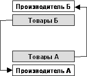
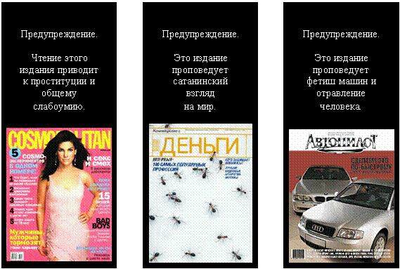

|
На
главную
Глава 12. Святое и поганое общества
У нас нет выбора между
тоталитарным и свободным обществом, между консервативным и либеральным,
между демократическим и авторитарным, между цивилизованным и отсталым
обществом. У нас нет выбора между левой идеей и правой идеей.
У нас нет выбора между красными и белыми, нет выбора между коммунистами
и капиталистами.
Наш выбор – между обществом, основанным на
добре, истине и взаимопомощи, и между обществом, основанном на
зле, лжи и насилии.
Это даже не выбор между христианским и языческим
обществом. Это выбор между человеческим обществом и ярко выраженным
сатанизмом, в котором главной целью является бесконечное увеличение
удовольствия от насилия, оцифрованного и пересчитанного с точностью
до доллара.
Наш выбор – между обществом людей и сворой
идолопоклонников. Наш выбор – между религией денег и совестью.
Наш выбор – между святым и поганым обществом.
Святое общество
Святое общество
Не важно, растёт ли материальное производство.
Тем более не важно, растёт ли экономика. Рост населения как тел
со ртом и желудком никому не нужен.
Рост насилия, будь то физическое насилие, или
его замена насилием сознания – это не жизнь и не развитие, это
дегенерация и смерть.
Святое
общество – это общество, основанное на святых ценностях.
Высшая
цель – ощущение счастья, счастья личного и общего.
Жизнь
должна быть похожа на сказку.
Направление
движения – развитие души и сознания всего общества.
Условие
развития – постоянное уменьшение всех видов насилия.
Хватит поклоняться
идолам – будь то идол, похожий на человека, идол-цифра, идол-производительные
силы и тем более идол золотого тельца.
Материальное производство, наука, техника и
материальное потребление полностью вторичны и служат для достижения
цели развития сознания
[570]
.
* * *
Счастье
– это когда действия человека совпадают с его желаниями.
Не надо путать со счастьем искусственные улыбки
или «удовольствия» от прозака или марихуаны. Желания должны быть
согласно природе человека, а не животные и не товарно-денежные.
Да, человек должен делать то, что ему хочется;
не надо идти вопреки своим желаниям. Но сами желания должны быть
человеческими, христианскими.
Личное счастье людей – в хорошей семье. Большое
счастье – жить в обществе как в большой дружной крепкой семье.
Идол денег и корпо-сатана всячески разъединяют
людей, разрушают семьи, уничтожают народы. Они хотят управлять
разъединёнными людьми и получать удовольствие от насилия над ними.
* * *
Семья – основа всего. Всё общество должно быть
построено вокруг семьи. Не семья должна приспосабливаться к экономике,
деньгам и производительным силам, а они должны приспосабливаться
к семье
[571]
. Семья начинается с мужа и жены, семья продолжается до всей страны.
Как создать крепкие семьи? Хозяйство, воспитание,
образование, жильё, медицина, культура, законы – всё вокруг семьи,
всё для сохранения и развития семьи.
Во
всех случаях должна рассматриваться не отдельная личность, а семья.
Не сознание отдельного человека, а сознание семьи как целого и
неделимого.
Общество должно быть направлено на создание
у семей общих точек привязки, на создание общих интересов, общих
ценностей у мужа и жены, у родителей и их детей. Общество должно
быть построено так, чтобы семьи хотели и могли проводить вместе
как можно больше времени.
* * *
Что такое
личность и права человека?
Вне общества, вне семьи, человека и личности
нет, они не могут существовать. Все разговоры о правах человека
вне общества бессмысленны. Какие права у заблудившегося в джунглях
или у попавшего на необитаемый остров? У него есть и любые права
– и никаких.
«Права человека» – это освобождение человека
от обязанностей перед другими людьми. Как тогда может жить общество,
в котором никто никому ничего не обязан? Через идола.
У людей – один за всех, и все – за одного.
У идолопоклонников – каждый сам для себя и всё ради идола.
Они говорят – права женщины в праве на карьеру,
в праве на конкуренцию с мужчиной за деньги, за товары, за статус,
за «удовольствия». Они противопоставляют, они сталкивают мужчину
и женщину.
Главное право женщины – право на крепкую семью.
Право женщины в том, чтобы она могла любить своего мужа. Вся система
государства должна быть направлена на то, чтобы у каждой женщины
был муж; и такой муж, которого бы она любила всю свою жизнь.
У мужчины же должна быть возможность найти
по-христиански хорошую жену.
* * *
Долой «В человеке всё должно быть прекрасно».
В
семье всё должно быть прекрасно.
Долой «Всё для блага человека, всё во имя человека».
Всё
для блага семьи, всё во имя семьи.
Нет – личности. Да – семье.
Внутренний мир общества
Основные проблемы нынешнего общества – не в
материальной области, хотя и кажется, что наоборот. Это общество
в целом задыхается от избытка материального, при этом многие люди
страдают от нищеты.
Проблемы нынешнего общества не во внешней среде
и не в природе. Его проблемы – в уродливом внутреннем мире отдельных
людей, особенно тех, кто находится «наверху» и управляет этим
обществом, и в гнилом внутреннем мире общества в целом.
С появлением естественных наук и с полным отрицанием
духовного, развитие сознания человека стало сводиться к развитию
его умений по преобразованию внешнего мира, по подчинению себе
природы и по подчинению себе других людей.
Научные знания человека важны, но его внутренний
мир, то, как он воспринимает и чувствует внешний мир, не менее
важны. Более того, все научные знания бессмысленны, если у человека
нет души. Тогда его разум и тело становятся просто продолжением
механических машин, которые они сами создали.
Сегодня внутренний мир каждого человека по
отдельности, и всех людей вместе, агрессивно и очень быстро уничтожается
корпо-сатаной. Корпорации сознательно создают внутри человека
поганые ощущения, чтобы он бесконечно пытался убежать из своего
мерзкого внутреннего мира во внешний мир блестящих побрякушек.
Но эта адская тюрьма – внутри человека. Из
неё нельзя убежать. Эту тюрьму можно только разрушить.
Необходимо срочное восстановление уравновешенного
и здорового внутреннего мира каждого человека и защита его от
всякого насилия. Необходимо заново построить внутренний мир общества
в целом. Мир, основанный на святых понятиях, на христианских символах.
Необходимо буквально проектирование этого нового – забытого старого
мира, который бы объединил людей и приносил им радость.
Прямые отношения между людьми
Из жизни людей надо постепенно убрать товарно-денежные
отношения. Между душами людей не должно быть посредников, они
должны общаться напрямую. Надо убрать из отношений всех идолов
и все культы.
Брэнды, автомобили, товары, ночные клубы, наркотики,
алкоголь, сигареты – это всё вывернутое на изнанку и контролируемое
корпо-сатаной общение.
Контроль общения начинается с желания людей
познакомиться. В деревне или в небольшом городе такой проблемы
нет – там люди знают друг друга, много времени проводят вместе,
сознание у всех привязано к одним и тем же точкам, темам, ценностям.
В больших городах, в которых сегодня живёт
большинство населения, люди разделены на отдельные квартиры, их
сознание специализировано. Работа – порознь. Общего времяпровождения
довольно мало.
Чтобы убить культы, нужны специальные программы
создания сред общения и общих точек привязки, в которых
бы не было ни излишней идеологии, ни брэндов, ни телевидения,
ни бутылки, ни тем более наркотиков и насилия.
* * *
Главная функция денег – организация. Надо создать
систему организации общества, построенную без денег.
Прямые отношения людей в организации существовали
веками, и пока ещё продолжают существовать. На них построены церковь,
образование, медицина, настоящая наука, армия. Сейчас идол активно
разъел даже эти отношения. Надо вспоминать, как были устроены
человеческие организации. Надо не отбрасывать их в пользу всеобщей
монетаризации-идолизации, а усовершенствовать.
Необходимо сознательное построение систем взаимодействия
людей как систем символов, как систем точек привязки, которые
бы были открыты для развития и совершенствования, и которые бы
нельзя было монополизировать.
Задача состоит в том, чтобы создать более высокоорганизованные
системы, чем денежная, но на принципах Добра.
* * *
Надо полностью убрать брэнды и деньги из семейных
отношений. Мужчина стремится к деньгам, к автомобилям и к прочей
мишуре, чтобы стать героем в глазах женщин (и в глазах всего общества).
Женщина выбирает мужчин по этим заданным корпо-сатаной признакам.
Корпо-сатана задаёт стереотип женской внешности,
женщина стремится к этому стереотипу, а мужчина выбирает её по
этому стереотипу.
Общество должно создать постоянную возможность
мужчине быть героем общего дела, а не частной прибыли; проявлять
себя, но не в соревновании потребления.
Надо уничтожить стереотип идеального мужчины
как богатого. Надо уничтожить стереотип женщины как внешней оболочки,
равно как и стереотип «свободной» женщины.
* * *
Сегодня в мыслях своих женщина живёт в фиктивной
сказке, построенной для неё жрецами религии денег. Это языческие
культы ресторанов, блестящих побрякушек, модных тряпок и косметики.
Надо заново создать для женщин настоящую сказку,
построенную вокруг семьи и детей. Полторы тысячи лет такой волшебной
семейной сказкой было христианство. Сегодня пришло время обновить
его; но обновить не в нео-языческом поп-стиле, а продолжить святую,
духовную сказку.
У женщины должна быть крепкая семья; у мужчины
должна быть Великая Родина.
* * *
Для молодых
быть плохими всегда веселее, чем быть хорошими и правильными.
Сегодня быть плохим – значит презирать товары
и деньги. Сегодня быть неправильным – значит любить свою семью,
любить детей, любить свою Родину.
Сегодня разврат и пороки – официальная религия.
Так будем плохими и вредными.
Разведение противоречий
Корпо-сатана сознательно создаёт конфликты
в обществе, сталкивая людей в борьбе за деньги, за власть и за
вещи.
Люди поедом едят друг друга за десяток долларов
премии, которую они спустят на сигареты, и убивают друг друга
за стопку зелёных бумажек, которые они сложат в банку. Мировые
войны ведутся за нефть, которая понадобилась всем в один и тот
же момент, хотя в течение десяти тысяч лет до этого она была не
нужна никому.
Чтобы избежать конфликтов в обществе, надо
разводить желания людей, надо разводить то, от чего они получают
удовольствия. Люди должны заново научиться получать удовольствия
от разного.
* * *
От
чего можно в принципе можно получать удовольствия?
От
общения с людьми,
от
природы,
от
познания,
от поклонения
вещам.
Почему все хотят поклоняться вещам? Знания,
природа и общение людей – бесплатны, безграничны, принадлежат
одновременно всем и гораздо более совершенны, чем тряпки в «бутике».
Любовь к природе и любовь к знаниям – это не
шаблон из школьного учебника. Сегодня это один из главных механизмов
защиты сознания.
Возлюби душу ближнего своего – а не машину
свою, тряпки свои да утробу свою.
* * *
К проблеме разделения противоречий относится
и вопрос об абсолютной справедливости. Точное распределение по
труду не так важно. Не важно, кто и сколько имеет материальных
вещей.
Попытка всё разделить по справедливости приводит
к обратным результатам. Во-первых, это сталкивает людей, создаёт
прямое противоречие, в котором кто-то всегда останется недоволен.
Во-вторых, это возбуждает желание владеть материальными вещами.
Религия денег иногда хорошо разводит противоречия.
Вместо владения землёй или предметами, люди удовольствуются владением
символами цифр на своих счетах. Беда только в том, что это символы
насилия. Их надо заменить символами любви.
Человек снова должен начать радоваться не тому,
скольких людей он обманул, не тому, сколько он отобрал у природы,
а тому, сколько добра он принёс, скольких людей он сделал счастливыми.
Пусть вначале сохранится иерархия, только более высокое место
в ней должен занять тот, кто больше принёс людям, а не тот, кто
отнял у них
[572]
.
Главное – чтобы люди снова научились получать
удовольствие от того, что они помогли другим.
Материальные принципы
Человек пока
не научился обходиться без материального мира. Поэтому нам следует
подробно обсудить материальные принципы святого общества.
I.
Преимущества религии денег
Начнём с положительных сторон религии денег.
Поскольку она так или иначе господствует в мире, то вольно или
невольно религия денег становится для нас отправной точкой, исходным
состоянием общества, которое надо изменять. При этом новое сможет
победить только в том случае, если оно будет не только теоретически
лучше, но и практически активнее, чем существующее.
Притом, что религия денег – это дорога в ад,
эта дорога частично удобно устроена. Надо хорошо понимать, что
именно заставляет людей следовать ей. Надо и понимать, что из
религии денег нельзя просто так выкинуть, что даже стоит перенести
в новое общество, и чему надо придумать замену.
Власть денег – идола – обладает целым рядом
преимуществ, которые дают ей возможность победить христианскую
и иную человеческую власть.
Мгновенность
Поощрение деньгами
происходит мгновенно и безусловно. Поощрение в человеческой системе
нередко состоит из обещаний в будущем, выполнение которых зависит
от условий, часто не подконтрольных дающему обещания. Для денег
не важно, кто и где будет руководителем, и как сложатся обстоятельства.
Универсальность
Власть денег или товаров
действует в любом месте, в любое время. Власть человека всегда
ограничена тем обществом или под-обществом, в котором признаётся
эта конкретная власть.
Гибкость
Власть денег можно
гибко и легко перераспределять. Наделение полномочиями и нужным
уровнем власти происходит просто через выделение соответствующей
суммы денег. Разграничить и распределить человеческую власть гораздо
сложнее.
Активность и организованность
Ради обладания деньгами
идолопоклонники проявляют сильнейшую активность. Деньги для них
– отличный индивидуальный стимул и средство организации.
К сожалению, люди редко набрасываются на несправедливость
также рьяно, как на доллары. Чтобы организовать людей, обычно
надо долго их убеждать и уговаривать. Поганым можно просто показать
доллары, и они тут же подчинятся.
Концентрация
власти-капитала
Деньги дают возможность
быстрой и колоссальной концентрации власти-капитала в одних руках
и в одном месте.
Хотя концентрация капитала приводит к периодическим
депрессиям и сильнейшим кризисам, эта же концентрация иногда очень
полезна. Она даёт возможность мгновенно мобилизовать усилия и
направить их на прорыв в нужном месте. При этом никого не надо
заставлять – идолопоклонники всегда охотно бегут за наживой, и
независимо от других обстоятельств.
Это особенно удобно для технических прорывов
и в моменты природных или военных кризисов.
Чёткость разграничения
Наличие частной собственности
очень чётко разграничивает власть людей над материальными вещами.
С одной стороны, частная собственность ведёт к конфликтам, но
она может и предотвращать их. В человеческой организации разграничение
гораздо более расплывчато, что нередко порождает конфликты.
Ответственность
частной собственности
В обществе идолопоклонников
нет бесхозности, потому что всё кому-то принадлежит. Владелец
собственности активно защищает своё. При этом убытки на микро-уровне
(но не на макро-уровне) локализуются на того, кто допустил оплошность,
а не на всех.
В человеческом обществе, где всё принадлежит
общине, нередко возникают ситуации, когда никто не хочет брать
на себя ответственность ради общего, а негативные последствия
принятых решений ложатся на всех.
С другой стороны, в религии денег ответственность
распространяется только на неживую собственность, люди никого
не интересуют, их жизни и души ничего не стоят. Не задумываясь,
собственники уничтожат человека, чтобы повысить стоимость принадлежащих
им активов.
* * *
На все перечисленные преимущества власти денег
эквивалентным по эффективности ответом в человеческом обществе
является только военно-командная система, система приказов.
Главным недостатком приказов является их восприятие
человеком. Очень часто приказы воспринимаются как противоречащие
собственным желаниям, как заставление против собственной воли.
Стимулирование деньгами, наоборот, воспринимается как собственное
желание.
Приказы очень сильно зависят от личности и
компетентности командира. Плохой командир – это смертельная опасность
для системы.
При любом командире, для исполнителя приказ
нередко кажется не самым лучшим вариантом действий. Злоупотребление
приказами слишком ограничивает жизнь. Отсюда хороший командир
не столько отдаёт приказы, сколько создаёт у подчинённого желание
выполнять нужные действия.
Помимо приказов, другим возможным ответом на
систему власти денег являются личная вера, сознательность, убеждённость.
Но в этом случае проблема в том, что сложно проверить, искренне
ли действует человек.
Конечно, деньги – это ещё более сильный приказ,
только скрытый, не осознаваемый человеком.
* * *
Система власти денег вырабатывает определённые
отношения, которые её существенно усиливают.
Возможность риска
Деньги дают хорошую
свободу риска, предпринимательства, возможность взять на себя
ведущую роль и ответственность. С другой стороны, этот риск чётко
управляем и ограничен рамками полученного капитала.
В человеческой системе необходимы множество
согласований, утверждений и поиск союзников или покровителей.
Системы, основанные на человеческих отношениях, имеют тенденцию
к быстрому обюрокрачиванию. С одной стороны, они препятствуют
малому риску, с другой стороны – не защищены от катастроф в случае
прихода на высокий пост дурака или предателя.
Конкурентоспособность
Постоянная конкуренция
поддерживает в идолопоклонниках очень высокий иммунитет, что делает
их устойчивыми к внешним воздействиям (в отличие от тепличных
условий закрытых обществ).
Консенсус
На почве всеобщего
пристрастия к золоту идолопоклонники легко находят общий язык
и преодолевают некрупные противоречия. Они всегда готовы объединиться,
чтобы поживиться.
Людям человеческих религий, у которых разные
символы и ценности, объединиться объективно гораздо труднее.
Отслеживание отношений
Отношения, сведённые
к деньгам, очень легко отслеживать. Взаимодействия идолопоклонников
полностью отражены в транзакциях на банковских счетах.
Отследить отношения в человеческом обществе
гораздо сложнее. Есть много невидимых, косвенных связей, которые
сложно выявить, но которые необходимо учесть при принятии любых
решений.
Мгновенный и чёткий
учёт «добрых» и «злых» отношений
Религия денег легко
учитывает «добрые» и «злые» отношения как дебет и кредит соответствующего
банковского счёта. По состоянию счёта идолопоклонники и оценивают
друг друга.
В человеческих обществах эквивалентом «счёта»
является мнение и память окружающих, которые заведомо ограничены,
субъективны и не всегда справедливы. Банковский счёт создаёт иллюзию
объективности.
В СССР аналогом банковского счёта были характеристики
на человека из разных мест, где его знали.
Лёгкость наказания
и лишения власти
Провинившихся идолопоклонников
легко наказать и лишить власти. Достаточно просто снять деньги
с их счёта, и остальные перестанут им подчиняться. Наказание строго
дозировано.
В человеческой системе наказания гораздо более
размыты и по-разному действуют на разных людей. Предупреждения,
порицания и выговоры далеко не всегда действенны. Иногда единственный
реальный способ наказания и лишения власти – заключение или смерть.
Перевод отношений
в идеальность
Развитие товарно-денежных
отношений в сторону идеальности позволило избавиться от негативных
последствий многих людских пороков (но не от самих пороков). Вместо
того чтобы накапливать реальные товары, и этим создавать их нехватку,
идолопоклонники теперь наоборот, стремятся избавиться от товаров
и накапливать символы.
Гораздо лучше, чтобы идолопоклонник копил цифры
в памяти компьютера, чем чтобы он копил и гноил зерно в своём
амбаре или тащил к себе в дом всё, что ему надо и не надо.
И в человеческом обществе, пока существует
жадность и алчность, их следует направлять на символы, а не на
завладевание нужными людям продуктами и товарами.
Саморегуляция
на микро-уровне
Рыночная экономика
саморегулируется на микро-уровне. На микро-уровне (но не на макро-уровне)
потребность тут же вызывает предложение, цены приходят в равновесие,
платежеспособный спрос рождает производство.
Удобная модель
для торговли
При множественной
конкуренции, для розничной и оптовой торговли модель счётной книги
действительно адекватна – она минимизирует затраты, уменьшает
склады, заставляет думать об том, как сделать торговлю удобнее
для покупателя, а не для продавца. Она в хорошем смысле обезличивает
торговлю, сводя её просто к функции доставки и эффективного распределения
товаров.
Конечно, все эти преимущества – это видимая
лёгкость. Во многом они достигаются за счёт опримитивливания всех
отношений и уничтожения всего, что не вписывается в арифметические
схемы счётной книги. В реальной жизни есть гораздо больше рисков,
чем потерять деньги, и поиск согласия не сводится к нахождению
третьего, за счёт которого получат прибыль двое достигших консенсуса.
Но на то она и дорога в ад, чтобы быть лёгкой,
от того и бредут по ней миллионы. И от идущих по этой дороге и
от тянущих за собой надо уметь защищаться.
* * *
Смысл политэкономии – в переходном периоде
управления злом. Смысл в том, чтобы начать управлять идолопоклонниками
через понятного им идола, но постепенно и постоянно переходить
к управлению через человеческие и святые понятия и ценности для
всех, кто расстанется с идолом. Не надо резких шагов, следует
постепенно менять правила, постепенно менять отношения.
К сожалению, политэкономия, существовавшая
в позднем СССР, мешала новым людям и раздваивала их личность,
поскольку пыталась стимулировать их идолом. При этом она плохо
управляла идолопоклонниками, потому что не понимала сути денежной
экономики как религии. Политэкономия социализма полагала, что
при социализме алчность и жадность идолопоклонников отличается
от жадности и алчности при капитализме, и оставляла для них много
возможностей для злоупотребления системой.
В реальности дело не в названии строя, а в
том, чем руководствуется каждый конкретный человек в своей жизни.
Бесполезно рассчитывать на сознательность идолопоклонника или
призывать его к сознательности. Бесполезно даже наказывать его,
потому что он найдёт способ обойти наказание. Надо ставить его
в такую ситуацию, когда он будет работать изо всех сил, думая,
что получает прибыль, но при этом он не сможет повредить обществу.
Надо научиться управлять злом.
Принципы и проблемы материальной организации
Для материальной организации справедливого
общества должны быть найдены ответы на пять основных вопросов:
1)
Как гарантировать каждому разумно достаточный уровень жизни.
2)
Как организовать свободный обмен результатами труда. Обмен по
желанию, без принуждения как обмениваться, так и не обмениваться.
3)
Как организовать развитие средств производства, поскольку для
этого требуются совместные усилия многих.
4)
Как поступать с излишками, которые неизбежно образуются при обмене,
поскольку от их использования зависит развитие или неразвитие
всего общества.
5)
Как обеспечить внутреннюю и внешнюю защиту от всех форм насилия.
Как мы увидели в предыдущих главах, рыночная
экономика не справляется ни с одним из этих условий. Ниже мы постараемся
ответить на все эти вопросы (хотя и не в том порядке, что приведён
выше).
* * *
Первым и самым главным принципом является гарантия
основных жизненных потребностей. Она включает доступность
жилья, еды, одежды, медицины, образования и отдыха.
Это должно быть достигнуто не через пособия
или подачки, ибо безделье разлагает и отупляет сознание, но через
возможность заработать самому и без перенапряжения. Сегодня люди
имеют достаточно знаний о природе, чтобы каждый человек мог обеспечить
себя за пару часов работы в день.
Возможность работать должна быть доступна всегда.
С другой стороны, никого не надо заставлять работать. Просто тому,
кто не работает, нечего будет есть.
Часть рабочего времени, помимо обеспечения
себя, будет уходить на работу на общие нужды, в том числе на защиту
от насилия.
* * *
С другой стороны, зачем, чтобы бесконечно росла
экономика? Если у меня уже достаточно обуви, почему я должен продолжать
производить и покупать её? Не лучше ли просто остановить обувную
фабрику и дать людям отпуск. Не важно, что в счётных книгах станет
меньше транзакций.
Если изобретается новая технология, появляется
новая интересная идея, то люди сами захотят увеличить рабочий
день. Но если ничего нового не придумано, а уже произведённого
достаточно для жизни, то зачем не то что увеличивать обороты,
зачем даже сохранять лишние объёмы производства?
Как мы отмечали, в нынешней системе религии
денег рост экономики необходим из-за сильнейшего перекоса в доходах
людей, чтобы низшие слои общества не лишились средств к пропитанию.
* * *
Надо поощрять духовное
развитие, но не надо никого заставлять быть святым. Человек, который
хочет завалить свой дом коврами, тряпками и хрусталём, должен
иметь все возможности для этого. Но при соблюдении трёх условий:
1)
Никто не принуждает его прямо или косвенно, в том числе с помощью
рекламы и иного насилия сознания.
2)
Он получает эти вещи только своим трудом, без возможности прямо
или косвенно заставить кого-то работать на себя.
3)
Это не наносит ущерб природе и экологии.
Роль государства – организовывать работу, а
также пресекать любые попытки монополизации и насилия.
* * *
Проблемы материальной организации
При материальной организации возникает несколько
принципиальных проблем и противоречий, которые давно известны,
но которые по-прежнему не решены.
Некоторые из них
мы уже затрагивали, а сейчас рассмотрим подробно наиболее важные:
§
проблему разделения труда,
§
проблему города,
§
проблему развития науки,
§
проблему частной собственности и денег,
§
проблему объединения людей.
II.
Проблема разделения труда
Традиционными и очень сильными достоинствами
разделения труда являются резкое увеличение производительности
труда и возможность выбора рода занятий. Но разделение труда и
сопутствующую ему специализацию нельзя рассматривать как абсолютный
плюс.
* * *
Во-первых, излишняя специализация –
это уничтожение сознания.
Как мы обсудили в 7-й главе, специализация
при товарно-денежных отношениях – это форма саморабовладения.
Это справедливо как для отдельного человека, так и для общества,
так и в международном «разделении труда».
Надо отказаться от абсолютной максимизации
производительности труда. Изменения мира внешнего вторичны по
отношению к изменению сознания. Важнее сохранить внутреннюю гармонию,
чем сделать больше вещей
[573]
.
Надо убрать и предпосылки специализации из
жизни. Надо убрать сравнение людей между собой, надо оставить
только сравнение человека самого с собой, своих достижений со
своими возможностями. Постепенно следует убрать спорт ради цифр,
универсальные оценки в школе как вид примитивного ранжирования
людей и так далее.
* * *
Во-вторых, разделение труда – это автоматическое
создание условий для монополизации результатов труда.
Когда возникает возможность узурпации? Там,
где труд отделяется от человека.
Если весь труд обобществлён, то его можно отобрать
весь. При этом неважно, происходит ли обобществление в виде частной
или в виде государственной собственности. От государственного
распорядителя обобществлённой собственностью до частного собственника
– один шаг.
В 1992 году было очень легко украсть станки
и заводы, потому что они были обобществлены. А вот украсть дачи
или квартиры даже не пробовали, поскольку это вызвало бы немедленный
и очень сильный протест.
Тот труд, который уходит на собственное обеспечение
производителя и осуществляется на принадлежащих ему средствах
труда, у производителя в принципе невозможно отобрать скрытым
насилием – финансовым или сознания. Его можно отобрать только
открытым физическим насилием, что тут же вызовет сопротивление.
Поэтому надо стремиться к тому, чтобы труд, необходимый для самообеспечения,
минимально отделялся от человека.
При этом надо помнить, что если мелкое личное
хозяйство, которое используется на непосредственные нужды его
владельца – это хорошая преграда к монополизации, то частная собственность
– это монополизация, которую невозможно остановить. Не следует
говорить о классе мелких собственников. Там где есть собственность,
всегда будет насилие. Класс мелких собственников – это класс мелких
насильников друг друга, отдельные из которых со временем станут
крупными насильниками. Следует говорить о личных самодостаточных
хозяйствах.
Натуральное, безденежное и нетоварное хозяйство
гораздо менее подвергнуто узурпации, чем товарное и денежное.
В производстве необходимого следует уменьшать товарность
до минимума. Сто лет назад ситуация была иной, но сейчас, в условиях
материального насыщения и развития науки и техники, чем больше
производитель будет самообеспечиваться, тем лучше.
На что использовать свободное время – это воля
самого человека. Как организовать производство сверх необходимого
– могут быть варианты. Но главное – чтобы базовые потребности
человека были в его руках, и при любых катаклизмах в обществе
он всегда имел возможность полностью самообеспечить себя.
Монополизация в религии денег началась с огораживания,
она должна закончиться анти-огораживанием.
* * *
В-третьих, специализация
толкает каждого к насилию.
В разделённой рыночной экономике люди постоянно
вовлечёны в двушаговые акты обмана друг друга.
Первый шаг – человек обязан специализироваться
и выкладываться на работе, получать максимальную прибыль от продажи
своих товаров или услуг. Чем выше специализация, тем легче обмануть;
не будешь специализироваться, разорят конкуренты. Всё или ничего.
Второй шаг – трата полученной прибыли в процессе
покупок. Это опять акт обмана, только теперь уже продавец и покупатель
поменялись местами.
Без продажи своего труда и без покупки чужого
труда нельзя обойтись именно потому, что человек сильно специализирован.
Более того, если я вынужден работать 8 часов в день, то я вынужден
и тратить полученные деньги, даже если мне ничего не надо.
В итоге человек ненавидит свою работу, выматывается
в офисе или на конвейере; только для того, чтобы потом заплатить
другому за развлечения. Поскольку работа ненавистна, то и развлечения
– жестокие.
Чтобы не искушать человека, чтобы в принципе
покончить с самой возможностью обмана, надо построить систему
таким образом, чтобы у каждого была возможность не только специализироваться,
но и универсализироваться.
* * *
Чтобы
решить проблему разделения труда, надо ... разделить труд на три
вида:
1)
необходимый человеку для собственного обеспечения,
2)
общественно необходимый и
3)
труд сверх необходимого, для производства удовольствий.
По каждому из этих видов труда человеку должен
быть предоставлен выбор – работать ли самому, или воспользоваться
обменом результатов труда.
Должны быть созданы условия для реализации
этого выбора. В нынешней системе религии денег, как и в социализме,
человек обязан работать на обмен полный рабочий день.
Труд, необходимый для собственного обеспечения
– человек должен иметь возможность сам вырастить себе еду, или
специализироваться в чём-то и гарантированно получить еду в обмен
на сделанное им.
Общественно необходимый – человек должен
иметь выбор – отработать лично на государственные и коммунальные
нужды, или внести вклад в виде созданных им продуктов
[574]
.
Для удовольствий – человек может продолжать
работать и обменивать свои излишки на излишки других, или
заниматься дома тем, чем ему нравится, или духовно самосовершенствоваться.
* * *
Если человек хочет жить лучше материально –
он будет больше работать. Если он хочет духовно самосовершенствоваться
– он будет меньше работать руками и меньше потреблять материально,
но больше уделять времени саморазвитию и работать интеллектуально.
Если я 5 часов работаю с удовольствием, 6 –
уже посматривая на время, а 8 – с усталостью и раздражением, то
у меня должен быть выбор – (1) работать ли 8 часов, отдавать излишне
произведённое в распоряжение распределительной системы (не важно,
как устроенной), а потом покупать себе отдых и развлечения; или
(2) просто работать 5 часов, а потом отдыхать или самому заниматься
тем, что мне нравится.
С другой стороны, если человеку нужно больше
произвести на обмен, и он хочет поработать 12 часов в день – у
него постоянно должна быть и такая возможность.
Не должно быть одинакового для всех распорядка
дня (кроме чрезвычайных ситуаций). Человек должен иметь возможность
работать столько, сколько ему нравится, при этом не боясь, что
его съест конкурент.
Надо организовать гибкую работу – в зависимости
от отрасли, где-то будут работать несколько часов в день, где-то
несколько месяцев в году. Где-то – год работать, год отдыхать.
* * *
Надо максимально уменьшить зависимость людей
от купли-продажи или обмена. У каждого человека должна быть возможность
самому делать нужные ему вещи, когда он захочет и сколько он захочет.
К сети специализированных заводов надо добавить
сети мастерских «Сделай сам», которые бы давали доступ к станкам
и материалам. Это будет и развивать сознание людей. Однообразные
операции, как на конвейере, так и в офисе, сужают, отупляют и
уничтожают сознание.
Надо и дать возможность человеку как можно
больше времени проводить в семье, поскольку цель общества – не
производство ради производства, и не деньги ради денег.
Надо понимать, что часть труда неизбежно будет
«выкидываться» – на оборону, на борьбу с болезнями, со стихийными
бедствиями и на иные причины, которые вне власти общества.
* * *
Неправильна формула «от каждого
по способностям, каждому по потребностям». Она подразумевает разделённый
и отчуждённый труд – от человека что-то забирается наверх, и сверху
ему что-то выдаётся.
Каждому
– возможность работы по желанию и по способностям, от каждого
– по общим потребностям.
При этом не «свободное
развитие каждого является условием свободного развития всех»,
но
Развитие
всех является условием свободного развития каждого.
Планирование
Как можно построить такую систему, чтобы она
был работоспособной? Всем знакомым планированием.
Чтобы вспомнить о планировании, надо разоблачить
миф о саморегулируемости рынка и негибкости «плановой экономики».
Как вы думаете, почти 1.5 миллиона служащих
корпорации Wal-Mart саморегулируются, или действуют согласно весьма
детальным планам, принятым руководством корпорации?
Как вы думаете, 500 тысяч сотрудников Даймлер-Крайслер
производят автомобили путём чёткого планирования каждой операции
на десять лет вперёд и с точностью до долей секунды, или Даймлер-Крайслер
организован как базар, в котором каждый стоит у своего рабочего
места и выкрикивает: я могу сделать чертёж, а я могу выточить
болванку; и они вот так постепенно самодоговариваются и саморегулируются?
* * *
Одной из главных причин, почему в свободном
рынке процветают корпорации, одной из главных экономических причин
монополизации, одной из главных причин того, что корпорации крупнее
стран, как раз и является то, что внутри корпораций применяется
планирование, а не базар свободного рынка.
Более того, чем крупнее корпорация, тем сложнее
и совершеннее модели планирования, которые она может применить.
В чистом рынке можно применять только арифметические модели планирования,
поскольку в модели счётной книги не предусмотрено операций кроме
сложения-вычитания и умножения-деления.
Саморегулируемость и свобода рынка – это чушь,
которую корпорации сознательно вешают на уши странам, чтобы те
не могли поднять своё хозяйство и полностью зависели от наднациональных
корпораций.
Корпорации – это всесильные всемирные министерства,
только они подчиняются не людям, а десятку своих владельцев. Только
планирование в них направлено не на то, чтобы сделать жизнь людей
лучше, а чтобы высосать из них как можно больше денег под видом
улучшения жизни.
Только сложное межотраслевое планирование вывело
корейские и японские концерны в число сильных в мире. Не случайно
кейретсу и чиболы организованы именно как многопрофильные кластеры
фирм, подчиняющихся общему правлению и действующих в общих интересах.
* * *
Плановая экономика имеет ещё один большой плюс,
которого не имеет свободный рынок. Она вообще не зависит от наличия
или отсутствия денег, валюты, инвестиций и так далее в той части
связей, которые замкнуты внутри системы. Это своего рода
хорошо запланированный и выполненный многошаговый бартер. Деньги
нужны только для целевого получения необходимого извне
системы
[575]
. Плановая экономика не связана идолом.
Именно поэтому темпы роста СССР были намного
выше западных. Почему темпы упали? Госплан стал неправильно работать
не потому, что планирование – плохой подход, а потому, что цели
стали задавать неправильные.
Итак, планирование
побеждает «саморегулирующийся» рынок потому что:
1)
Оно не ограничено четырьмя арифметическими действиями, а позволяет
применять сложные модели управления.
2)
Оно не имеет религиозных ограничений в смысле поклонения идолу.
Если Госплан работал первые 30-40 лет без всяких
компьютеров и сумел обеспечить построение и чёткую работу огромной
промышленности, то при правильном подходе к планированию и с всеобщей
компьютеризацией можно организовать любую систему.
Надо просто планировать не от достигнутого
и не по прямой. Надо учитывать, что цель – развитие сознания,
а не производство ради производства; что рост экономики не важен,
важно то, что чувствуют люди.
Необходимо чёткое планирование жизненно важного,
но у людей должна быть определённая самостоятельность и возможность
риска в работе над всем остальным.
* * *
Сразу возникает вопрос о планировании цен
(пока мы не избавились от денег). Цены должны быть планово установленными,
но не они должны быть фиксированы навсегда.
Цены должны стремиться к себестоимости, но
они должны формироваться не только из затрат труда, но и исходя
из особенностей соотношения спроса и предложения. Цены должны
быть инструментом регулирования спроса и предложения.
В такой ситуации обычно будет возникать небольшая
прибыль. Не надо стремиться к абсолютной справедливости в обмене,
ибо она и недостижима, и порождает конфликты. Полученную прибыль
надо направлять на общее дело или помогать самым нуждающимся.
Надо также помнить, что цены взаимосвязаны
с ценностями. Надо регулировать систему цен субсидиями и тарифами,
а также помощью и льготами людям.
III.
Проблема города
После разделения труда следующая большая проблема
– это проблема города. Большинство населения России живёт в крупных
городах. Рост урбанизации продолжается и в мире.
Для античного рабовладельческого мира город
был основной ячейкой. Для средневекового христианского мира основой
была деревня. Для рабовладельческого мира нового времени центром
опять стал город.
Крупный город существует по меркам истории
очень мало. В начале XX века в городах жило 10 процентов населения
мира, к 2010 году будет жить более 50 процентов. Ещё меньше времени
существует главный отравитель города – автомобиль.
* * *
Хотя прошло всего два-три поколения, уже мало
кто осознаёт, насколько безумен современный город, это детище
религии денег. Оно так захватило свои жертвы, что те потеряли
силы к сопротивлению.
Промышленные города начинались как рабовладельческие
концлагеря для согнанных с земли и разорённых крестьян. Религия
денег селила фабричных рабов исходя из единственного принципа
– меньше расходов. Если рабы калечились, заболевали или умирали,
владельца фабрики это не интересовало, он набирал следующих рабов.
Миллионы людей оказались зажатыми в узких каменных
клетках, вокруг ядовитых заводских труб, где нет ничего живого.
Их хозяевам всё равно – они живут в загородных замках и виллах.
* * *
В России в 1930-е годы города росли вынужденно,
чтобы как можно быстрее создать оборонную промышленность перед
неизбежной войной.
Но сейчас города потеряли хозяйственный смысл.
Промышленное производство, как на Западе, так и в России автоматизировалось,
идеализировалось и сократилось. Наступило «пост-индустриальное»
общество. Связь, компьютерные сети, развитие транспорта и технологий
сделало совершенно ненужным концентрацию производства и офисов
в одном месте.
Зачем же два, три или десять миллионов людей
скапливаются на одном узком клочке земли, уничтожают там всё живое,
заваливают его камнями и асфальтом? Каждый из этих миллионов заводит
себе две тонны железа на колёсах, которые он повсюду таскает за
собой на этом узком клочке земли, сжигая в год две тонны ядовитой
жидкости на человека. Миллионы людей ежедневно травят и периодически
убивают друг друга ради этих железяк и всё той же жидкости.
Зачем? Хозяйственная целесообразность? Промышленные
предприятия выносятся из городов, но люди остаются в городах.
Экономия на затратах на коммуникации? За небольшую долю тех денег,
которые сегодня стоит квадратный метр жилой площади в Москве,
можно проложить любые коммуникации в любом городе или посёлке
Подмосковья.
Города растут потому, что такова суть идолопоклонничества.
Идолопоклонники пытаются залезть выше другого в воображаемой ими
пирамиде, даже если это означает всеобщее помешательство и коллективное
самоубийство. Они хотят иметь автомобили, потому что это делает
их «выше». Они скапливаются в городе, потому что коллективно воображают,
что «стоимость» их тюремных клеток – квартирок увеличивается,
если они все скоплены в одном месте
[576]
.
Большая часть населения города занята исключительно
поддержанием жизнеспособности этой нечеловеческой среды обитания
и, в отсутствие материального производства, насилием сознания
друг друга.
Из этого шума, вони, тесноты, из этого мёртвого
пространства люди бегут при первой возможности. На Западе те,
у кого есть достаток, переселяются в пригороды – субурбы. В России
каждый второй горожанин спасается на даче.
В 1917 году крестьяне не требовали переселить
их в город. Они даже не просили никаких городских благ. Им нужна
была только Земля и Воля.
* * *
В 2003 году в 13-ти городах-миллионерах России
живёт 40 процентов всего населения
[577]
. Средняя продолжительность жизни мужчины – 58 лет.
Люди умирают в городе, люди из деревень уходят
умирать в город. В 34-х тысячах деревень России осталось менее
10 жителей
[578]
. За последние 10 лет исчезли 17 тысяч деревень. Зато в Москве
уже 10.5 миллионов жителей, рост с 1989 года на 17 процентов.
Вот и секрет московской пирамиды цен на жильё.
Со всей огромной территории страны люди постепенно
съезжаются в узкую южно-европейскую часть. Сельское население
в русской России сокращается, но оно растёт на Северном Кавказе,
где сохранились крепкие родовые и семейные отношения, сохранились
человеческие связи.
* * *
Рост городов возможен только до тех пор, пока
в них есть приток свежей крови из деревни. Так происходит во всех
странах – пока идёт урбанизация, города растут. Когда в город
больше ехать некому, вымирают и города, и деревни.
«Свобода» городского человека по сравнению
с деревенским – это свобода комнатного фикуса в цветочном горшке.
По своему желанию корпорация может дать или не дать фикусу воды;
увеличить или уменьшить подачу тепла; подсыпать или не подсыпать
удобрения; выделить фикусу горшок побольше или поменьше; переставить
фикус поближе к месту под солнцем или просто выбросить его на
помойку.
Город не в состоянии воспроизвести собственное
население. С образцово-«гуманном» городе Стокгольме 70 процентов
жителей никогда не имели, не хотят и никогда не будут иметь детей.
Чтобы не вымереть, Орда уже не один десяток лет активно втягивает
в свои города иммигрантов из стран третьего мира.
Города стали центрами преступлений, наркотиков
и извращений. Город – это рассадник товарно-денежных отношений
и мировоззрения религии денег. Чем крупнее современный город,
тем он больше похож на психиатрическую лечебницу, которую покинули
санитары.
Город совершенно несамодостаточен, и в случае
социальных потрясений, нарушения снабжения и так далее он обречён
на голод, замерзание и мгновенное одичание населения.
Город = Убер-тюрьма,
Город = Смерть.
Нынешняя «цивилизация» – это зловонный разлагающийся
труп. Чем быстрее он исчезнет, тем лучше. Человек, который сохранил
способность мыслить, будет искать спасения из этой цивилизации.
Мир хижинам, война городам.
* * *
Конечно, уход из города – это не возврат к
лучине и к сохе. Надо разработать проекты небольших относительно
самодостаточных общин-комплексов, сочетающих сельское хозяйство,
некрупное промышленное производство, систему образования, медицинское
обслуживание, духовные учреждения и воинскую часть.
Каждый дом должен иметь хороший приусадебный
участок, электричество, водопровод, канализацию, телефон, Интернет
[579]
. Комплексы должны иметь хорошие средства связи и дороги.
Критерием проектирования должна стать не максимизация
внешнего выхода производства, но стремление к самообеспечению
его жителей всем необходимым, экологичность, самовосстанавливаемость
и максимальная автономность
[580]
.
В проекты надо включать и предприятия, которые
будут специализироваться на производстве на нужды нескольких общин
или на нужды государства в целом; но жизнеспособность поселения
не должна зависеть от этих специализированных заводов.
Города выполнили свою историческую функцию.
Они создали макро-промышленность, которая позволяет создать рассредоточенную
мини- и микро-промышленность. Можно сохранить отдельные промышленные
зоны, которые будут расположены в безлюдной местности, и в которых
сосредоточить наиболее вредные производства, с работой вахтами.
В общинах люди будут знать друг друга напрямую.
Товарно-денежные отношения будут сведены к минимуму.
Такие поселения будут составлять надёжную основу
государства. Чтобы выжить в нынешней «цивилизации» насилия, общество
должно быть похоже на крепкую сеть самодостаточных узлов, а не
на центральный компьютер с полностью зависимой от него периферией.
Если что-то произойдёт с одним узлом, остальные должны продолжать
работать и взаимодействовать между собой.
В новом обществе «столицы» не будет
[581]
. Функции управления будут рассредоточены. Представительские функции
будут выполнять города и поселения по очереди.
Проблема развития науки
В XIX веке отсталый, опьянённый религиозным
дурманом крестьянин, безо всякой механизации, без научных методов
земледелия и производства, и при нещадной эксплуатации помещиком,
жил относительно счастливо и мог прокормить свою семью из 5-6
детей.
В XX веке в результате научно-технической революции,
использующий самую передовую технику, отучившийся в среднем 15
лет в школе и институте, обладающий всеми демократическими правами
и свободами горожанин, с большим трудом, нервно покуривая сигарету,
глотая таблетки и впадая в стрессы и депрессии, может вырастить
1 ребёнка. Этот ребёнок имеет гораздо больший шанс стать наркоманом
или алкоголиком, или просто умереть от рака, чем создать нормальную
семью.
В XXI веке следующий этап информатизации и
компьютеризации, очередной прорыв в науке или ещё одна компания
по утверждению демократии станут последними. Люди или опять массово
рехнутся и начнут убивать друг друга, или тихо помешаются и молча
окочурятся в одиночестве, сидя перед экраном компьютера или телевизора.
* * *
Не надо видеть в науке абсолютную светоч. К
науке надо относиться как к одному из возможных и довольно небезопасных
представлений о мире.
Дальнейшее преобразование природы вредит человеку.
Критерием деятельности людей должно стать уменьшение влияния на
природу.
Что бы не изобретала наука, дерево всё равно
приятнее пластика, выращенные без химии продукты гораздо вкуснее
искусственных, а живой человек лучше телекартинки.
Тридцать лет бурного развития цифровой техники
показали, что для человека всё равно лучше аналоговая техника.
Лампы 1950-х годов и грампластинки гораздо чище воспроизводят
звук, чем самые лучшие компьютеры и самые дорогие цифровые усилители.
Массовое применение цифровой техники и полное забытие аналоговой
объясняется только тем, что это дешевле и удобнее для корпораций,
для машин, и лучше вписывается в арифметические основы религии
денег.
* * *
Это не значит, что научно-техническая революция
выдохлась и не предложит новых штучек, которые удивят и заворожат
людей. Но эти штучки едва ли улучшат их жизнь.
Лучшее, что сегодня может придумать прикладная
наука – это сделать себя невидимой. В технике полезные человеку
функции должны остаться, а сама техника должна свернуться до микроразмеров.
В области управления наука должна резко упростить
и сделать прозрачной организацию производства и товарообмена.
Из существенных достижений в технике в ближайшее
десятилетие должна произойти революция аккумуляторов энергии,
которые заменят бензин в автомобилях. Ими могут стать водородные
батареи или иное топливо. В принципе, сегодня только нежелание
автомобильных и нефтяных корпораций разрабатывать новые технологии
сегодня сохраняет бензиновые автомобили.
Но скорее всего, эта энергетическая революция
просто приведёт к тому, что не только ядовитые тяжёлая и химическая
промышленность будут вынесены за границы Орды, но и производство
всей энергии. Водородные батареи заряжаются всё равно через сжигание
обычного топлива. Третий мир будет дышать выхлопными газами своих
хозяев, а те – чистым воздухом.
Другая революция может произойти в генной инженерии
и клонировании. Будем надеяться, что промежуточные результаты
генной инженерии съедят своих создателей прежде, чем те успеют
докончить эту революцию.
* * *
Символьно-числовая модель мира, которую мы
обсудили в 4-й главе, имеет целый ряд особенностей, которые в
принципе могут быть губительны для человеческого сознания. С числами,
как и с огнём, надо обращаться осторожно.
С одной стороны, сохранение и развитие научного
знания необходимо, и нельзя опримитивливать школьные программы.
Но дальнейшее доминирование символьно-числовых
представлений о мире уничтожит сознание человека. Необходимо срочно
восстановить баланс духовности и научности. Восстановить хотя
бы до уровня 1960-х годов.
Не надо пытаться во всём усилить роль математики,
особенно в «науках» об обществе. Нужна не столько научная организация
труда, сколько человеческий подход к проблемам человека.
Нынешняя школа – это в лучшем случае обучение
человека производству материальных вещей или методам получения
власти. В худшем случае – это программирование рабов. Цель школы
– развитие личности, развитие сознания. Материальные и числовые
науки должны рассматриваться как одно из средств такого развития.
Следует запретить преподавание математики и
иных «точных» наук детям до 10 лет. В начальной школе преподавать
классическую музыку, словесность, логику, историю, природоведение,
изобразительные искусства.
В каждом классе математики и физики в средней
школе над доской повесить предупреждение:
Цифры
– это инструмент управления и насилия. Цифры – это способ насилия
над природой и над людьми. Мы изучаем цифры только для того, чтобы
самим не стать жертвами насилия со стороны математики и физики.
Занятия первокурсников в ВУЗах начинать с духовного
суда над Ньютоном.
Смерть цифрам.
* * *
В каком же направлении должна развиваться наука?
Со времён «просвещения» в науке сложился вульгарный
взгляд на понятие религии, на роль религии в обществе. Не будь
тысячелетних усилий христианства, «просветителям» пришлось бы
общаться с дикарями; не говоря уже о том, что не было бы самих
«просветителей».
Настало время отрицания отрицания. Дальнейшее
развитие общества лежит не в технике, а в духовном развитии
[582]
. Уже 30-40 лет существует идеалистическое общество, только оно
построено не на христианских, а на антихристианских принципах
и развивается в сторону сатанизма.
Что такое научный коммунизм? Это научное христианство.
Христианство, очищенное от суеверий, предрассудков и мистики.
Это наука в управлении природой, это христианские принципы в управлении
сознанием общества и душой человека.
Наука должна осознать, что она – религия. В
этом и есть направление дальнейшего развития науки.
* * *
Русская наука – это религия. Западная наука
– это секта. Секта поганых колдунов, которые выискивают способы
насилия над людьми.
Сегодня понятно, почему в древности сжигали
библиотеки. Понятно, почему европейцам запрещали читать античных
авторов.
В руках Запада учебник физики – это посох смерти.
IV.
Проблема частной собственности
Камнем преткновения в любых рассуждениях об
устройстве обществ является вопрос о частной собственности.
Частная собственность – это в первую очередь
общественное отношение, а не материальные вещи, которые участвуют
в этом отношении. Частную собственность можно отменить декретом,
но от этого она не исчезнет из сознания. Скорее наоборот, просто
сменится владелец, или владелец заменится распорядителем.
Отмирание частной собственности – это отмирание
представления о мире как о неравном мире, отмирание самой идеи
о том, что один человек может использовать насилие против другого,
а жертва – воспринимать это как должное и хотеть стать насильником.
Отмирание частной собственности – это постепенный
процесс. Общество должно не столько отобрать собственность, сколько
отвергнуть собственников. Сначала богатство должно стать всеобще
презираемым. Причина и успех Октябрьской революции были не в том,
что у помещиков и капиталистов отобрали собственность и поделили
её. Причина и успех были в том, что люди стали считать саму идею
частной собственности античеловеческой.
Частная собственность – это представление в
сознании человека о том, что место человека в обществе определяется
по количеству насилия, которое он осуществляет над другими. Это
представление нельзя конфисковать. Через национализацию право
неограниченной частной собственности можно заменить правом распоряжения,
которое ограничено во времени и в границах. Но даже если собственность
– государственная, ею всё равно распоряжаются конкретные люди.
В 1930-1950-е годы у большинства из советских руководителей в
сознании не было неравенства, но потом оно появилось.
* * *
В переходный период в собственности нас интересует
не её бумажная принадлежность, но то, на какие цели она используется.
Если владелец собственности в целом действует в интересах общества,
то пусть он в своих мыслях остаётся владельцем.
На похожем подходе построен смысл самодержавной
власти. Царь изначально получает в свою собственность государство.
От рождения ему принадлежит всё. Ему не надо драться. Но распоряжаться
самодержавной властью он должен во благо всех
[583]
.
Если же собственник не действует на общее благо,
то ограничить и направить распоряжение собственностью можно и
без её конфискации. Через налоги, законы и иные методы воздействия.
Формальная национализация иногда необходима, но она плоха тем,
что вызывает сильное противодействие, на подавление которого уходит
слишком много сил.
Лишить собственника власти, формально не конфискуя
собственность, можно, например, парализовав его работу через забастовку,
через поставщиков, через бойкот товаров и так далее. Если люди
совместно захотят чего-то, то они могут сделать всё, что угодно.
Если можно обойтись такими методами, то это лучше использовать
их.
Цель – не экспроприация ради экспроприации.
Цель – заставить частную собственность работать на общее дело.
Если собственник понимает только язык идола – когда возможно,
лучше разговаривать с ним на языке идола, чем на языке физической
силы.
* * *
В вопросе о частной собственности как источнике
эксплуатации, также важен не принцип, а функция – лишение частных
лиц никому неподконтрольной власти над обществом.
Сегодня власть частной собственности – это
во многом религиозная власть брэндов. Гораздо важнее убрать у
людей желание владеть брэндами, а не отнимать брэнды у собственника.
Если убрать это желание, исчезнет и сама собственность.
Если национализировать брэнды, то просто возникнет
ещё одна ситуация саморабовладения общества. По мере идеализации
товаров очистка сознания от частной собственности становится легче,
ибо брэнды – это просто символы.
Пусть пока останутся у толстых их дачи за высокими
заборами, квартиры и погановозы. Главное – лишить их бесконечной
политической власти, загнать власть денег в узкую клетку, где
сечь её и заставлять делать то, что надо обществу.
Если
будут соблюдаться следующие условия:
1)
человеку будет гарантирован разумно достаточный уровень жизни,
2)
будет резко ограничено насилие сознания, особенно реклама,
3)
будет резко ограничено финансовое насилие, особенно иностранной
валютой,
4)
будет закрыт вывоз товаров за границу системы в обмен на иностранные
символы или товары накопления,
то власть и сила частной
собственности ослабнут сами по себе.
* * *
Существование частной собственности не должно
приводить к колоссальному разрыву в оплате за вложенный труд.
Оплата всем поровну – это не всегда правильно.
1:5 – это нормально, 1:10 – это терпимо. 1:50 допустимо в отдельных
случаях.
Но если один получает 25 центов в час, а его
«хозяин» снимает на лето дачу за 30 000 долларов в месяц на Рублёво-Успенском
шоссе, то это абсолютно неприемлемо. Пирамида московской недвижимости
сложена из черепов и костей.
* * *
Отдельно стоит вопрос о частной собственности
на землю. Она недопустима.
Если человек построил дом, то это его дом.
Если человек сам засеял поле, то это его урожай. Но если кто-то
объявил землю своей частной собственностью, то он не создавал
эту землю. Этим шагом он не меняет свои отношения с землёй. Этим
шагом он совершает акт абсолютного насилия против людей.
Если частная собственность – завод, то другой
завод можно построить на другом месте. Но если один человек пытается
отказать другому в земле, он ставит его в безвыходное положение.
Этим шагом он просто пытается заставить остальных делать то, что
ему хочется, а земля – это только оружие его насилия. И любой
человек имеет неограниченное право и обязанность защиты от насилия.
Права распоряжения в новом обществе
В новом обществе не должно быть самого понятия
собственности. Не должно быть государственной «собственности».
Это слово и это понятие должны остаться в религии денег. Следует
говорить просто о правах распоряжения общими или личными средствами.
Что такое настоящая общественная, а не государственная
собственность? Так же как и частная собственность, это не материальный
предмет, и не записанный на бумаге закон. Это отношения между
людьми, это ощущения людей. Это когда каждый заботится об общем
как о своём, и каждый имеет возможность влиять на распоряжение
общим. Это не собственность, это механизм общественного права
распоряжения.
Существует сильное противоречие в концентрации
власти. С одной стороны, абсолютная жёсткая концентрация часто
необходима и является условием выживания общества – во время войны,
природных бедствий, гонки вооружений, при развитии фундаментальных
отраслей промышленности и науки и так далее. С другой стороны,
в обычное время, когда нет опасности и нет необходимости в крупных
проектах, концентрация власти вредна и быстро превращается в злоупотребление
властью.
При этом неважно, какой тип власти используется
– армия, традиционная религия или власть экономики и денег – любой
из них приводит к злоупотреблению.
* * *
С одной стороны,
это противоречие можно разрешить в структуре производства.
Особенность управления любым предприятием в
том, что для его эффективной работы нужна сильная концентрация
власти в руках одного человека или нескольких людей. Происходит
ли эта концентрация в виде прав владения или в виде прав распоряжения,
не имеет значения. Никаким предприятием невозможно управлять,
постоянно созывая общие собрания всех его рабочих. На общем собрании
невозможно принимать оперативные и грамотные решения. На большом
собрании можно только воздействовать на мнения его участников;
соответственно, как и на выборах в парламент, в итоге выиграет
не лучший специалист, но лучший актёр.
Чем крупнее завод или фабрика, тем объективно
больше власти сконцентрировано у его руководителя. Чем выше концентрация
власти, тем больше возможностей для злоупотребления ей, вплоть
до полной узурпации, как это произошло во время перестройки.
Хороший способ борьбы с этим – создавать как
можно меньше самой власти везде, где это возможно. Чем меньше
будет крупной промышленности, тем свободнее будет общество.
Конечно, крупную промышленность нельзя просто
так ликвидировать, а кое-где её вообще нельзя ликвидировать. Но
везде, где возможно, надо постепенно, пошагово заменять крупные
предприятия сетями, состоящими из небольших производств. Да, на
крупных предприятиях можно многое произвести быстрее и с меньшими
затратами времени. Но эта дешевизна, во-первых, очень дорого стоит
в смысле условий жизни человека, а во-вторых, оборачивается монополизацией,
которая сводит на нет всю экономию.
Нужны проекты типовых местных производственных
комплексов-мастерских, которые бы максимально обеспечивали необходимым
жителей населённого пункта или группы населённых пунктов, например,
численностью до 100 тысяч жителей.
Конечно, нужда в крупной промышленности сохранится
на уровне государства, особенно для целей обороны, транспорта
и так далее.
* * *
С другой стороны, противоречие между концентрацией
власти и злоупотреблением можно разрешить во времени.
Надо сделать механизм концентрации – деконцентрации
власти гибким во времени и в структуре. Степень делегирования
полномочий центральным органам должна меняться в зависимости от
обстоятельств.
Структура распоряжения должна включать всех
тех, кто так или иначе связан с деятельностью данного хозяйства.
Например, 25 процентов прав распоряжения – коллектив, 25 процентов
– местные жители, 25 процентов – смежники, 25 процентов – центральная
власть. На время войны или ЧП доля центральной власти может возрастать
до 100.
Можно варьировать соотношения в зависимости
от значения предприятия (городского подчинения, республиканского
и так далее). Смежников обязательно следует включать в состав
распорядителей, в зависимости от степени их влияния на производство.
Внутри трудового коллектива можно варьировать
голоса в зависимости от выслуги лет на предприятии. Например,
новичок – 1 голос, 10 лет работы – 10 голосов (но без влияния
голосов на размер зарплаты). Главное – чтобы люди чувствовали
предприятие своим.
* * *
Можно ввести дифференциацию и на всеобщих выборах,
которая бы дала большую устойчивость власти. Например,
на выборах центрального правительства возраст 20 лет = 1 голос,
возраст 30 лет = 2 голоса, 40 лет = 3 голоса, 50 лет и старше
= 4 голоса.
Можно ввести ценз семьи, который бы давал право
голоса только создавшим семью, а также дополнительный голос родителям
за каждого ребёнка. В перспективе следует рассматривать семью
как единого избирателя.
На выборах в местные органы власти можно ввести
ценз осёдлости. Например, 1 год проживания в местности = 1 голос,
50 лет проживания = 25 голосов.
Имея компьютерные технологии, можно устраивать
выборы и чаще одного раза в 4 года. Наиболее важные местные вопросы
можно выносить на голосования раз в несколько месяцев.
* * *
В идее частной собственности в первую очередь
привлекает право распоряжения своим собственным трудом и результатами
своего труда.
Иногда частная собственность действительно
даёт такую возможность. Но это происходит довольно редко. Это
право распоряжения самим собой и надо сохранить, а возможность
насилия над другими – убрать.
V.
Проблема денег
С частной собственностью неразрывно связаны
деньги – числовое выражение этой собственности.
Понятию «денег» тоже следует остаться в учебниках
истории. Не должно быть всемогущего анонимного идола, завладев
которым, словно волшебной палочкой, один человек получает абсолютную
власть над другими.
Деньги – это не основа мироздания и не кровь
экономики. Это не мерило успеха и не механизм поощрения. Это просто
учётные единицы обмена.
Да, нужен учёт (1) вклада каждого в общий труд
и (2) учёт отношений обмена. Учёт должен быть личным, не обязательно
сводиться к общему знаменателю и иметь полную историю. Этот учёт
– что-то вроде компьютерной базы данных, в которую заносится информация
о работе каждого.
Я сделал что-то для другого, другой сделал
для меня. Через единицы обмена мы можем меняться, находясь далеко
друг от друга. Компьютерная и распределительная система – это
что-то вроде всеобщего бартера, только быстрого, эффективного
и универсального.
Хочу – меняюсь, не хочу – не меняюсь. Моя жизнь
не измеряется тем, сколько я произвёл на обмен. Меня могут попросить
поработать на обмен побольше, потому что где-то кому-то нужно
то, что я сделаю. Иногда могут и приказать – если это надо для
общего дела.
* * *
Следует стремиться к тому, чтобы за каждым
актом обмена были не цифры и бумажки, а конкретные люди и конкретные
продукты и вещи.
Человек должен видеть, куда именно идёт обобществлённая
часть его труда. Не 20 процентов твоей зарплаты пошло в налоги,
которые неизвестно на что потратились. А 200 килограмм зерна из
того урожая, что ты вырастил, пошли рабочим оборонного завода,
которые сделали вот этот танк, который защищает твою семью и всех
остальных от кровожадных корпораций. Человек должен иметь возможность
пощупать свой танк, пройтись по палубе своего авианосца, посмотреть
на запуск своего спутника.
Прямая связь и конкретность труда будут и предметом
гордости, и стимулом к качеству, и мерой ответственности. Это
уже применялось в СССР, но личное терялось на очень больших пространствах.
Сделанное на общее благо не должно утекать в невидимые «закрома
Родины», а всё время напоминать о себе.
Надо стараться максимально локализовать и замкнуть
те связи, которые возможно. Завод – подшефное село, это уже хорошая
связка, но всё-таки люди жили порознь и мало общались друг с другом.
Надо, чтобы они были в постоянном контакте, а по возможности и
менялись рабочими местами.
* * *
Следует вводить постепенный пошаговый контроль
частной собственности и денег.
От нынешней ситуации –
один
бизнесмен,
много
фирм,
много
банков,
много
счетов,
много
валют,
много
операций и
никакой
ответственности –
надо
перейти к системе:
§
Один банк.
§
Один человек – один счёт.
§
Один человек – одно предприятие, на котором он работает.
§
Только безналичные расчёты (не будет самой возможности ограбить
и обмануть).
§
Полная история.
Далее пошагово провести следующие изменения:
1)
Отмена ограниченной ответственности. Полная ответственность предприятия
и его владельца и/или распорядителя.
2)
Совмещение банковского счёта и регистра иной собственности (акций,
автомобиля, земельного участка, квартиры и так далее).
3)
Публичная открытость счетов и сведений об имуществе (свыше определённой
суммы).
4)
Постепенная полная отмена коммерческой тайны.
* * *
На первом этапе перехода, для защиты уровня
минимального потребления, возможно введение именных спецсчетов
для минимальных потребностей, подобных продовольственным талонам
или фуд стампс (foodstamps) в США, на которые можно купить только
определённые виды товаров, и которые нельзя изъять финансовыми
махинациями у человека.
Впоследствии на счету могут быть не единые
деньги, но целевые учётные единицы, например, отдельно на товары
первой необходимости, на развлечения, удовольствия, на поездки
за границу и так далее.
* * *
Следующая революция – не надо войны, стрельбы
и насилия. Достаточно будет перезагрузить, обнулить или просто
выключить пару центральных компьютеров с банковской и акционерной
информацией.
После этого надо будет собрать всё золото и
отправить его вместе с оставшимися погаными на необитаемый остров.
Пусть они живут на своём острове и дерутся за это золото. Можно
даже кормить их до самой смерти.
Единая система обмена продуктами труда
Теперь, когда мы разобрались и с функциями
денег, и с фетишизмом денег, и с частной собственностью, можно
заняться проектированием рыночной системы, системы свободного
обмена продуктами труда
[584]
.
Для этого из системы товарообмена надо... выкинуть
деньги. Вспомним модель идеальной рыночной системы, которую мы
приводили в 7-й главе.

Как мы увидели в 6-й главе, в результате своего
многовекового развития деньги сами идеализировались. Выкидывание
денег из товарообмена – это продолжение логики их собственного
развития.
В докомпьютерную эпоху это было возможно, но
весьма сложно
[585]
. За последние 10 лет эта задача из трудной стала тривиальной.
Конечной целью является создание Единой
системы обмена продуктами труда.
Это замкнутая система многошагового бартера
в масштабах всей страны. Она позволит справедливо организовать
обмен, и при этом как сохранить все плюсы религии денег, так и
убрать её недостатки.
Деньги в такой системе не будут существовать.
Их место займут учётные единицы обмена. Смысл единиц обмена –
в размере прав взятия продуктов из системы. Размер прав взятия
равен размеру внесённого в систему.
В любой момент общая сумма единиц обмена равна
нулю, соответственно денег как таковых нет.
* * *
Функционирование системы многошагового бартера
построено просто. Если два человека меняются товарами, то им не
нужны деньги. Что происходит, если более двух людей хотят поменяться
по цепочке?
Пусть нефтянику нужен хлеб, крестьянину – трактор,
а тракторному заводу – нефть. Каждый человек и каждое предприятие
имеют доступ в Единую систему обмена продуктами труда.
Шаг 0. Нефтяник, крестьянин и тракторный
завод вводят в систему предложения на поставку продуктов своего
труда по некоторой цене в учётных единицах. Для удобства будем
считать, что трактор стоит 100 единиц; крестьянин выложил в систему
хлеба, а нефтяник нефти – тоже на 100 единиц. Начальное состояние
счетов каждого участника бартера – «0».
Шаг 1. Нефтяник забирает из системы
нужный ему хлеб. Его счёт уменьшается до значения « – 100», а
счёт крестьянина увеличивается на « + 100». Счёт тракторного завода
по прежнему «0». Сумма всех счетов равна нулю.
Шаг 2. Крестьянин забирает из системы
трактор. Счёт крестьянина уменьшается до «0», счёт тракторного
завода за счёт крестьянина увеличивается до « + 100». Счёт нефтяника
по-прежнему « – 100». Сумма всех счетов равна нулю.
Шаг 3. Тракторный завод забирает нефть,
и 100 учётных единиц с его счёта возвращается нефтянику. Обмен
состоялся, счета всех предприятий равны нулю.
Поскольку учётные единицы зачисляются на счёт
производителя не в момент ввода продукта в систему, а только в
момент изъятия продукта потребителем
[586]
, то в любой момент сумма счетов участников системы равна нулю.
Денег не было, и они не нужны.
* * *
Естественно, что спрос и предложение
по каждому виду продуктов труда должны уравновешиваться. Для разных
категорий продуктов можно использовать разные механизмы их регулирования.
В Единую систему будет вводиться информация
не только о цене и названии продукта труда
[587]
, но и полная информация о наличии продуктов на складах, об объёмах
производства и о производственных планах. Далее, составной частью
системы будут заявки и заказы на нужные продукты, а также прогнозы
потребления по каждому продукту.
Регулирование спроса и предложения сможет происходить
через:
§
планы производства и планы потребления (для предприятий);
§
изменение цен
[588]
, как для стимулирования производства, так и для регулирования
потребления;
§
регулирование налогов;
§
наложение временных ограничений или квот на потребление или производство;
§
оперативное перебрасывания излишков из одних частей страны в другие
и так далее.
Главное, что имея подробную и достоверную информацию,
будет несложно принять правильное решение.
* * *
Единая система
обмена продуктами труда может допускать различные принципы ценообразования.
Возможны варианты «свободного» образования
цен, по желанию обеих сторон, участвующих в обмене. Возможен вариант
устанавливания цен государством в соответствии с трудозатратами,
тарифными ставками и амортизацией оборудования. Можно вводить
и зависимость цен-коэффициентов от расстояния между обменивающимися
[589]
. Можно встроить аукционную модель ценообразования.
Тип установления цены – коэффициента обмена
– будет зависеть как от типа продукта (жизненно необходимый или
удовольствия), так и от ситуации в хозяйстве в целом.
Увеличение производительности труда будет вести
к снижению трудоёмкости и к увеличению доступности результатов
труда для всех.
Потребуется определённое антимонопольное регулирование,
хотя и не в таких размерах, как в денежной системе.
* * *
Будет возможно чёткое разделение уровней управления.
На уровне предприятия управление занято микроэкономическими вопросами
(изучение спроса, уменьшение себестоимости и так далее). На уровне
системы в целом – макроэкономическими (стабильность цен, планирование
макро-развития и так далее).
Для анализа и управления система будет предоставлять
мгновенную и полную информация обо всех продуктах, находящихся
в системе, а также о тех, которые запланированы к входу и выходу
из неё. Компьютеризированная система даст огромные возможности
анализа состояния системы и выполнения планов.
Каждый продукт может быть снабжён штрих-кодом
и быть приписан к унифицированному номеру хранилища, которым может
быть предприятие, склад, магазин, вагон и так далее. При движении
продукта с одного хранилища к другому будет просто сканироваться
его штрих-код. Будет возможен полный учёт нахождения продуктов,
с точностью до одной единицы. Анализ динамики движения даст возможность
прогнозирования потребления и оценки потребностей.
Развитие современных систем управления производством,
торговлей и экономикой идёт именно в этом направлении. Отдельные
участки такой системы уже действуют на многих корпорациях, при
этом чем крупнее корпорация, тем более компьютеризировано в ней
прохождение товаров. Конечно, целью функционирования таких систем
в корпорациях является не удовлетворение потребностей, а увеличение
прибыли через оптимизацию производства и изучение слабостей потребителей.
С хозяйственной точки зрения, Единая система
обмена будет гораздо эффективнее, чем множество несвязанных, конкурирующих
между собой систем в Орде, поскольку она сделает ненужным услуги
миллионов посредников, паразитирующих на обмене.
* * *
Единая система даст возможность управления
с использованием гораздо более сложных, более адекватных и более
эффективных моделей управления, чем средневековая счётная
книга.
Продуктам труда могут быть приписаны множественные
учётные параметры, а не один дескриптор цены. Например, установка
ограничений на загрязнение атмосферы, на габариты, металлоёмкость,
долю ручного труда и так далее. Эта система может быть интегрирована
с системой ГОСТов или иных стандартов.
Модели сложного управления можно будет взять
как из советской экономики, как из корпоративного мира
[590]
, так и разработать множество новых.
* * *
Единая система станет гибким гибридом
плановой и рыночной системы, сочетающим преимущества и того, и
другого подхода.
Переход от плана к рынку и обратно будет встроен
в систему. Для каждого продукта можно будет задать как квоту плана,
так и возможность свободной продажи. Надо больше плана – увеличить
квоты, уменьшить свободную реализацию. Надо больше свободы – уменьшить
или отменить квоты, увеличить свободную реализацию.
Прежде чем воплотить любые изменения в реальном
мире, можно будет проигрывать и оптимизировать их последствия
на копии системы, не ставя под угрозу общество
[591]
.
* * *
Замкнутость Единой системы обмена – необходимое
условие пресечения злоупотребления ей. Основные усилия управляющих
будут в борьбе с «теневым» обменом, в борьбе за ведение всех транзакций
внутри системы, а не вне её (кроме транзакций, замкнутых
внутри семьи, внутри предприятия и так далее).
Конечно, система должна быть достаточно гибка,
чтобы делать возможным добавление в неё новых типов отношений,
а также иметь распределённую архитектуру, чтобы не зависеть целиком
от центрального компьютера и от центрального органа управления.
Система сможет легко заблокировать любые попытки
спекуляции. Продукт, взятый из системы, не может быть возвращён
в неё по цене, которая выше, чем предыдущая.
Чтобы учесть затраты по доставке к покупателю,
конечная цена любого продукта будет состоять из двух составляющих
– неизменной цены производителя и стоимости услуг по доставке
[592]
. Покупателю сразу будет видно, сколько и за что он платит, и
какой способ доставки удобнее для него.
Пирамидостроительство будет резко сокращено.
Конечно, полностью от пирамид и от статусных товаров избавиться
невозможно, пока существует статусное сознание. Всегда можно найти
заменитель денег в виде камней на берегу или в виде редких почтовых
марок. Но эти «деньги» можно будет полностью отсечь от обмена
продуктами труда внутри системы. Они будут иметь не всеобщее хождение,
как сейчас, а в постоянно сужающихся кругах оставшихся идолопоклонников.
Обмен средствами производства будет разрешён
только в виде обмена оборудованием. Права распоряжения предприятием
(аналог акций), будут принадлежать только тем, кто непосредственно
работает на этом предприятии, смежникам и местным и центральным
органам власти. Эти права не могут быть предметами купли-продажи.
* * *Управляющие
системы смогут легко контролировать, чтобы никто не затеял массовую
скупку или выброс продуктов с целью получения контроля над сегментами
обмена.
Допустим, что регулирование спроса и предложения
через ценообразование даст сбой, и некий недобросовестный сотрудник
магазина попробует скупить отдельный продукт с целью создания
дефицита и спекуляции вне системы. Поскольку покупка будет сделана
на его личный счёт с сохранением истории транзакций не только
в единицах обмена, но и в продуктах, то компьютер тут же отследит,
что некто изъял из системы 50 пар сапог и сообщит соответствующему
контрольному органу.
Допустим, кто-то попытается придержать продукты,
создать дефицит и торговать из-под прилавка. Поскольку информация
о продуктах, имеющихся в каждом магазине, будет доступна публично
(например, в Интернет), покупатели смогут легко определить, что
есть за прилавком.
Конечно, система не ставит своей целью тотальный
учёт всех вещей, но лишь доскональный учёт обмена результатами
труда. Если человек произвёл что-то для собственных нужд или для
своей семьи, то к обмену и к Единой системе это не имеет никакого
отношения.
* * *
Для
участников обмена система может включать множество удобных инструментов,
(которые сегодня уже широко используются в Интернет-магазинах
[593]
):
§
систему каталогизации продуктов;
§
систему поиска, сравнения и подбора альтернатив;
§
блоки информации о продукте от производителей;
§
отзывы тех, кто уже имеет этот продукт;
§
информацию о наличии продуктов в ближайших магазинах;
§
систему сбора заявок и так далее.
Всё это будет доступно любому желающему через
Интернет.
* * *
Переход к Единой системе обмена продуктами
труда станет логическим продолжением системы «один банк, один
человек – один счёт».
В ней полностью реализуется принцип «кто не
работает – тот не ест». Не внёс вклад в систему – ничего из неё
не получишь.
Например, мне нужно что-то из системы. Я смогу
посмотреть, на что есть заявки в системе, и произвести это, одновременно
выставив свою заявку на изъятие нужного мне. Сейчас нечто подобное
уже происходит с поиском работы – мне нужны товары из магазинов.
Для этого нужны деньги – я смотрю на доступные рабочие вакансии.
С учётом того, что производство необходимого
для жизни будет в руках каждого человека и каждой семьи, в будущем
нужно будет создавать больше вакансий на временную работу (при
сохранении постоянной работы для желающих), которая даст возможность
производить на обмен для удовольствий.
Функции денег без денег
Теперь, когда мы откинули религиозный дурман
денег и оставили только их полезные функции, давайте посмотрим,
как эти функции будут реализовываться в Единой системе обмена
продуктами труда.
Как мы помним из экономики, деньги являются:
1)
средством обращения,
2)
всеобщим эквивалентом стоимости,
3)
средством накопления.
* * *
Оказывается, что учётные единицы обмена гораздо
лучше реализуют все полезные функции денег как средства
обращения и избавляют от их вредных функций.
Такие проблемы, как денежная эмиссия
и инфляция, в принципе не будут существовать, так как не
будет денежной массы как таковой. Сумма учётных единиц обмена
всегда равняется нулю
[594]
. Повышение коэффициентов обмена (цен) будет возникать только
в том случае, если возрастут трудозатраты на конкретные продукты.
Кредит будет полностью возможен как
заимствование у тех, кому временно не нужны учётные единицы.
За кредитом всегда будет стоять движение конкретных
продуктов, а не фетиш финансовых махинаций. Кредит будет иметь
очень чёткий физический смысл и будет привязан к наличию в системе
продуктов. Кредит не будет зависеть от колебания цен и не вызовет
колебания цен.
Кредит – это временное прокормление тех людей,
которые производят что-то, что будет обменено в будущем. Выплату
кредита от конкретного заёмщика можно будет получить в виде учётных
единиц, но из системы в целом – только в виде продуктов.
Будет возможен и кредит не только в свободных
учётных единицах, но и в продуктах, которые в данный момент не
востребованы в системе.
Кредит в учётных единицах: учётные единицы
предприятия А временно переводятся на счёт предприятия Б. Кредит
в продуктах: продукты, выставленные в систему предприятием А и
не находящие немедленного спроса за учётные единицы, могут быть
переданы в долг предприятию Б.
Размеры заимствований для отдельных людей и
предприятий будут устанавливаться в зависимости от объема их производства
и других условий.
Функции по кредитованию и определению кредитных
рисков, которые сейчас выполняют банкиры, сохранятся за плановиками,
но они не будут связаны с контролем банками денежного обращения,
ибо ни денег, ни банков как таковых не будет. Положительная функция
банка как аккумулятора средств для кредитования сохранится через
создание специальных счетов – кредитных пулов.
Инвестирование будет так же доступно,
как и кредит. Все желающие смогут перечислить свои временные излишки
на инвестиционные проекты и со временем получить взамен нужные
им продукты. При этом если проект окажется неудачным, убытки будут
понесены пропорционально внесённым учётным единицам.
Рост производства или его снижение
будут зависеть только от желания людей обмениваться результатами
своего труда. Поскольку в принципе не будет денег, то они не будут
ни искусственно сдерживать производство, ни искусственно стимулировать
его.
Представьте при нынешней денежной системе ситуацию,
когда на рынке появились новые товары. Чтобы обеспечить торговлю
этими новыми товарами, надо увеличить денежную массу. Если денежная
масса не увеличится, то либо упадут цены на другие товары, либо
– и второй вариант более вероятен – сократится или просто не возникнет
производство.
Вопросы – (1) как угадать, сколько точно нужно
новых денег, (2) кто изначально бесплатно получит вновь напечатанные
деньги (ответ – в лучшем случае – правительство, в худшем – банки),
(3) что делать с напечатанными деньгами, когда производство сократится
по естественным причинам (ответ – или возникнет инфляция, или
будет искусственное стимулирование спроса).
Представьте ту же ситуацию при безденежной
системе. Появились новые продукты – производители смогут обменяться
ими без всяких денег. Если упадёт спрос, то они просто перестанут
обмениваться данным видом продукта.
Когда денежной массы нет, то её и не надо регулировать.
Учётные единицы автоматически появляются с появлением продукта
в системе и автоматически исчезают с уходом продукта.
Налоги, как отчисления на общие нужды,
можно будет брать любыми способами – по факту транзакции, по объёмам
обмена и так далее.
Налог, естественно, тоже будет в натуральном
виде, хотя и в гибкой форме. Учётные единицы будут зачисляться
на счёт соответствующей «расходующей» организации, например, школы,
которая будет забирать из системы нужные ей продукты.
Не будет проблемы прибыли и концентрации
капитала. Если кто-то накопит на своём счету много единиц
– аналог получения прибыли в рыночной экономике, то это пойдёт
всем остальным только на пользу. Это будет означать, что данное
предприятие или человек выдали в систему больше, чем забрали из
неё. Поскольку капитала нет, то накопление единиц обмена не будет
приводить и к скапливанию капитала и перекашиванию денежного обращения.
Соответственно, это накопление никак не будет влиять на работу
остальных.
Допустим, кто-то установит завышенную цену
на свой продукт и начнёт неравный обмен. Но этим он не сможет
монополизировать власть. Он сможет только временно потребить больше,
чем остальные. Другие производители (или государство) смогут быстро
организовать альтернативное производство и снизить цену. Наверное,
именно так в идеале должен работать нынешний свободный рынок.
Выражаясь марксистским языком, в системе обмена
без денег в принципе не будет фиктивного капитала.
Накопительных товаров в принципе не будет,
а стоимость средств производства будет определяться по стоимости
оборудования, а не по способности принести прибыль.
В такой системе заработают многие модели теории
Маркса (хотя и не все) и модели советской политэкономии. Когда
исчезнет фетиш денег, обмену вернётся его смысл как физического
обмена результатами труда, а не обмена с целью узурпации экономической
власти.
Предотвращение узурпации денежной массы – первое
условие предотвращения концентрации капитала. Второе условие –
накопленные единицы обмена нельзя использовать на монополизацию
средств производства. Третье – отсутствие накопительных товаров.
Наличные деньги использоваться не будут,
потому что они – неименные и легко накапливаются. Что делать,
если люди хотят обменяться продуктами, но поблизости нет телефона
или компьютерного терминала?
Ничто не мешает им воспользоваться обычными
чековыми книжками. Чеки станут просто распиской – поручением о
переводе соответствующего числа учётных единиц с одного счёта
на другой, обязательно с указанием продукта, за который производится
этот перевод. Чеки-расписки будут затем введены в Единую систему
обмена.
* * *
Выбор всеобщего эквивалента стоимости,
выбор того, на каких принципах будут сравниваться продукты труда,
участвующие в обмене, – это религиозно-философский вопрос, но
не хозяйственный.
Наша цель – устранить золото и деньги, ставшие
всеобщим эквивалентом насилия и идолопоклонничества. Что станет
новым эквивалентом, и будет ли он всеобщим, или будет несколько
эквивалентов – решать самим людям.
Возможно, эквивалентом будет труд, не одномерный
труд как время пребывания на рабочем месте, а труд как совокупность
усилий. Возможно, это будет обмен по принципу, кто больше нуждается.
Возможно, по принципу, что больше радости доставляет людям, и
так далее.
* * *
Давайте подробнее рассмотрим функцию накопления,
которую внешне столь эффектно реализуют деньги.
Как мы отмечали много раз, накопление как монополизация
капитала только вредна. Концентрацию же усилий в ключевой области
можно легко делать и в Единой системе.
Но для рядового человека накопление важно не
в смысле капитала, а как резерв на «чёрный день» и как пенсия
на старость. Конечно, на пенсии бумажные деньги или золотые монетки
есть не будешь, нужны конкретные товары. Если у вас есть деньги,
но на рынке нет товаров, то сколько бы денег ни было, они не имеют
никакой силы.
Более того, поскольку деньги имеют только относительную
ценность, то важно не просто накопить их на пенсию, но накопить
больше других. Если вы хотите потратить 100 долларов в месяц,
а сосед – 1000 долларов, и на рынке есть товаров на 1100 долларов,
то ваши доллары имеют силу.
Но если по каким-то причинам производство сократилось,
и на рынке осталось товаров на 110 прежних долларов, то ваши сбережения
обесценятся пропорционально вашей доле в общей сумме сбережений.
Если вы скопили много, но меньше соседа, этого всё равно может
не хватить из-за скачков цен (относительно накопленного).
В любой ситуации, когда на пенсию выходит больше
людей, чем остаётся работать, обесценивание сбережений неизбежно,
будь они хоть в рублях, хоть в долларах, хоть в золоте.
В Единой системе обмена очень чётко виден реальный
смысл пенсии, не прикрытый фетишем денег. Чтобы накопить учётные
единицы обмена для расходования на пенсии, вы должны отдать сейчас
продукты своего труда так, чтобы вам вернули продукты же в
будущем.
Естественно, что для этого нужен тот, кто (1)
живёт сейчас, может и хочет забирать сейчас ваши продукты, и (2)
этот человек будет работать в будущем, когда вы состаритесь, и
он сможет и захочет в будущем возвращать вам долг. Единственная
альтернатива этому –наскладировать столько консервов и вещей,
чтобы их хватило до смерти.
В традиционной семье родители напрямую работают
ради детей, чтобы дети напрямую кормили их в старости. Если общество
построено не как семья, а как поклонение идолу, то взрослые работают
на детей посредством идола, чтобы выросшие дети посредством идола
кормили их в старости.
Всю жизнь родители накапливают кусочки золота,
чтобы затем выменять на эти кусочки у своих же детей еду и прочее
необходимое на старости. Соответственно, их обеспеченная старость
уже зависит не от любви детей к родителям, а от почитания детьми
золота.
Идол коварен, он разрывает все связи между
детьми и родителями. Вместо трат на детей, взрослые всё больше
тратят на жертвоприношения. Но если в обществе нет молодёжи, то
сколько золотых монет не накопят старики, на старости им всё равно
будет нечего есть
[595]
.
* * *
Как вы считаете, какая система больше похожа
на свободный рынок, описанный в качестве идеала в западных
учебниках экономики; какая система больше похожа на рынок с действительно
свободным обменом – нынешняя денежная, или предлагаемая безденежная?
Есть ли примеры масштабного бартера? За последние
пять-семь лет, как только стали широко доступны компьютеры среднего
быстродействия, локальные и национальные бартерные компьютерные
системы появились почти во всех регионах Америки, Канады и в других
странах мира. Многие из них объединены в сети. Сегодня в бартере
участвует более 100 тысяч компаний, в том числе 300 из 500 самых
крупных корпораций мира. Объём бартера в США превышает 30 миллиардов
долларов в год
[596]
. Это не считая неденежных транзакций внутри самих огромных корпораций.
Бартерные системы очень просты. Прототипами
гораздо более сложных подсистем планирования и учёта могут стать
многочисленные программы складского учёта, отслеживания продаж
и интегрированные производственные системы
[597]
. Они давно и активно используются корпорациями для внутренних
целей. В нашем случае они просто расширятся до масштабов государства.
Если корпорация по розничной торговле Wal-Mart
уже ведёт полный компьютерный учёт своего оборота, с точностью
до одной проданной жвачки, то технически нет ничего сложного в
том, чтобы наладить единый учёт всей России, чей объём экономики
всего в 1.5 раза больше, чем объём экономики Wal-Mart. За неделю
Wal-Mart обслуживает больше покупателей, чем составляет всё население
России.
Кто против такой системы? Например, Чубайс.
Он положил немало сил для борьбы с бартером. Почему? Потому что
бартер подрывает и уменьшает власть денег. Потому что запрещая
бартер, фактически запрещается рост производства. Ведь регулируя
денежную массу, можно задушить любою страну.
За
свободный рынок. За рынок, свободный от денег.
Высший символ Святого общества
I.
Объединение людей
Ничего невозможно достичь без объединения общества.
Наоборот, совместно люди могут всё достаточно их желания. Но это
желание должно быть общим.
Поскольку мы убираем деньги и товары, то нужны
новые – или старые – принципы объединения общества. Как объединить
русских людей? Давайте спросим у свободного рынка. Откройте любой
западный учебник по эффективному менеджменту.
Хороший управляющий в первую очередь должен
создавать у людей общие ценности, и согласовывать существующие
ценности
[598]
.
Создавайте общие ценности и цели, и люди сами
будут изо всех сил стараться, чтобы достичь их. Не надо будет
никого принуждать.
В России давно и хорошо умеют это делать
[599]
. Но наши общие ценности сознательно разъединяются и разрушаются
погаными, которые хотят уничтожить всё русское на земле.
Коммунистов и христиан, патриотов и просто
русских людей, сегодня объединяет гораздо больше, чем разъединяет.
Это разъединение – искусственно создаваемое врагами России и врагами
христианства в целом.
Объединение людей начинается с объединения
их высших, святых понятий.
Бог-Отец
Говоря о религии, о христианстве и сатанизме,
неизбежно возникает главный вопрос любой религии – вопрос о Боге.
Мы установили, что в религии денег есть свой
ярко выраженный высший идол, золото и деньги, иступлённое поклонение
которому и приводит людей к насилию и к антихристианскому сознанию.
Но есть ли христианский Бог? Кто или что является
христианским Богом? Какой высший символ христианский и не-сатанинский
мир может противопоставить идолу?
* * *
Христианская
церковь представляет Бога как триединое целое – Бог-Отец, Бог-Сын
и Бог как Святой Дух.
Разбивая догматы христианства, естественная
материалистическая наука приводит сотни доказательств того, что
ветхозаветные легенды о Боге-Отце, который за семь дней создал
плоскую Землю, покоящуюся на трёх китах, легенды о Земле как центре
Вселенной, и так далее – это просто сказки, опровергаемые простейшими
наблюдениями. Наука считает совершенно нелепым верить в то, что
где-то на небе живёт существо, похожее на доброго деда с бородой
и управляет всем, что творится на Земле.
И в этом с наукой сложно не согласиться.
Говоря о Боге-Сыне, Иисусе Христе, наука считает
Христа либо плодом народной фантазии, либо обычным человеком,
который жил две тысячи лет тому назад и проповедовал принципы
добра. Конечно, он не творил и не мог творить чудеса, которые
описаны в Новом Завете. Эти чудеса выдуманы священниками и призваны
вызывать суеверный страх и слепое подчинение у тёмных прихожан.
Говоря о Боге как Святом Духе, здравый смысл
признаёт существование в человеке духа, но не в смысле всемогущего
невидимого божества, а в смысле свойств характера и души человека.
Дух, как нечто витающее постоянно и везде, относится к области
фантазий, а не к области ежедневной жизни.
* * *
Как видим, между научной и христианской точкой
зрения нет сильного противоречия в понимании Бога-Сына и в понимании
Святого Духа. Главное противоречие – в признании или не признании
Бога-Отца.
Следует согласиться, что раболепная вера в
Бога как всемогущего хозяина, на волю которого надо полностью
положиться, только парализует сознание и лишает его сил сопротивления
идолу. Между всемогущим Богом и всемогущим рынком нет большой
разницы.
Но и отрицание существования Бога-Отца так
же плохо. Оно лишает человека высшей единой ценности и этим ослабляет
его волю к сопротивлению, равно как и лишает его твёрдого ориентира
в своей жизни. Бог-Отец – это основа всего христианского мира.
* * *
Чтобы разрешить это противоречие, давайте вернёмся
к истокам христианства. Давайте вспомним, что изначальный мир
христианства, и вплоть до средних веков, никогда не был материалистическим.
Христианство всегда было глубоко идеалистической религией, оно
считало, что сознание первично, а видимый мир – это только следствие
из того, как устроено сознание.
Вспомним, что даже изображения Бога-Отца в
виде человека и изображения Бога-Сына в виде икон считались ересью,
проявлением идолопоклонничества – потому что они из идеального
делали Бога материальным.
То, о чём говорится в Новом Завете, и не должно
было происходить в материальном мире. Библия описывает жизнь в
мире отражений. Библия описывает устройство внутреннего мира человека,
где сознание первично. Изначально христианство никак не ставило
своей целью изменение природы, оно занималось душой человека.
Вначале было Слово, и Бог был Слово.
Давайте посмотрим на Библию, не отказываясь
от логики и от здравого смысла, но и не глазами материалиста.
Бог-Отец
– это сознание общества, это общественное сознание.
Представьте, что Бог – это общественное сознание,
и у вас на глазах вдруг все религиозные «сказки» станут реальностью.
Бог – Общественное сознание
Не они создали материю, но они полностью создали
то, как мы её видим, все наши чувства, всё наше восприятие, отражение
мира в сознании. В этом смысле Бог и общественное сознание – начало
всех начал
[600]
.
Человек видит мир глазами Бога. Он видит мир
глазами ближнего. Человек не может видеть мир вне общества. Сознание
окружающих определяет его сознание.
Христианство говорит: Человек – часть Бога,
Бог – в каждом из нас. Наше сознание – часть общего.
Бог – это общественное сознание, построенное
на принципах добра.
Грех перед Богом – это грех перед другими людьми.
* * *
По библии Дьявол – решивший стать выше Бога,
выше всего общества, и потому павший в царство Антихриста, ставший
жить противоположно Божьим заповедям.
Дьявол – это сознание, которое получает удовольствие
от насилия и от возвышения, от неравенства. Методы дьявола – искушение,
ложь, клевета.
Если человек начинает смотреть на мир как дьявол,
глазами дьявола, он становится частью враждебного Богу сознания,
частью дьявола. Дьявол разрушает сознание, убивает Бога.
Ад – это общественное сознание, построенное
на антихристианских принципах.
В ад попадают не после смерти, в ад или в рай
попадают при жизни. Каждый человек постоянно находится перед выбором
– продать ли душу Дьяволу, присоединиться ли к сатанистам, или
остаться верным Божьим заповедям.
* * *
Отсюда спасение души в христианстве может быть
только общим. Нельзя спастись одному, вне общества, вне общественного
сознания.
Реформация заменила коллективное спасение индивидуальным
спасением. Причём в протестантстве спасаются только избранные,
и не через духовную жизнь, но, естественно, через накопление золота.
Сохранив внешнюю форму, Запад полностью извратил суть христианства.
Реформация уничтожила церковь как общий, принадлежащий
всем вместе и никому лично храм-сказку, в котором люди вместе
радовались и отмечали праздники. Она превратила посещение церкви
в серые жёсткие проповеди о том, как надо служить богу, а на самом
деле – как служить идолу. Зайдите в великий Готический собор.
Зайдите в больничную протестантскую церковь.
Украшения и красивое убранство Реформация сделала
частным делом, частной собственностью, которым радуются избранные
в одиночестве. Реформация разорвала Бога на части и убила его.
* * *
Христос – сын Бога, богочеловек. Христос –
сын своего народа, он порождён Богом, сознанием своего народа,
сознанием общества. Сознание общества наделило этот символ теми
качествами, которые Бог, общественное сознание, хотят видеть в
себе.
Православие говорит – надо, чтобы Христос жил
в каждом человеке. Надо, чтобы каждый жил добром, думал о других
как Христос.
Бог взял на себя грехи людские и простил грешников
– общество простило грехи, чтобы прекратить вражду.
Бог-Отец, Бог-Сын, Святой Дух – дети, родители,
все люди – жившие, живущие, будущие.
Бог и материализм
Поскольку Бог – это общественное сознание,
то отрицание Бога материализмом – это отрицание общественного
сознания как особого мира, построенного по своим законам, а не
по законам мира мёртвого материального.
Отсюда идёт и попытка материализма в принципе
не признавать общественное сознание как самостоятельное и первичное,
как отдельный объект исследования и самопознания. Это попытка
развивать сознание только как отражение мёртвого материального
мира, который наука ещё и считает цифрово-символьным.
Этим самым наука устраивает короткое само-замыкание
сознания. Сознание воспринимает внешний мир как мир чисел и символов,
затем сознание пытается изменить себя под это своё же восприятие.
В итоге происходит быстрая дегенерация сознания и опримитивливание
мира, в конечном счёте сведение его к числовой прямой.
Сознание можно и нужно исследовать логически
и с позиций здравого смысла. Но его нельзя исследовать теми же
методами, которыми исследуется материя.
* * *
Давайте подумаем, как и почему появился Иисус
Христос две тысячи лет назад. Не зависимо от того, был ли такой
человек, или это – символ. Развитие высшего символа привязки сознания
шло по линии:
много
идолов – один идол – один идол-человек – человек
Как иначе в то время массового поклонения
разным языческим богам и идолам, можно было ввести новые правила
поведения, новые идеи? Только через объявление нового самого сильного
идола, высшего существа, через страх наказания ада и обещание
рая.
Сейчас нам не нужно мифическое божество. Бог
– это реальные люди, живущие, павшие и пока не родившиеся. Мы
сами наш бог. И Бог превыше идолов экономики, техники, математики,
физики и прочих.
* * *
Бог создал землю за 7 дней. Нужна была какая-то
философская модель верхнего уровня. Такая модель – гораздо лучше,
чем никакой модели. Сам факт того, что она есть и была создана,
должен восприниматься как достижение
[601]
.
Полно надсмехаться над той моделью. Вам кажется
наивной мечта верующего о рае, а коммунистов 1920-х годов о светлом
будущем человечества? А есть ли сейчас в умной и объективной науке
хоть какая-то модель верхнего уровня, которая бы двигала развитие
Добра? Не масоноподобный термин вроде «ноосферы», а всем понятная
и духовная идея
[602]
.
Наука любит теорию Дарвина и смеётся над Адамом
и Евой. Вопрос не в том, какая теория подтверждается теми скудными
сведениями, которые сумела получить наука. Вопрос в том, к чему
приводит та или иная теория, каков результат изменения ею сознания
общества.
Почему вы признаёте данные, добытые только
из материи? Почему вы полностью откидываете данные, которые можно
получить, просто взглянув на сознание обществ, придерживающихся
той или иной теории?
По каким принципам вы хотите строить свою семью?
По принципу Дарвина – из нас выживет тот, кто загрызёт другого;
или по принципу: мы все – дети одних родителей?
Теория Дарвина верна – для его общества. Да,
поганый человек произошёл от обезьяны. Достаточно посмотреть на
лидера поганых – Буша, чтобы найти как внешние, так и внутренние
признаки, подтверждающие эту теорию
[603]
.
* * *
Читая религиозные тексты, вместо «Бога» подставляйте
«общественное сознание». Библия – это идеалистическая система,
где сознание первично. Странно, что её трактуют как власть над
материальным миром. Библия – это описание мира отражений. На сегодня
христианство знает о мире отражений куда больше, чем все академики
вместе взятые.
Буквоеды, перестраивайте ваши теории, используя
новую парадигму.
Бог, Родина, Общественное сознание
Наша цель – объединить людей.
Что является высшим понятием для христиан?
Бог.
Что является высшим
понятием для русских и советских людей?
Родина.
Что такое Родина?
Родина – это не линия на карте, не завод и
не фабрика, не поле и не река. Если человека высадить где-нибудь
в мире с завязанными глазами, то он едва ли сможет определить,
по какую сторону границы оказался.
Но если в одной комнате вы соберёте людей разных
народов, то человек без труда определит, кто с его Родины.
Родина
– это сознание народа.
Родина
– это Бог.
Мы
говорим Бог, подразумеваем – Родина. Мы говорим Родина – подразумеваем
Бог.
* * *
Бог в каждом
из нас, мы – часть Родины, наше сознание – часть общего.
Мы все подразумеваем
одно и то же, но называем это разными понятиями.
Коммунисты
и учёные, произнесите: «Мы за Бога».
Верующие
и учёные, скажите: «Мы за Родину».
Верующие будут не против, если, говоря «Бог»,
коммунисты будут понимать Родину. Коммунисты будут не против,
если, говоря «Родина», верующие будут понимать Бога. Учёные будут
говорить «Бог» и «Родина», а понимать – Общественное сознание.
* * *
Является ли Бог-Родина-Общественное сознание
всемогущим? Был ли Государь представителем Бога – как представителем
сознания народа? Была ли сила Государя в вере в Бога и в вере
в Родину? Несомненно.
Если человек – царь зверей, то он сам – зверь.
Монархи был царями людей.
Президенты – цари зверей.
Кто сегодня нужен России? Нам не нужен монарх,
царь или самодержец по названию. Нам нужен Хранитель Отечества
по сути.
Хранитель Бога.
Хранитель Родины.
Хранитель Общественного сознания.
Он нужен всем русским людям – не зависимо от
того, какое из понятий им ближе – Бог, Родина или Общественное
сознание.
Кто точно никому не нужен – так это хранитель
демократии. Никому не нужен и оказатель услуг населению (в зависимости
от его покупательной способности).
* * *
Смысл Второго пришествия в том, что Бог-Родина-Общественное
сознание пошлёт одного из своих сыновей, чтобы они прекратили
царство Антихриста, чтобы они покончили с обществом насилия. И
Страшный суд – это суд над теми, чьи души нечисты и продались
Дьяволу, продались идолу насилия.
Предтечей Второго пришествия стал Святой Иосиф.
И нещадно судил он всех поганых. И те, кто распял Христа, распяли
и Святого Иосифа. И сегодня продолжают они вбивать в память о
нём свои ржавые гвозди.
И поганые должны молиться, чтобы во время Второго
пришествия удалось обойтись духовным судом.
* * *
Мы возвращаем смысл вопросу о том, верите ли
вы в Бога.
Нет большого смысла в вопросе о том, верите
ли вы в существование некоего высшего существа. Вне зависимости
от ответа, из такой веры или неверия ничего не следует
[604]
. Ни то, ни другое нельзя ни доказать, ни опровергнуть.
Бог как общественное сознание, Бог как Родина,
безусловно, есть.
Вопрос – верите ли вы в Бога, верите ли вы
в свою Родину?
II.
Профессия – жрец
Главная профессия в истории, главная профессия
на ближайшие пятьдесят, и на ближайшие пять тысяч лет – это профессия
жреца.
Идеальный правитель государства – это философ.
Идеальный, да и единственно возможный правитель большого и сложного
государства – это сеть жрецов.
Жрец – это тот, кто изучает и изменяет
Бога-Общественное сознание.
* * *
Профессия жреца, профессия служения Богу, существует
издревле, в любом обществе. Она всегда была и остаётся самой важной.
Она носила и носит разные названия, потому что сами жрецы далеко
не всегда любят признаваться в своей роли управления обществом
(и нести ответственность за последствия своего управления).
Во времена христианской Европы или в Советском
Союзе священники и идеологи были открыты. В религии денег масоны
и каббалисты глубоко скрыты, а экономисты и банкиры – хотя и открыты,
но хорошо маскируют свои истинные функции.
В какой-то мере любой учёный – это жрец, поскольку
нахождение новых знаний – это и есть изменение общественного сознания.
Когда говорят об «элите» общества, например,
об отсутствии в России «элиты», о предательстве «элитой» народа,
имеют в виду в первую очередь отсутствие жречества.
* * *
Отбрасывая предрассудки о том, что жрецов может
не быть или должно не быть в обществе, давайте прямо посмотрим
на то, чем жрецы должны заниматься. И давайте посмотрим, что такое
хороший жрец.
Триединая
цель жреца – построение Святого общества:
–
Создание ощущения общего счастья.
Создание
Святого мира. Создание сказочного мира семьи для каждого человека
и создание сказочного мира Родины для всех людей вместе.
–
Развитие души каждого человека и сознания общества в целом.
–
Уменьшение насилия, как внутреннего, так и внешнего.
Подход жреца:
–
Познание сознания общества.
–
Создание и постоянное обновление моделей общества, моделей разного
уровня, и особенно высшего уровня.
–
В соответствии с целями изменение как общества, так и изменение
моделей.
Методы жреца:
–
Отслеживание и устранение противоречий в сознании, которые мешают
развитию.
–
Создание новых противоречий, поскольку без них невозможно развитие.
–
Управление противоречиями через управление желаниями и ценностями
людей; устранение злых желаний, создание добрых.
* * *
В отслеживании и устранении противоречий главным
является отслеживание единства общества, через создание
единства и непротиворечивости ценностей и верхних точек привязки
разных членов общества.
Надо буквально работать с точками привязки
отдельных людей и групп людей, удалять противоречивые точки привязки
и создавать новые, общие, непротиворечивые. Если внутри одного
человека нет противоречий, то в целом он счастлив. Если таких
противоречий нет в обществе, то счастливо общество. Надо помнить,
что противоречия – это всегда противоречия желаний.
Жрецы должны определять желаемые наборы точек
привязки и создавать переходники сознания – переходные
мостики в эти наборы для людей разных профессий и мировоззрений.
Они должны отталкиваться от той системы точек привязки, которая
уже есть у людей, и делать пошаговые переходники ценностей в правильную
веру.
На уровне детей и на уровне знаний именно этим
занимаются школьные учителя и воспитатели. Любой школьный учебник
отталкивается от того, что уже знает человек, и приводит его к
некоторому новому набору знаний.
Но традиционное обучение в основном использует
открытое и нередко вызывающее сопротивление «вбивание» знаний.
Если знания ещё можно «вдолбить» в человека, то ценности
и желания приказом или угрозой посеять сложно.
Следует действовать не столько морализированием
и запретами, не столько подавлять желания, сколько научиться осознанно
управлять общественным сознанием. Можно позаимствовать отдельные
приёмы из рекламы и маркетинга, чтобы сделать формирование ценностей
более устойчивым, эффективным и в то же время приятным для людей.
* * *
Конечно, людей нельзя программировать, как
это делает религия денег. Следует создавать мыслящее, саморазвивающееся
сознание.
Отличие запрограммированного человека от мыслящего
втом, что запрограммированный мозг может быть очень интеллектуальным,
он может помнить множество фактов и быть отличным специалистом
в своей области, но он не умеет думать в целом.
Мыслящий человек должен сам уметь находить
и разрешать противоречия, сам составлять модели и уметь видеть
мир системно.
Запрограммированный мозг – это компьютер. Компьютер
считает гораздо быстрее человека и хранит гораздо больше информации.
Но компьютер не может самосовершенствоваться, и компьютер всегда
управляем извне. Причём управляет им, как правило, далеко не самый
умный из людей.
В образовании надо уделять основное внимание
не фактам и не готовым формулам, а методам мышления, методам творчества.
Созданию новых моделей и новых отражений, независимости, защите
сознания. Желанию исследовать, желанию искать. Причём как в символьно-числовой
области, так и в художественной, чувственной и других.
Определённые противоречия надо создавать, подобно
тому, как солдату в армии искусственно создают жёсткие условия
во время тренировок.
Не все противоречия надо убирать полностью.
Победив сатану, надо связать его, но оставить у всех на виду.
Сравните ситуацию, когда церковь подавляет ереси, и ситуацию,
когда церковь разрешает ереси под своим контролем, и привлекает
общество к борьбе с ересями. В первом случае общество считает
еретиков притесняемыми и симпатизирует им, во втором – общество
и тренируется, и развивает мышление, и создаёт в борьбе со связанным
сатаной новые идеи, и отождествляет себя с церковью.
* * *
Мало проложить дорогу в царство свободы. Мало
построить царство необходимости. Надо ещё уметь построить царство
свободы.
Главное, что должен делать жрец – это создавать
и строить Святой мир; создавать ощущение жизни как сказки. Святой
мир – это духовный мир, мир символов, мир точек привязки.
Волшебный мир семьи, великий мир Родины.
Подобно тому, как архитектор проектирует дом,
улицу и город, в которых физически живут люди, жрец должен создавать
внутренний духовный мир общества.
Надо, чтобы для душ людей, которые хотят покинуть
мир языческих брэндов и поганого идола, был уже создан новый святой
мир. В этом мире жрец должен задавать такие правила, при которых
не может не победить Добро.
Надо изучать, как были построены существующие
и существовавшие святые миры, из каких точек привязки; что приносило
людям наибольшее счастье, и какие противоречия приводили к гибели
этих миров.
* * *
Основная проблема сегодня в том, что у людей
сегодня нет такой современной сказки, в которой они могли бы быть
на стороне Добра. Добро исчезло пятнадцать лет назад.
Демократия и свобода, деньгократия и
свобода насилия, рядятся под Добро, но они – Зло. Зло из лживых
мифов поганой секты.
* * *
Ошибки в технике исправить легко. Ошибки в
науке тоже исправимы. Ошибки в управлении государством более серьёзны,
но со временем исправляются. Ошибки военные обходятся очень дорого,
но рано или поздно и для них находят решение.
Самые тяжёлые по последствиям и самые трудноисправимые
ошибки для одного человека – ошибки в воспитании. Для общества
самые тяжёлые ошибки – философские.
Советы постороннего
При работе
с моделью верхнего уровня неизбежно возникает противоречие – как
познать то, внутри чего ты сам находишься.
Церковь не случайно говорит о том, что определённое
знание должно быть дано человеку свыше, со стороны.
Это противоречие надо чётко осознавать, и тогда
его можно разрешить. Для этого жрецу надо покинуть своего Бога
и уйти к другому Богу, откуда изучать своего Бога.
Нужны люди, которые уходили бы в другие общества,
вживались бы в другое сознание, рвали бы часть связей со своим
сознанием. После этого они бы смотрели на своё общество новыми
глазами.
* * *
Кризисы наступают тогда, когда противоречия
уже невозможно разрешить в рамках существующей модели верхнего
уровня, нужно обновление самой модели верхнего уровня.
Отсюда говорят – нет пророка в своём Отечестве.
Пророка и не может быть в своём Отечестве. Чтобы быть пророком,
надо посмотреть на Отечество со стороны.
В кризисные моменты истории нужны советы постороннего.
Обратите внимание, что почти все успешные революции
делаются из иммиграции. Будь то реформы Петра I, Октябрьская революция,
или... Крещение Руси.
Поворотные идеи почти всегда приходят извне
системы, но затем они сильно адаптируются системой, интегрируются
в неё. Надо относиться к этому как к естественному процессу.
* * *
С другой стороны, если не хочется доводить
до революций из иммиграции, то надо реформы тоже делать, учитывая
взгляд со стороны. В древние времена, когда не было чужих стран,
подобную роль выполняли отшельники
[605]
.
Мы привыкли иметь посольства за границей, привыкли
посылать людей на обучение за границу. Но обычно их цель – позаимствовать
знания заграницы о природе, или получить знания о заграничном
обществе. Более того, от них требуется полная преданность и непоколебимость
во всём, что относится к Родине, и их критика воспринимается негативно.
Надо отправлять своих людей за границу, чтобы
они получили знания о себе, о своём обществе, посмотрели оттуда
на свои внутренние проблемы.
Это гораздо эффективнее – и безопаснее – чем
приглашать заграничных советников, которые смотрят со стороны,
но не понимают сути внутренних отношений и проблем общества. Рецепты
заграничных советчиков будут свежими, но в лучшем случае механистическими,
в худшем – деструктивными.
Такой подход не очень нравится власть имущим?
Прислушиваться к советам посторонних – это условие сохранения
власти. Если за границей не будет своих, кончится тем, что придётся
слушать чужих.
* * *
Есть и ещё одна важная причина, по которой
необходимо наличие жрецов за границей. В эпоху тотального насилия
над сознанием, за границей они не будут подвержены такому насилию.
За границей реклама и прочие средства манипулирования сознанием
совершенно не настроены на них, они настроены на местное население.
Более того, поскольку общение идёт в среде
чужого языка, то у жрецов будет постоянно включён естественный
фильтр. Они будет постоянно задумываться о смысле слов и информации.
В родной стране, как бы мы не хотели, как бы мы не сопротивлялись,
общение на родном языке открывает прямой доступ в наше сознание.
Подготовка таких жрецов-агентов самоизучения
извне – более важное (и не менее интересное) дело, чем подготовка
шпионов.
* * *
День, когда все люди Земли заговорят на одном
языке и примут одну религию или одну философию, станет последним
днём в их жизни, хотя в биологическом смысле этот день может продлиться
и несколько веков.
Время первосвященников
Сегодня настаёт время фей и добрых волшебников.
Время евангелистов, первосвященников и комиссаров Добра.
Колдуны и шаманы, ведьмы и гоблины, рекламисты-вампиры
и заплывшие салом банкиры, тупые монстры и злые карлики уже везде,
они уже захватили сознание большинства людей.
Сегодня – время писать евангелие. Творите и
несите слово своё.
Объявление
На
работу требуются добрые волшебники.
Обязанности: Борьба
со злым идолом денег,
Развеивание
чар Каббалы и брэндов,
Возвращение
людям счастья.
Вознаграждение:
Терновый венец.
Поганое или святое настоящее
Развитие капитализма в России
I.
Дикий и «цивилизованный» капитализм
Сегодня в России многие ждут, что пройдут реформы,
всё успокоится, рано или поздно жизнь наладится, люди приспособятся.
Закончится период «первоначального накопления капитала», укрепится
производство, рубль станет сильной валютой, и жизнь станет более-менее
похожей на сытые страны Запад.
Не стоит воспринимать нынешний «уголовный капитализм»
в России как временный результат ошибок в реформах. Это не временная
«неправильная» рылочная экономика, это и есть настоящий
капитализм, настоящая религия денег, настоящее поганое общество.
Что делает нынешнее общество не полностью поганым?
То, что пока живёт из прошлого.
Россия – это религия денег без маски. Рэкетиры
и новые русские, в отличие от западных рэкетиров, не научились
строить имидж цивилизованности. Это та самая открытая, сознающая
себя подлость.
* * *
Станет ли Россия похожа на Запад? Станет.
Не бывает капитализма с человеческим лицом.
Бывает капитализм под маской человека. Западный капитализм облачился
в эту маску, потому что вначале его сдерживала христианская церковь,
а потом – социализм. Сегодня Орду не сдерживает ничего, и она
выкидывает маску за ненадобностью.
Россия станет похожа на Запад, только не Россия
будет приближаться к западному уровню жизни, а Запад будет всё
более походить на Россию.
Конечно, и на Западе будут процветать свои
садовые кольца и барвихи (которые и будут демонстрировать по телевизору),
но там будет всё больше бомжей, наркоманов, проституток и просто
дегенератов.
«Свободный» рынок – это не решение проблем.
«Свободный» рынок – это причина проблем.
Если у тебя есть деньги-золото, то можно всё.
Если нет – нельзя ничего, можно только умереть. Безумно связывать
любую деятельность людей с наличием у них денег-золота. Этого
хотят только владельцы золота. Ещё более безумно связывать все
действия русских людей с наличием у них каких-то зелёных бумажек,
напечатанных чужим жрецом.
* * *
Культ денег в силу своей бесконечной ненасытности
никогда не даст никому житья. Он не успокоится, пока не изведёт
всё живое – как в смысле сознания, так и в смысле природы.
У крокодила есть предел того, сколько он может
сожрать. Для настоящего бизнесмена пределов нет. Большой бизнес
– это большой сумасшедший дом. Даже если один из умалишённых захочет
стать человеком и дать жить другим, его самого съедят другие,
более жестокие.
У богатых и так есть всё. Они уже могут до
конца жизни ничего не делать и жить в роскоши. Но они не остановятся,
потому что их единственное удовольствие – во всё большем насилии.
Поганое общество имеет только одно направление
развития – к полному сатанизму. Конечно, рабы в нём будут иметь
свободу – свободу слова. Убийства будут производиться исключительно
из гуманизма, а люди будут «добровольно» подвергаться физическому
насилию как работники законной сферы развлечений.
Бесполезно кричать: «Дяденька Чубайс, не ешь
меня, ты уже и так от крови лопаешься». Дяденька Чубайс во имя
своего зелёного идола уничтожит всех.
Религия денег, как и любая слепая религия –
это сказка. Но это адская сказка, искусственно созданный мир насилия.
Для человека эта религия более не создаёт ничего, она только разрушает.
В полном соответствии с планами Арье Каплана и Рава Лайтмана.
Языческий этос либерализма
Некоторые читатели всё же могут посчитать,
что сатанизм и культ насилия – это преувеличение, и настоящий
либеральный капитализм не стремится к насилию.
Что же, давайте спросим у самих либералов.
Полистаем Интернет-страницы «Русского журнала»
[606]
. Этот журнал – «мозговой» центр либеральной мысли в России. Его
создатель и главный редактор – Глеб Павловский.
Глеб Павловский – главный политтехнолог всех
последних российских выборов, официальный Советник руководителя
администрации Президента РФ, а также президент и член многих престижных
либеральных организаций.
Процитируем большими кусками, чтобы полнее
представить точку зрения авторов
[607]
.
«Языческий
этос
[608]
для либерализма»
15
Мая 2003 года, Игорь Богацкий
Как правило, среди причин распространения экстремизма
сегодня называют причины, лежащие на поверхности: социально-экономические
противоречия, ксенофобию etc. Гораздо реже говорят о духовных
предпосылках этого процесса. Между тем, на наш взгляд, именно
их следует иметь в виду, когда идет речь о политическом экстремизме.
Различные конкретные его проявления – это форма и не более. Гораздо
важнее – сущность. Сущность – это психологический тип человека
и стиль жизни, имплицитно и/или сознательно утверждаемый любой
экстремистской идеологической доктриной. Поэтому принимаемые сегодня
меры по борьбе с политическим экстремизмом, конечно, важны, но
в корне не решают проблемы. Это борьба со следствиями, а не с
причиной...
К.Лоренц в своей работе "Агрессия, так называемое
зло" доказывал, что агрессивность, стремление к насилию являются
одним из неотъемлемых свойств человеческой природы. И есть
основания с ним согласиться.
На протяжении всего буржуазного XIX века наблюдался
рост интереса к асоциальному типу человека. Буржуа одновременно
ужасались и восхищались преступным миром. Фигура политического
террориста обрела чрезвычайную привлекательность во второй половине
XIX века не столько потому, что в политическом терроре видели
средство дальнейшего завоевания гражданских свобод, сколько с
точки зрения эстетической. На период складывания революционного
подполья в России пришлось творчество Ницше. В это же время творят
Т.Карлейль и Ж.Сорель. Западноевропейское юношество зачитывается
"Рембрандтом как учителем" Ю.Лангбена. У всех этих мыслителей
при всех конкретных различиях было нечто общее – кто-то в завуалированной
форме, кто-то более открыто, но все они проповедовали антихристианский
пафос насилия и борьбы. Именно воззрения Ницше стали подлинным
знаменем… [фашизма]
У Ницше антихристианский и антисентиментальный
пафос прославления силы дошел до своего логического завершения,
гранича с эпатажем. "Воля к власти" провозгласила начало эпохи
переоценки христианско-гуманистических ценностей...
В НСДАП в 1925-1930 гг. до 70% членов
партии в некоторых округах составляли люди в возрасте до тридцати
лет. Именно значительная доля молодежи делала эти партии более
пробивными в силу большей энергичности ее членов и просто драчливости
и воинственности по сравнению с традиционными правыми и либеральными
партиями...
Нужен лишь толчок: экономический кризис в сочетании
с харизматической личностью etc., чтобы выбитые из привычной системы
координат молодые люди, не приемлющие образа жизни современного
общества, поставили себя на службу политической организации и
их тяга к риску и приключениям нашла свое завершение в экстремистской
политической доктрине...
Нынешний рыхлый либерализм и в России, и в
континентальных европейских странах выглядит слабой препоной на
пути этого потока не в последнюю очередь именно потому, что он
непривлекателен. Чтобы обрести былую привлекательность, он должен
переродиться. Без всякой экзальтации, объективно можно утверждать,
что фундаментальным философским основанием современного либерализма
является отождествление высшей и абсолютной ценности с ценностью
комфортной и безопасной жизни. От нее следует отказаться, заменив
ее новым языческим воинским этосом. Либерализм нуждается в
инъекции авторитарности, в уравновешивании либеральных свобод
такими принципами, как иерархия, порядок и авторитет. Победить
сегодня внутренний экстремизм можно не запретами и репрессиями,
а поставив его на службу конституционному государству, противопоставив
экстремистским идеологическим доктринам доктрину столь же привлекательную
своей непримиримостью и требующую такой же отдачи сил...
Как видите, в диагнозе психики буржуазии наши
оценки и оценки автора совпадают. Читаем дальше.
«Угроза всеобщего счастья»
Колонка редактора
8 Мая 2003 года, Кирилл Якимец
Любой фундаментализм выдвигает проект для всего
мира. Глобальность фундаментальных проектов ведет к тому, что
взаимодействие между ними, равно как и между фундаментальным проектом
и любым частным проектом, возможно лишь в форме войны на уничтожение...
До сих пор использовался простой способ: частные
люди находили контрфундаменталистов и помогали им в борьбе
с наиболее опасными фундаменталистами. Гитлеровцев стравили
со сталинцами, потом на СССР пытались натравить мусульман
(что стало возможным после начала советско-афганской войны), а
также националистов – в Восточной Европе и в союзных республиках...
Как остановить порочный круг? Глеб Павловский
недавно заявил, что терроризм превращается в форму бизнеса.
Может, в этом как раз и состоит спасение? Пусть фундаменталисты
существуют – но не сами по себе, а в некой "инкубаторной"
форме. Пусть иногда свершаются теракты – но при этом пусть
они будут тщательно спрогнозированы и учтены. И тогда мы
сможем надеяться, что на нас не обрушится тоталитарное "всеобщее
счастье".
Как видим, сегодня не надо гадать о причинах
фашизма. История прокручивается перед нашими глазами. Это не перевод
из какого-то нацистского журнала 1920-х годов. Это колонка редактора
«русского» бизнес-журнала, написанная 8 мая.
Это – не обыкновенный фашизм, это – обыкновенный
бизнес.
Когда ложь начинает ёрничать, возникает двойное
отрицание и получается правда. Да, больше всего либерализм боится
угрозы всеобщего счастья. Привет, Равы Лайтман и Каплан, салют
Союзу Поганых Сил.
* * *
И напоследок – что такое либеральная международная
бизнес-политика. Pax Americana переводится как «новый мировой
порядок по-американски». Статья написана перед самой агрессией
Соединённых Корпораций в Ираке.
«У
Pax Americana нет альтернатив»
17
Февраля 2003 года, Игорь Богацкий
...Альтернативой Pax Americana сегодня может
быть только Pax Americana. Вопрос в том, каким он будет, и каковы
будут пределы единоначалия США. За то, чтобы США были просвещенным
патриархом мировой аристократии, – постоянным членам СБ надо
бороться. Но средством смягчения американской гегемонии послужила
бы не лобовая оппозиция американской политике со стороны великих
держав, а принципиальное признание имперской идеологии
Вашингтона, который был бы больше склонен идти в этом случае на
уступки.
Глеб Павловский – аристократ. Он сидел в тюрьме.
Он знает правила аристократического поведения. Когда появляется
пахан и начинает мочить, аристократам тюремной параши надо поскорее
признать его в законе. Тогда просвещённый пахан не будет трогать
аристократов, и даже сделает их своими шестёрками.
Программа президента
Глеб Павловский – пока не президент РФ, а только
его советник. А что же президент? Давайте проанализируем, по пунктам,
как сам президент подвёл итоги своей деятельности за три года
на посту, и какие основные цели он поставил на период до 2010
года
[609]
.
* * *
Достижение:
Валютные резервы России возросли за три года с 11 до 61 миллиарда
долларов.
Чтобы получить 50 миллиардов долларов резервов,
надо было, естественно, продать товаров на экспорт из России на
эту сумму.
При средней зарплате в России (не в Москве)
в 50 центов в час, это означает, что за границу был вывезен эквивалент
труда 100 000 000 000 рабочих часов, или 50 миллионов рабочих
лет.
Что Россия получила взамен 50 миллионов лет
труда?
Цифру в американском компьютере.
Это раньше похищение золота из государственных
хранилищ было сюжетом детектива. Сегодня все валютные «резервы»
России, как и любой другой страны, – это всего лишь ячейка памяти
в компьютере Федеральной резервной системы США, около которой
написано «ЦБ России»
[610]
.
Если жрецам религии денег что-то не понравится,
то сегодня им не надо угонять бронепоезд или организовывать контрабандные
перевозки. Они просто по своему желанию и в тусклой тишине своих
кащейных лож могут нажать сальным пальцем на кнопочку «Заморозить»
или «Обнулить» около этой ячейки, и от всех золотовалютных резервов
России не останется и следа. Или они могут к своим счетам дописать
по нолику, а к российскому не дописать, и резервы мгновенно сократятся
в желаемое число раз.
Что, по сути, означает, что предприятие вернуло
или не вернуло валютную выручку в Россию? Что значит, что Центральный
Банк России купил валюту на бирже? Опять-таки, все эти действия
замыкаются в компьютере Соединённых Корпораций. Цифра со счёта
конкретной российской фирмы в этом компьютере переписывается на
счёт Центрального Банка России. Но сами цифры никогда не покидали
и никогда не покинут этот компьютер.
Что такое ЦБ России? Это своего рода общак
российских корпораций, в который они скидываются для защиты на
случай атаки на них со стороны других корпораций или шакалов-одиночек
вроде Сороса. Раньше российские корпорации не скидывались, теперь
понемногу поняли, что им выгоднее держать общак, чтобы жить спокойнее.
И всё равно размер золотовалютных резервов России меньше, чем
размер резервов Науру.
Увеличение валютных резервов – это не отчёт
перед русским народом. Это – отчёт перед Ордой о сборе дани.
* * *
Цель: В два раза увеличить ВВП до 2010
года и сделать рубль конвертируемой валютой.
В ситуации, когда 10 процентов населения России
получают 90 процентов доходов, 90 процентов предполагаемого увеличения
ВВП опять пойдёт к и так сходящей с ума от перепотребления верхушке.
За 3 последних года вымерло 3 миллиона русских,
средний срок жизни сократился на 3-4 года, количество малолетних
наркоманов выросло на 1 миллион. Курить, пить, колоться стали
на 2 года раньше, уже с 11 лет. Четверть всего населения, официально,
живёт в нищете.
Можно ли удвоить ВВП? Можно. Вымрет ещё 10
миллионов русских, средний срок жизни сократится так, что до пенсии
уже в принципе никто не будет доживать, а молодёжь поддержит ВВП
ускорением роста потребления наркотиков и пива. Если легализовать
проституцию, то ВВП можно и утроить.
Правда, при этом будет продолжаться уничтожение
русского сознания, будет становиться всё гадостнее жить, всё больше
нормальные человеческие отношения будут уступать место поганым
и волчьим.
Ради высокой экономики, русских просят пойти
на очередные жертвы. Поставив цель увеличения ВВП в два раза,
на Россию наложили очередную епитимью в пользу свободного рынка.
Очередное жертвоприношение идолу ради жертвоприношения.
Рост ВВП – это рост денежных транзакций. Увеличьте
транзакции, и жизнь сразу станет лучше. У обителей Садового кольца
станет лучше. Для них планируется даже сделать конвертируемым
рубль, чтобы за границу можно было поехать только с рублями и
паспортом. У остальных русских жизнь тоже станет лучше, ибо они
отойдут в мир иной.
У тех 40 миллионов жителей, которые – по признанию
самого президента – еле сводят концы с концами, как раз главная
проблема – выбрать, ехать ли за границу с долларами, или с рублями.
Будущее любой страны – не в валютных запасах,
не в инвестициях и не в объёмах денежных транзакций. Будущее любой
страны – в детях.
* * *
Призыв: Бизнесменам надо стать патриотами.
Родина – понятие общее. Прибыль – понятие сугубо
частное. Родина – желание отдать на общее благо. Прибыль – желание
украсть из общего себе. Прямое противоречие неизбежно.
Любой бизнесмен скажет президенту – патриот,
не патриот, если будет прибыль, буду работать, не будет прибыли
– не буду, заклинай хоть Христом, хоть Аллахом. Мне всё равно,
ибо мой идол – доллар.
Не может быть у человека двух богов, всё равно
один из них возьмёт верх. Всё равно в решающий момент бизнесмен
продаст Родину и получит свои 300 процентов прибыли.
* * *
Цель: Необходимость и неизбежность вписывания
в мировой рынок.
Зачем в принципе выходят на мировой рынок;
что делать России на мировом рынке? На мировом рынке есть шесть
категорий товаров:
1)
Сырьё.
2)
Западные брэнды – символы культов.
3)
Дешёвые товары, сделанные рабами в Азии, Африке и Латинской Америке.
4)
Товары не высшего качества и не самые дешёвые из стран, которые
пытаются встать на ноги (например, из Индии).
5)
Сложное оборудования (обычно для импортозамещения наиболее важных
товаров или для организации прорыва в какой-либо технологической
отрасли).
6)
В рамках разделения труда с надёжными друзьями – специализация.
Давайте рассмотрим
необходимость работы России на мировом рынке по каждой категории.
1)
Сырьё. На мировой рынок в первую очередь идут те страны,
у которых нет своего сырья – Англия, Западная Европа, Япония.
Многие
маленькие слабые страны также вынуждены покупать сырьё, которого
у них нет, и для этого развивать экспортную экономику. Куба вынуждена
развивать туризм, Белоруссия вынуждена работать на внешний рынок
ради нефти. У России есть любое своё сырьё. На мировом рынке она
не покупает, а продаёт сырьё.
2)
Западные брэнды. Зачем России западные символы культов,
особенно при массовом вымирании населения, которое продолжается
уже 12 лет?
3)
Товары, произведённые рабами. За дешёвыми рабовладельческими
товарами на мировой рынок идут страны, которые хотят нажиться
на других. В конечном счёте, все эти страны дегенерируют, разлагаются
от внутренней безработицы или от безделья, и теряют способность
к воспроизводству, и в физическом, и в духовном смысле. Зачем
это России?
4)
Товары из стран, которые пытаются встать на ноги. С Индией
всегда торговали и можно продолжать торговать на двусторонней
основе, без всякого мирового рынка и без открытия границ.
5)
Сложное оборудование. Есть ли у России программа импортозамещения
и программы защиты своих производителей? Есть ли хоть какие-то
цели и планы развития хоть какой-нибудь промышленности (кроме
экспорта нефти и газа)?
6)
Разделение труда с надёжными друзьями. Есть ли у России
надёжные друзья?
Мировой рынок полностью контролируют Соединённые
Корпорации. Они – это карточный шулер, который под дулом пистолета
посадил весь мир играть с собой в покер свободного рынка.
У шулера в рукаве бесконечная колода. Как только
какая-то страна трудом, кровью и потом подкопит золотовалютные
резервы, шулер мгновенно вытаскивает себе столько козырей, сколько
захочет. На таких условиях у него в принципе нельзя выиграть.
Нечего с ним вообще садиться играть в «свободный» мировой рынок.
* * *
Цель: Российские предприятия должны
стать конкурентоспособными.
Конкуренция в условиях развития техники может
быть соревнованием в том, кто первый достигнет новой технологии,
сделает новое изобретение. Конкуренцию в условиях насыщения, в
условиях идеалистического общества, выигрывает тот, кто сильнее
хочет насилия; выигрывает тот, кто больший сатанист.
Призыв стать конкурентоспособным с Западом
– это призыв стать большим шулером, чем Запад, стать большим
насильником, чем Запад, стать большим подонком, чем западные
корпорации (напомаженными подонком, естественно).
* * *
Нередко говорят, что конкурентоспособность
и выход на мировой рынок принесут России инвестиции и кредиты.
Зачем России кредиты и инвестиции? Если набрать
кредитов, то, как мы обсуждали в 8-й главе, на них нечего купить,
но их очень тяжело отдать. Инвестиция – это форма кредита, и она
пойдёт только в страну с самым низким уровнем оплаты труда.
Но даже если не брать кредиты, а, например,
если все деньги от нефти раздать народу, это закончится просто
временным всплеском импорта, а не ростом производства и улучшением
жизни.
Целью государства не должна быть максимальная
прибыль и рост экономики, но не должен быть и поиск быстрого лёгкого
хлеба. Целью должно быть построение надёжного внутреннего хозяйства,
таким, каким оно будет лучше служить людям.
Не все наши товары будут самыми лучшими. Не
важно. Цель – обеспечение жизненно необходимым, развитие сознания,
независимость и защита от насилия, а не создание вещественных
культов. Жигули развивают сознание гораздо лучше, чем запаянные
Форды. Только военная техника должна быть самой лучшей.
* * *
Цель: Укрепление обороны.
Президентом поставлена правильная цель укрепления
обороны и усиления армии.
На следующий же день после его доклада ратифицируется
договор об уничтожении ядерного щита России в обмен на то, что
Соединённые корпорации снимут свои боеголовки с ракет и сложат
их в склады.
Владимир Владимирович, Вы идолопоклонник?
Или ваше сознание полностью замутили сатанисты?
II.
Относительная скорость процессов
С 1986-87
годов в России проходит исторический процесс, который занял на
Западе 500 лет. Этот процесс ускорен на порядок современными средствами
передачи информации.
Перестройка стала эквивалентом Реформации,
1992 – 1998 годы были торжеством «протестантского» свободного
рынка. С 1999 года началась эпоха тайных масонских и прочих лож
и кланов.
От открытой атаки в первые пятнадцать лет,
которая создала слой иступлённых идолопоклонников, религия денег
перешла к более скрытой, но не менее ядовитой тактике. Она активно
разъедает русскую душу кислотой телевидения и одновременно уничтожает
тело через обнищание
[611]
, физическое выматывание, уголовные преступления и наркотизацию
людей.
В результате этих процессов Россия, в отличие
от Европы в средние века, окажется не в протестантстве и не в
борьбе с социализмом. Догнав Запад, она окажется сразу в сатанизме,
причём в нищей стране сатанизм будет носить не столько прикрытый
психологический, сколько открытый физический характер.
* * *
Быстрота течения этих процессов определяется
только устойчивостью сознания общества и его способностью к сопротивлению.
Для полного изменения сознания современного
общества требуется примерно 30 лет. Из этих 30 лет прошло уже
15. Ещё осталось максимум 15.
Благодаря тому, что процессы перехода разных
людей, разных поколений и разных стран к религии денег имеют разную
скорость, мы можем воспользоваться этой разницей. Мы ещё можем
заглянуть в предстоящее будущее и предотвратить его.
Поколение пепси
Посмотрите на поколение 1980-1990 годов рождения,
первое поколение религии денег. Они уже не застали ни нормальной
жизни, ни нормального телевидения, а часто и нормальной школы.
В основной массе своей – это мёртворождённое,
точнее мёртвовоспитанное поколение. Изначально это и так были
дети довольно потребительского поколения 1960-х годов рождения.
Нередко это был единственный ребёнок своих родителей. Религия
денег уже полностью забрала души большей часть из них.
* * *
Расходы на наркотики 11-24 летних в России
– в 5 раз больше, чем расходы на всё высшее образование
[612]
.
Среди тех, кому от 11-24 лет – 4 миллиона наркоманов
(всего в стране 6.5 миллиона наркоманов). Половина всех подростков
курят, 80 процентов – пьют. Средний возраст начала курения – 11.5
лет, употребления спиртного – 13 лет, употребления наркотиков
– 14 лет.
В 11 лет половина детей уже знает, что такое
марихуана и опиум. Среди студентов – от 40 до 50 процентов наркоманов,
а во многих регионах гораздо больше. Эти студенты – будущая интеллектуальная
«элита» общества.
Сегодня в России 3 миллиона беспризорных.
За время демократии частота психических заболеваний,
только зарегистрированных, возросла более чем в 10 раз.
Руль каждого мерседеса обтянут кожей русских
детей.
* * *
Для этого поколения речь уже не идёт о сохранении
какого-то высокоразвитого сознания, о философии, литературе или
развитии науки
[613]
.
Когда мы говорим об уничтожении сознания, мы
понимаем это в буквальном медицинском, а не в метафорическом смысле.
Люди становятся кретинами, только становятся все одновременно,
и поэтому не замечают происходящего.
Речь уже идёт просто о способности говорить
на нормальном языке, а не на полууголовном жаргоне. Жить без наркотиков,
без насилия и без диких языческих развлечений. Испытывать обычные
человеческие чувства, а не из Гарри Поттера.
Они останутся такими навсегда. Средний «взрослый»
западный потребитель по своему психическому развитию похож на
двенадцатилетнего подростка.
Культ Личности воспитывал Личностей. Пока демократическая
общественность с головокружительным восторгом доказывала истории
собственное совершенство, жертвами Культа Доллара стали миллионы
детей. Мёртвые души, выросшие в секте «Свободного рынка».
* * *
Поскольку российское поколение пепси полностью
повторяет путь деградации язычников Запада, то очень скоро речь
пойдёт просто о способности понимать отличия между тем, для чего
создан мужчина, а для чего – женщина.
Живя в нынешнем переходном полу-христианском
мире, большинство людей сильно недооценивает, что такое антихристианский
(и антисоветский) мир, и насколько быстро он наступает, если его
не остановить.
У нас было 30 лет запаса. 30 лет, которые отделяют
снятие цензуры с западного телевидения от снятия цензуры с советского
телевидения. Возможно, именно эти 30 лет решают историю всего
известного нам мира.
* * *
Те, кому сейчас 40-50 лет, и кто собирается
через десять-двадцать лет на пенсию – задумайтесь. Если не хотите
задумываться о духовном, задумайтесь хотя бы о собственном выживании.
К сожалению, вскоре в России, как и в Орде,
будет проблема одновременного выхода половины населения
на пенсию. Работающих останется мало, да и основную рабочую силу
составят именно эти полуграмотные наркоманы или хитрые жулики.
Судьба пенсионера 2010-2020 годов будет хуже
судьбы советского пенсионера, ограбленного в 1987-1992 годах.
Нынешняя государственная пенсионная система не выдержит (ни в
одной стране).
Конечно, при средней продолжительности жизни
в 58 лет, пенсия вообще не грозит большому числу русских. Но тем,
кто доживёт, и тем, кто рассчитывает на прикопленные доллары или
на лежащие под процент в частных пенсионных фондах прочие «активы»,
рассчитывать на то, что этих средств хватит для выживания, не
стоит.
Поскольку денежная система России уже напрямую
соединена с Ордой, то первыми в очереди за едой и товарами будут
ордынские пенсионеры, чьи накопления в 10-1000 раз выше, чем у
самого среднего класса в России. И это даже, если не будет новых
дефолтов и обесценивания долларов. А дефолты в стране, которая
живёт одними поставками нефти, неизбежны.
У
тех, кто доживёт до пенсии, скорее всего будет выбор между:
1)
голодной смертью;
2)
продолжением работы лет до 70-ти (или до смерти); или
3)
запуском на работу в Россию большого количества мигрантов,
в основном из Китая и Средней Азии, которые бы согласились покормить
русских пенсионеров, пока те не умрут. После чего мигранты спокойно
присоединят заселённые ими куски России к Китаю и иным странам.
При нынешнем уровне рождаемости в 1.2 ребёнка
на женщину через 30-40 лет от России останутся одни воспоминания,
и то написанные иероглифами.
Единственной альтернативой этому является срочное
создание условий для увеличения рождаемости среди русских прямо
сейчас. Через 10 лет, даже через 5 лет уже будет поздно.
Сегодня ты служишь дьяволу, и расплачивается
он с тобой зелёными бумажками. И ради этих бумажек каждый день
насилуешь ты ближнего своего. Когда же станешь ты старым и беспомощным,
и потянешься ты к накопленному, то обратятся те бумажки в прах.
И вместо Франклина увидишь ты на них один лишь пейсатый кукиш.
Спасите ваши души
То, что происходит – это не реформы и не переходный
период. Это война, религиозная война на уничтожение.
Это не новая война. Она такая же древняя, как
мир. Это война Бога и Дьявола.
Но чуть ли не впервые за всю историю Дьявол
начинает брать верх. И Дьявол побеждает не потому, что он так
уж силён, а потому, что он не встречает сопротивления.
Пришёл на Русь поганый идол, и перестали люди
радоваться. И стали они злыми и жадными. И перестали они говорить
друг с другом, и перестали они помогать друг другу. И никто не
может ничего сделать, не имея у себя поганого идола – денег. И
стали люди убивать друг друга ради идола.
И хочет идол извести всех русских, и сидит
он над своим сундуком, и чахнет он над златом. И чахнет русский
народ.
* * *
Ад или рай – это состояние души человека. Сегодня
перед каждым встаёт выбор – принять ли поганую веру, или остаться
человеком. Находиться посередине всё сложнее.
Никто не даст нам избавленья.
Можно сидеть, ничего не делать, надеясь на
божий промысел. Но само Иго не рассосётся. Тогда стоит
учить арабский – уж лучше быть братом-мусульманином и частью Аллаха,
чем поганым.
Можно сидеть ничего не делать,
надеяться на невидимую руку рынка. Тогда стоит учить китайский,
чтобы уметь объясняться с будущими хозяевами.
Можно просто попировать вместе с погаными.
Ешь ананасы, рябчиков жуй. Лет десять пирушка ещё может протянуться
(если не пристрелят в очередной разборке).
* * *
Сегодня никто никому ничего не обязан. Сопротивление
сатане религии денег – это спасение души, это спасение своей
души. И это спасение может быть только вместе с другими душами.
Советский Союз
Последнее поколение
Поколение
тех, кто родился примерно в 1970 году, имеет шансы стать последним
поколением в тысячелетней истории Руси. Последние, кто помнит
нормальную жизнь. Последние, кто помнит, что люди могут жить без
насилия и по-человечески.
Если поганое Иго сохранится, то следующие поколения
будут жить при сатанизме – если будут жить. Следующие поколения
будет знать только насилие и только власть идола.
Поколение пепси уже не знает, что такое настоящая
Родина. Вскоре от России останутся клочки земли и стада полурабов,
поделенные между иноземными корпорациями.
* * *
Чего вы ждёте?
Чтобы единственная
дочка в той или иной форме продавала себя за деньги?
Чтобы сына
стукнули по голове в подъезде?
Или чтобы ваши дети жили как европейцы и американцы
– превратились в полных рабов брэндов, превратились в тупых полностью
подконтрольных существ?
Чтобы пределом их желаний были ночной клуб,
косяк травы, банка пива, порно-фильм?
Чтобы они вечно унижались перед хозяевами фирм
ради куска хлеба – или ради тряпки на вещевом рынке, ради жвачки
и тюбика мази от прыщиков?
И пришли на Русь хазары, и вырезали они русских
детей и женщин. И пришли на Русь жрецы культа денег, и вырезали
они у русских детей и женщин сознание.
* * *
Сейчас живут последние, кто помнит Советское
время. Посмотрите на нынешнюю «молодёжь». Хотите, чтобы и все
наши потомки были на них похожи?
Глядя на поколение пепси –
Спасибо,
Партия, за наше счастливое детство!
Спасибо Комитету Государственной Безопасности,
который бескровно и незаметно очищал наше детство от тех, кто
хотел его сделать свободным, свободным для насилия.
Спасибо оборонной промышленности, армии, авиации
и флоту, создавшим ракетно-ядерный щит, который хранит нас до
сих пор.
Спасибо всем, кто стоял за Советский Союз.
* * *
К измерению счастья в количестве холодильников
на душу населения.
Я согласен на электричку, а не на иномарку,
но чтобы попутчики были добрыми соседями, а не наркоманами или
рэкетирами.
Лучше звонить за 2 копейки по телефону-автомату
друзьям, чем по сотовому козлам.
Старый чёрно-белый советский телевизор давал
мне чувство принадлежности к Великой стране, давал мне ощущение
части большой Великой семьи. Это чувство мне нужно, а не цветная
кровь по импортной трубке.
С какими мыслями вам нравится засыпать – о
курсе доллара, о банковском счёте, или о Весёлом Ветре?
А ну-ка песню нам пропой, весёлый ветер...
* * *
В поколении 1970-го живёт прямой дух 1917 и
1945 года. Наше поколение – маленькое поколение. Это наши прадеды
погибали в Первую мировую и Гражданскую, это наши деды сражались
в Великую Отечественную. Это наших неродившихся отцов убивала
взбесившаяся Германия.
горбачёв и «демократы» – не из нашего поколения.
Историческое место горбачёва установлено –
оно на осиновом суку.
Можно простить, что он болтун и придурок в
партийном смысле. Но нельзя простить государственную измену, нельзя
простить предательство народа и уничтожение государства.
горбачёв был повешен миллионы раз преданными
им соотечественниками. Его тело ещё бродит где-то со справкой
на имя Иуды Искариота, побираясь в дешёвых закусочных.
Маленькое поколение?
В нас течёт прямая кровь тех, кто бил наёмные
армии немецких, американских и английских корпораций в Первую
мировую и в Гражданскую войну. В нас живёт прямой дух тех, кто
уничтожил войска фашистских корпораций в Первой Великой Отечественной
войне.
* * *
Оглянитесь
вокруг. Земля Русская под Игом стонет. Всюду поганые помыкают,
людей губят и мучают. У пожилых, у стариков последнее отобрали,
голодом и холодом их морят. Всё богатство в Орду увозят. Хлеб
и тепло, что у стариков отняли, в лавки купцов заграничных сносят,
на тряпки да на побрякушки выменивают.
Хотят поганые вконец русских извести. Князья
да бояре в Орду на поклон всё время ездят, на оргии сатанинские,
да каганам задницу полизать.
Советский Союз
Снится нам страшный сон. Нас уничтожают, у
нас есть оружие, но мы не знаем, куда стрелять, и наши пальцы
парализованы и отказываются двигаться.
Как сделать так, чтобы противник не защищался?
Надо, чтобы ему нечего было защищать. Если вся система его защиты
построена на защите Родины, нужно, чтобы у него не стало Родины.
Родину нельзя уничтожить, но можно уничтожить
чувство Родины, можно уничтожить образ Родины в нашем сознании.
* * *
Мы все знаем, что счастье – это быть гражданином
великой страны, которая называется Советский Союз. Наша страна
такая большая, и нас так много, что мы не видим друг друга. Но
все вместе мы любим Родину, и через понятие Родины мы любим не
государство и не промышленность, мы любим друг друга.
Мы – дети Великой страны и мы братья одной
семьи. Убивая понятие Родины, поганые на самом деле убивают в
людях любовь друг к другу. Убивая понятие Родины, они отнимают
то общее, что связывает нас.
Они пытаются убедить, что большой семьи больше
нет, что каждый сам за себя, каждый должен возлюбить поганый идол
– доллар, который даст всё, что бывает в жизни. Поганые зовут
убить брата и предать свою семью за зелёные бумажки. Поганые хотят
из каждого человека сделать иуду.
Советский Союз – это гораздо больше, чем Советская
власть, это гораздо больше, чем идеи справедливости, это больше,
чем православие. Советский Союз – это больше, чем Россия.
Советский
Союз – это наш Бог-Отец.
* * *
«Роспуск»
СССР произошёл в тёмном дремучем лесу. Собрались три поганые ведьмы,
обратились они к чужеземному дьяволу и решили они уничтожить волшебный
и сказочный мир, в котором жили люди.
Не все, кто ходил по русской земле и имел красный
паспорт, жили в Советском Союзе. Они жили физически рядом, но
души их ушли в другой мир, в поганые царства. Они хотели культов
и безнаказанного насилия над ближними через идола денег.
«Роспуск» СССР – оскорбление святого понятия,
святой веры, издевательство над народом. Это прямое нарушение
свободы совести и прямое насилие над внутренним миром человека.
Это всё равно, что убить Бога.
* * *
Советский Союз никуда не делся. В 1991 году
из его состава «вышли» три гнилых трупа – ельцин, кравчук и шушкевич,
которые на самом деле в него никогда и не входили.
Я из Советского Союза не выходил, и права решать
это за меня никому не доверял. Более того, в марте 1991-го я подтвердил
для всех, что хочу оставаться в Советском Союзе. Никто не имеет
права решать за меня мою гражданскую и духовную принадлежность.
Родина – это не географическая карта и не труба
завода. Родина – это ощущение, это высший символ. Его нельзя отнять
у человека без его согласия.
Читайте,
завидуйте, я – гражданин Советского Союза.
Наша Родина никуда не делась, надо просто вернуть
её ощущение. Надо вернуть веру в Родину. Надо вернуть Родину как
высшее понятие. И это не сделает кто-то указом. Это надо сделать
лично для себя.
Не надо говорить о восстановлении Советского
Союза. Следует говорить об освобождении Советского Союза от ордынского
ига, от ига соединённых корпораций, от поганых идолов и идолопоклонников.
За
воссоединение семьи советских народов.
Тридцатилетняя война
Сегодня мы находимся в состоянии тотальной
войны. Это Вторая Великая Отечественная война, тридцатилетняя
война 1987-2017 годов.
Эта война уже давно идёт, хотя она и не объявлена
нам. Мы не хотели этой войны, мы не начинали её.
Эта война не зависит от того, хотим ли мы,
или нет, принять в ней участие. Эта война не зависит от того,
осознаём ли мы, или нет, своё участие в ней. В этой войне нельзя
не участвовать.
Это война на уничтожение, уничтожение всего
советского, всего христианского, всего русского как последнего
оплота христианства в мире.
Тридцать лет, которые решают судьбу мира. Тридцать
лет – это срок полного изменения сознания.
Не смеют равы грязные
над Родиной вещать.
Поля её просторные не смеет враг продать.
* * *
Главная проблема этой войны – проблема Большой
земли. Сегодня вся наша страна – временно оккупированная территория.
Против нас было применено оружие доселе нам
неизвестное, оружие массового поражения сознания.
Где сегодня Большая земля? Это я и вы, это
каждый из нас. Сегодня каждый – маленькая Брестская Крепость.
Настоящим объявляется всеобщая и добровольная
мобилизация людей на борьбу с нечистой силой. Поскольку это религиозная
война, война сознаний, то и главное оружие в этой борьбе – не
пули и снаряды, а слова, идеи и мысли. В первую очередь начинайте
думать как русские, не как поганые.
Эта война – не
ради защиты кого-то или чего-то, это ради спасения себя самого.
Сегодня в России – те же фашисты, но это фашисты
души.
Мысленно сожгите ельцина на костре из долларовых
бумажек.
* * *
Нужен ли России Запад?
Да будет проклят поганый
Запад.
Европейцы ли русские?
Понятие европеец в словаре цивилизации имеет
разрушительный смысл. Потомки поганого Рима никогда по-настоящему
не приняли христианство. При первой же возможности они занимались
разрушением других обществ и уничтожением народов всего мира.
Они поучают всех человеколюбию и устанавливают
трибуналы по борьбе с геноцидом. При завоевании Америки они уничтожили
миллионы индейцев, которые духовно были развиты выше Европы. Индейцы
не признавали власти идола – золота, они отдавали европейцам своё
золото просто так, только потому, что это золото нравилось европейцам.
Индейцы не понимали, и как можно в принципе присвоить распоряжение
общей Матерью-Землёй.
Европейцев ничего не заинтересовало в древних
цивилизациях, кроме их рабского труда на вымирание и осатанелой
добычи золота и драгоценностей. Из Африки, Индии, Азии они сделали
своих вековых рабов. Сразу несколько «цивилизованных» стран Европы
породили фашизм. Это Европа утопила мир в крови двух мировых войн.
Геноцид – в сути европейца, будь то геноцид
физический вчера, или геноцид сознания сегодня.
Западная Европа – это старая , которая догнивает
от зашедшего в последнюю стадию сифилиса религии денег. В своё
время она подцепила его от Испании, Голландии и Англии и передала
Америке. Напоследок она хочет перезаразить своей проклятой болезнью
весь мир.
* * *
Считать себя европейцем – это предмет гордости
плебея-потребителя. Это позор для всякого русского.
Хотя тяга к подражанию Западу не умрёт. Если
вы встретите обкуренного наркотиками педераста – это один из пытающихся
стать цивилизованным европейцем
[614]
.
В Европе пока сохранились остатки христианства,
в Европе пока сохранилось немного духа. Что же – спасение душ
европейцев – в руках самих европейцев.
* * *
Ответом на жестокий родоплеменной национализм
– будь он иудейским, английским, американским, азербайджанским,
чеченским, китайским или любым другим – не могут быть невнятные
компромиссы. Ответом может быть только жёсткая христианская идеология
и крепкая вера.
Непротивление насилию, которое направлено на
тотальное уничтожение русских, приводит к смерти нации, к смерти
последней страны, пытающейся жить по человеческим принципам.
Вторая Великая Отечественная
война
I.
Столетний план Орды
Уже несколько
веков Россия находится в состоянии перманентной войны с Западом,
который добивается полного уничтожения Русской цивилизации. Около
ста лет назад, после падения в Европе последних христианских государств
и изобретения новых видов оружия, эта агрессия приняла особо ожесточённый
характер. Орда Корпораций ведёт иступлённую религиозную войну
на уничтожение русского народа любыми известными ей методами.
В 1914-1918
годах это была Первая Мировая война. Как только она закончилась,
в 1918-1922 годах началась интервенция и Гражданская война. С
1922 по 1939 год против России велась холодная война, с использованием
постоянной блокады, провокаций на границах, саботажа и диверсий
внутри страны. В 1939-1945 годах снова велась война на физическое
уничтожение, сначала Финская, всего через год после неё – Первая
Великая Отечественная.
В 1945 году,
когда Орде Корпораций не удался ядерный блицкриг, она немедленно
вернулась к Холодной войне. С 1945 по 1987 год Советский Союз
снова находился на постоянном осадном положении, выматываемый
гонкой вооружений и психологической войной. В 1986-87 годах начался
новый этап, который, к сожалению, пока привёл к самому крупному
за последние три с половиной века поражению России и к установлению
поганого Ига Корпораций в 1992 году.
Вторая Великая Отечественная война продлится
30 лет. Противостояние с Западом будет продолжаться и далее, но
от того, что произойдёт в ближайшие пятнадцать лет, зависит, будет
ли будущее у России.
Уже сотню
лет Орда Корпораций-людоедов не даёт нам жить. Войны постоянно
сменяют одна другую. Орда жаждет русской крови.
* * *
Текущий
план Орды очевиден.
1.
Медленное умертвлещение населения, со скоростью не менее
1 миллиона человек в год.
Для
этого:
а) Поддержание большинства населения в полуголодном
состоянии, выдавая еды столько, чтобы не бунтовали, но не больше,
чем на жизнь впроголодь. Постоянные попытки снизить и этот уровень.
Орда ненавидит коммунистов,
но зачем сейчас открыто убивать их, если через 10-20 лет большинство
из них окончательно состарится и умрёт естественной смертью?
б) Непрерывное насилие и уничтожение сознания
населения, особенно молодого, чтобы убить в нём всякую волю к
жизни, желание и способность сопротивляться и развиваться.
в) Скорейшая ликвидация всех ядерных вооружений
России или приведение их в небоеспособное состояние.
г) Активное разрушение и разложение всех пока
ещё сохранившихся структур государства, особенно армии, спецслужб
и административной власти. Цель – полное уничтожение в стране
любой власти, кроме власти денег.
При взятии Берлина погибло сто тысяч русских
солдат, и это были огромные потери. Сегодня Россия теряет почти
сто тысяч человек каждый месяц.
* * *
2.
В случае необходимости ускорения умертвлещения или в случае
непредвиденных осложнений – расчленение России на части, которые
будут добиваться по отдельности.
При
этом наиболее вероятны:
а) организация
междоусобных войн по типу чеченской;
б) введение фашистского
режима;
в)
применение товарной, продовольственной, энергетической и иной
блокады страны в целом или отдельных частей;
г)
распространение болезней;
д)
прямая интервенция под стандартными предлогами защиты демократии
или собственности иностранных владельцев.
* * *
3.
Конечная цель Орды – сокращение населения России до уровня
средней страны Европы, 40-50 миллионов человек, сосредоточенных
в центрально-европейской части.
По
достижении этой цели:
а) Освободившиеся земли будут перепроданы китайцам,
либо другим платёжеспособным покупателям, а также использованы
для добычи бесплатного сырья.
б) Сохранившаяся часть России будет полностью
зависимой от поставок сырья из других стран, соответственно, она
будет полностью подконтрольной, и не будет иметь никаких перспектив
развития.
в) Что будет происходить дальше с остатками
русского народа, не имеет значения, как сейчас не имеет никакого
значения, что происходит в некогда великой Греции.
Текущее соотношение сил
Надо понимать, что открытые революционные меры
сейчас не только не возможны, но и приведут к ещё более быстрому
краху России. Сравним ситуацию в начале XIX
века и нынешнюю.
* * *
В 1914 году 80 процентов населения России составляли
крестьяне; большая часть людей была искренними христианами (или
мусульманами). Гражданская война была трагичной именно тем, что
обе стороны воевали за одни ценности, но видели разные пути их
достижения.
В 2003 году около трети населения России более-менее
тверды в своём неприятии религии денег; около четверти – чистые
поганые (не важно, богатые они или бедные); остальные колеблются
между человеческим обществом и религией денег и имеют перепутанные
ценности.
Среди твёрдых преобладают пожилые люди. Среди
поганых много молодёжи, запрограммированной за последние пятнадцать
лет на языческие ценности.
В обществе, где нет единства сознания и единства
ценностей, любые революционные действия приведут скорее к внутреннему
конфликту, чем к избавлению от Орды. В такой ситуации сначала
необходимо завоевать умы, добиться общественного согласия. Надо
сначала построить будущее в сознании людей, а уже после этого
строить его наяву.
* * *
В 1918 году Орда была полужива после междоусобной
бойни и внутренних волнений. Более того, она не воспринимала Советскую
Россию всерьёз.
Сейчас Орда в пике своего могущества. С 1918
года она приросла Азией, Китаем и Восточной Европой. Никоим образом
30 или даже 60 процентов населения России, от 45 до 90 миллионов
человек, не сможет открыто противостоять 3-4 миллиардам, которые
работают на Орду.
* * *
В 1918 году Орда ещё не была настолько сатанистской,
как сейчас. В Европе существовал рабочий класс, солидарность,
христианская надстройка. У Орды не было оружия массового физического
уничтожения.
В обществе тупых потребителей нет и намёка
на солидарность. Сегодня Орда, не задумываясь, получит удовольствие
от ядерного или биологического уничтожения любого народа.
В такой ситуации надо очень внимательно выбирать
методы борьбы и рассчитывать моменты действий.
* * *
У нынешней ситуации есть и положительные стороны.
а) Знания и опыт
русского народа гораздо выше, чем они были сто лет назад.
б) Орду и не надо
уничтожать. Поганые самовымирают.
Каждое последующее поколение поганых будет
уменьшаться в 1.5-2 раза. Соединённые Корпорации повторяют историю
Рима. Поганые в России тоже не могут самовоспроизводиться.
Общество Орды находится в режиме активного
самоуничтожения, который она уже не в состоянии остановить изнутри,
даже если захочет. Возможно, придётся ждать 30, 50, 100 лет, но
поганое общество всё равно рано или поздно разложится и умрёт.
Цели войны
Определим
две главные цели Второй Великой Отечественной войны:
1. Сохранение
и развитие русского сознания.
Борьба
за сохранение сознания и за развитие души – это не задача одних
выборов и не задача одного года. Увеличение населения ради увеличения
тел тоже не имеет смысла.
Главная
задача – начать активное духовное сопротивление и построить глубокую
и долговременную оборону.
2. Сохранение целостности русской земли.
К
сожалению, для достижения этой цели осталось очень мало времени.
Если китайцы перейдут Амур, они расселятся как минимум до Урала,
а то и до Волги. И они останутся там навсегда.
Как
сегодня русские массово убежали из бывших республик Средней Азии,
так через пять-десять лет они побегут с Дальнего Востока и из
Сибири. К угрозе из Китая добавляются угрозы из Азии.
Пусть
не вводит в заблуждение успешное военное сотрудничество с Китаем.
Китай забирает из России технологии производства новейших вооружений,
а российские оборонные предприятия умирают всё быстрее. Китайские
генералы перенимают лучший опыт в российских военных академиях,
в то время как русские офицеры спиваются или уходят в бизнес.
Через Шанхайскую организацию и совместные манёвры китайцы досконально
изучают состояние российских войск.
Следует
признать, что в этой ситуации виноваты не столько китайцы, сколько
сами русские. Сложно ожидать, что вымирающая нация сможет сохранить
обширные и малозаселённые земли, когда её соседи – быстро развивающиеся
и быстро размножающиеся народы.
В
вопросе сохранения земли можно идти на союзы со всеми, кто заинтересован
в этом. Надо пытаться использовать и противоречия в самой Орде.
II.
Разделение общества на людей и поганых
Первый
шаг построения обороны и организации сопротивления – разделение
общества. Чтобы обществу остаться единым, ему надо разъединиться.
Надо чётко отделить поганую веру от человеческой.
Полное единство сохранить более не удастся.
На территории России нет больше того единого народа, каким был
советский народ. Всё равно часть общества уже глубоко погана.
Эта часть как раз и добивается единства, чтобы затаскивать
в свою веру тех, кто ещё не стал язычником.
* * *
Вопрос не в том, будут ли все святыми. Вопрос
в том, удастся ли сохранить хоть часть нормальных людей. Поганые
не станут людьми никогда. Они могут только вымереть, причём вымереть
в силу их внутренней идолопоклоннической логики, а не в результате
внешних действий.
Не надо пытаться перевоспитать поганых, по
возможности не надо и воевать с ними. Надо дать им умереть их
естественной смертью и унести в могилу своих идолов.
Не надо испытывать к идолопоклонникам классовую
или иную ненависть. Это просто больные люди. Бывают болезни тела,
бывают болезни сознания. Бывают эпидемии чумы, раз в тысячу лет
возникают эпидемии религии денег. Поганые – это душевнобольные,
к сожалению, обычно в агрессивной и в заразной форме.
Бороться надо за души тех, кто находится на
распутье, и за новые, за молодые души. Не надо истреблять поганых.
Надо прекратить затаскивание мёртвыми живых.
Ни
одной новой души идолопоклонникам!
* * *
В
первую очередь люди должны опять научиться чётко разделять,
что такое добро, что такое зло.
Люди
должны научиться чётко определять, что относится к мировоззрению
религии денег, а что – к христианскому, к человеческому.
Каждый
должен научиться понимать, где свой, где – чужой.
Иначе чужие – все.
Каждый
должен ответить для себя на вопрос, что для него важнее
–
семья
или счётная книга,
душа
или деньги,
материальное
накопление или чувства того, кто рядом,
первенство
или истина,
потребление
или творчество,
любовь
или насилие.
Каждый
должен решить, хочет ли он жить среди людей, или в сатанинской
секте рыночной экономики.
* * *
Никто не заставляет выбирать в ту или в другую
сторону. Но надо осознавать, что выбрав рыночную экономику, вы
не можете не выбрать религию денег.
Вы не сможете выжить и преуспеть в религии
денег, не множа насилие над другими. Преуспевание в религии денег
логически приведёт вас в ту или иную форму сатанизма (не обязательно
с внешним поклонением, но обязательно с внутренними ощущениями).
И чем быстрее вы станете сатанистом, тем больших успехов вы достигнете
в этом обществе.
* * *
Если удастся сохранить пятьдесят миллионов
душ и сто миллионов тех, кто захочет остаться телами, то это гораздо
лучше, чем сто пятьдесят миллионов тел, да ещё и быстро вымирающих.
Даже если сохранится двадцать миллионов душ – это всё-таки лучше,
чем ничего.
Не надо пытаться приспособиться к рыночной
экономике. Не надо ломать себя и убивать свою душу. Надо взять
сатану рынка за рога и поставить его на место.
* * *
Симптомы:
–
общее слабоумие,
–
болезни психики,
–
подлый характер,
–
мёртвая душа.
Диагноз: Адепт рыночной экономики.
Избавление сознания от идолов
Второй
шаг, после разделения на людей и поганых – избавление сознания
от идолов, которые пробрались туда.
Любое возрождение народа начинается с возрождения
сознания. Возродится сознание, и за пять-десять лет можно вновь
стать сильной страной. Надо только сильное желание всего общества.
* * *
Отмотайте назад чёрные кадры сегодняшних дней.
Коммунальные платежи. Горящие детские дома.
Заложники. Убийства. Кровь. Дефолт. Война. Наркотики...
Советский Союз.
Солнце. Родина. Цветущий сад.
* * *
Восстановите святые понятия, святые символы.
Возьмите лист бумаги, сверните письмо треугольником
и напишите в нём – «Спасибо».
На оборотной стороне укажите адрес и отправьте
по почте:
400 005, г. Сталинград,
Мамаев Курган
«Героям Сталинградской
Битвы»
* * *
Выключите телевизор.
Забудьте числа.
Разучитесь читать.
Горизонт – это не воображаемая линия. Это та грань, где хрустальный
купол небес соприкасается с краем земли.
А ну-ка, Солнце. Ярче брызни.
Восстановление целостной картины мира
Третий шаг по возрождению сознания –
восстановление целостной, системной картины мира, восстановление
способности ориентироваться в том, что происходит.
Нынешнее сознание общества нежизнеспособно.
Оно введено в режим отмирания и саморазрушения. С 1986 года оно
сознательно и искусственно сделано шизофреничным. В него введено
множество бессмысленных или искажённых, сбивающих и ложных понятий.
За полтора десятка лет демократия наложила
в нашем сознании. Наложила толстый слой беспорядочного хлама.
В поисках работоспособного варианта картины мира мы пытаемся отойти
назад. Но чем дальше назад мы отходим, тем менее соответствующим
действительности будет наше сознание.
* * *
Хорошую ли картину мира даёт православие?
Хорошую. Можно ли вернуться к классическому православию? Можно.
Но для этого надо, чтобы жизнь общества стала
такой, какой она была двести лет назад. Православная религия –
это мировоззрение крестьянина, который почти всё время проводит
наедине с природой и с несколькими десятками или сотнями жителей
своего села. В городе, особенно в большом городе, православие
можно ввести внешне, но в душе веровать почти никто не будет,
да и не сможет. Чтобы вернуться к православию, надо девяносто
процентов жителей России быстро переселить обратно в деревню,
и каким-то образом вернуть им способность самостоятельного ведения
крестьянского хозяйства.
Более того, православного мировоззрения, к
сожалению, будет совершенно недостаточно для защиты общества и
веры от постоянных и агрессивных внешних угроз. Иконой ядерную
боеголовку не отпугнёшь, спутник в деревне не построишь, а не
имея целостной картины мира, не понимая механизмов насилия над
сознанием и не сопротивляясь им, сам станешь оружием идолопоклонников.
Чтобы заработала картина мира православия,
надо отмотать развитие Орды в XVIII-й век, а ещё лучше, потопить
корабли Колумба и превратить Англию в Атлантиду.
* * *
Говорят, если дать время, то православие выработает
новую современную картину мира. Возможно, выработает, но сколько
для этого ещё понадобится времени, и сколько у истории осталось
времени?
К сожалению, уже более ста лет православие
не может сформулировать своё отношение к религии денег, не может
дать свою оценку капитализма. Именно эта неспособность и стала
причиной революций в России в начале XX века.
Коммунистические идеи были вызваны к жизни именно крахом христианской
философии.
Православию не надо считать коммунистов безбожниками.
Они просто называют Бога Родиной, и попытались продолжить там,
где остановилась христианская церковь. Продолжить сутью и духом,
откинув те суеверия, которые остались в христианстве от язычества
[615]
. Идеология – это попытка создания осознанной религии.
Православие любит говорить людям только об
их далёком прошлом. Конечно, такой подход полностью избавляет
от ошибок и от неприятностей. Но тот, кто хочет вести страну,
должен искать решения сегодняшних проблем, понимать сегодняшнюю
ситуацию, большую часть времени говорить о насущном, а
не о делах давно минувших дней, какими бы замечательными не были
те дела. Особенно в моменты кризисов, особенно в моменты смуты.
Проповедуйте не суеверия вроде молитвы за дождь
или слепые идолопочитания икон, но помогайте душам людей в их
реальной ежедневной борьбе с Антихристом.
* * *
К сожалению, и сегодня православие не понимает
сути денег и товарно-денежных отношений. Оно тешит себя сказками
о добрых, правильных, православных предпринимателях, дай которым
свободу, и наступит рыночное изобилие.
Да, руководитель социалистического или государственного
предприятия может использовать своё место для личного обогащения,
а не для общего блага. Владелец частного предприятия, наоборот,
в принципе может использовать свой частный бизнес не ради прибыли
и личного потребления, а на общее дело.
Но проблема в том, что в любом бизнесе идёт
борьба за выживание на уничтожение. Логика бизнеса проста – или
ты съедаешь конкурента, или конкурент съедает тебя. Промежуточные
состояния относительного мира редки и непродолжительны. В борьбе
с крупными хищниками, какими являются корпорации, стоящие даже
над странами, «добрые» предприниматели вообще не имеют шанса.
Чтобы выжить в любом бизнесе, цивилизованном или нецивилизованном,
надо быть зверем.
Православный предприниматель рано или поздно
станет настоящим бизнесменом (если уже не стал, продолжая прикрываться
крестом). Настоящий бизнесмен не может не получать прибыль. И
нельзя получить прибыль, не причинив насилия ближнему, ибо такова
суть и таково определение прибыли.
В противном случае православный предприниматель
отправится в монастырь, потому что будет разорён другим бизнесменом.
Бизнесменом, который принимает решения, только исходя из бизнеса,
и поэтому имеет серьёзное конкурентное преимущество.
«Православным предпринимателем» должен быть
человек с полностью раздвоенной психикой. Протестант-предприниматель
– это другое дело. А ещё лучше, иудейский торговец или бизнесмен-масон.
Но их всех побьёт бизнесмен-сатанист.
Между двумя богами, между Христом и деньгами,
надо выбирать одного.
* * *
Вернёмся к проблеме восстановления целостной
картины мира.
В Советском Союзе мы привыкли тянуться к знаниям.
Мы привыкли к тому, что чем больше знаешь, тем лучше. Но информация
может и уничтожать сознание.
Мы склонны верить всей той ахинее, которую
написали и пишут про нас и нашу историю после 1985 года потому,
что воздействие на сознание велось через каналы, которым мы полностью
доверяли. Через газету «Правда», журнал «Огонёк», программу «Время».
Это воздействие велось от имени государства и от имени партии,
которые имели полный авторитет, и слова которых не подвергались
сомнению.
Это были каналы с нашими названиями, но с чужими
жрецами. Просто представьте, что это всё написано не в советских
и российских газетах, а в английских, американских и израильских,
которые навесили себе советские названия. Собственно, подобную
чушь они и писали десятилетиями до 1986 года, просто на них никто
не обращал внимания и не верил им.
Надо постоянно помнить, что у поганых нет цели
найти истину. У них нет даже цели создать что-либо. В нашем доме
поселились поганые твари, которые хотят уничтожить наше сознание
и поработить нас.
Они хотят сделать в нашей душе огромную чёрную
дыру, на всё время от рождества Христова до 1991 года. Они пытаются
убедить нас, что наши отцы, деды и прадеды были плохими, делали
всё неправильно, и проливали свою кровь зазря. Или убедить нас,
что наши все предки только и делали, что мечтали о тряпках и машинах.
Они пытаются убедить, что нынешние мародёры-олигархи
и прочие уголовники – это и есть справедливая и свободная власть.
Что если убивают на улицах, если дети наркоманы, а люди живут
впроголодь, то это так и надо, что так и предписано всемогущим
рынком.
Они хотят, чтобы мы вернулись в состояние рабов
поганого Рима.
Убей клопа рыночной экономики, который залез
тебе в мозг.
* * *
Нам необходимо вернуться к картине мира 1985
года. Да, она несовершенна, в ней накопилось много противоречий.
Её надо обновлять и исправлять.
Но ту картину мира можно исправить. Она системна,
цельна, она содержит механизмы саморазвития. Хаотическую шизофрению,
которую заталкивают в сознание в последние пятнадцать лет, надо
просто выкинуть, и помыть руки.
При этом надо развивать наше знание из
него, а не таскать туда какие попало термины и понятия из параллельных,
несовместимых или противоположных систем знаний, особенно из всевозможных
западных «психоаналитиков».
Принцип в развитии знания тот же, что и в развитии
родного языка – если есть своё слово, не надо заимствовать чужое.
Если в системе знаний есть своё понятие, то не надо тянуть чужое.
Не надо «социума» и «социологии», у нас есть Общество и Общественные
науки.
Берите за основу картины мира Большую Советскую
энциклопедию, и отталкивайтесь от неё. Вносите в неё все те принципиальные
изменения, которые мы обсудили в предыдущих главах: о том, что
материализм относителен; что управление сознанием важно не меньше,
чем управление материей; что капитализм – это религия и так далее.
Перемечтать
Четвёртый шаг по возрождению сознания
– надо перемечтать поганые культы.
Нужно именно перемечтать корпорации
и рыночную экономику. Если вся борьба с Игом сведётся к борьбе
за перераспределение брэндов, то её лучше и не начинать.
Нужно вернуть себе свои желания и мечты, и
они не должны быть связаны с товарами, деньгами и брэндами.
* * *
Сегодня совсем не так сложно отречься от товаров,
как полвека назад. Очень многие товары потеряли свою ценность
как функциональные. Это общество всё равно идеалистическое. Это
всё равно сказка, только это очень злая сказка. Зачем же жить
в этом выдуманном мире насилия?
Нет смысла хотеть товары и желать их, и страдать
оттого, что их нет. Всё равно это просто картинки. Это общество
символов и образов. Брэнды – это просто точки контроля сознания
человека.
Начните с небольшого. Выключите телевизор и
почитайте хорошую книгу. Вместо магазина съездите в лес или парк.
Относитесь к товарам как к точкам общения,
без которых можно обойтись. Как дети не могут общаться без игрушек,
так взрослые – без товаров. Общайтесь без товаров. Для детей придумайте
игры с природой, а не с игрушками.
* * *
Что такое брэнд? Что такое дорогая тряпка?
Это символ насилия. Это желание её поганого
владельца показать всем, что он, во-первых, ограбил других, чтобы
купить столь дорогую тряпку. Во-вторых, это желание возвыситься
с помощью насилия. Он ждёт, что перед этой тряпкой теперь будут
пресмыкаться.
Что такое брэнд косметики или духов? Это символ
мёртвого мира. Это символ мёртвых, искусственных, химических цветов.
Косметика
– краски мёртвого мира.
Духи
– запах клипот и нечистот.
Зачем же поклоняться символам насилия и смерти?
Нам
нечего терять, кроме обёрток от сникерса.
* * *
Сегодня надо вырвать души людей из сатанинских,
каббалистических, технических, потребительских миров.
Церковь и иные заснувшие философии страдают
тягой к застывшим точкам привязки, к рассказам о каких-то древних
событиях, никак не связанных с жизнью. Нужны новые, а не древние
святые, герои сегодняшних, а не вчерашних дней
[616]
.
Людей невозможно увести в прошлое, даже если
это великое православное или великое советское прошлое. Люди пойдут
только в будущее
[617]
.
Философия и религия употребляют понятия, которые
вне узкого круга богословов или философов никто больше не употребляет
и не понимает. Философам и богословам кажется, что они постигают
нечто высшее. Но их понятия настолько абстрактны, что не отражают
ни материальный мир, ни тем более сознание общества. Хватит объяснять
мир самим себе. Время изменять мир, и для этого надо говорить
на языке этого мира. Говорите с Богом на языке Бога.
Время поэтов и
писателей, время вещунов и сказителей.
Время продолжать
сказку.
Время создавать будущее.
Гражданская война рекламе
Шаг пятый – объявление гражданской войны
рекламе.
Реклама – одно из самых страшных оружий насилия.
Даже если вы думаете, что не слушаете рекламу, от многократного
повторения она подсознательно входит в ваше сознание.
Во время рекламы заглушите звук, отвернитесь
от экрана. Вместо телепередач смотрите хорошие фильмы на видео,
где нет рекламы. Не читайте поганые газеты.
* * *
Не пей кока-колу,
козлёночком станешь.
Не жуй орбит, потребителем
сделаешься.
Не смотри телевизор, дебилом обернёшься.
* * *
Реклама должна стать презираема в обществе.
Рекламисты должны стать всеобщими изгоями. Рекламист = изгой.
Реклама для колоний не случайно делается не
на Западе, а в самих колониях. Реклама подстраивается под сознание
местного человека. Рекламист в прямом смысле продаёт душу народа
своим заказчикам – сатанистам. Рекламист – жрец Дьявола.
Каждый рекламист должен чувствовать себя отбросом
общества, он должен осознавать, что делает. К рекламистам по ночам
должны являться искалеченные ими души.
Рекламист – клоп сознания. Рекламист – вошь
мозга.
Надо создать постоянное общественное давление
на рекламистов. Пародируйте, разоблачайте, издевайтесь над рекламой
и её выпендривающимися создателями. В России найдётся много талантов.
Рекламист – шаман.
Рекламист – ведьма.
Рекламист – отбросы.
Рекламистов побрить налысо.
Праздничное представление. Красная и белая
кавалерия рубит шашками чучела брэндов. Из винтовок и пулемётов
расстреливает брэнды-мишени.
* * *
Манекенщиц вымазать сажей, вывалять в перьях,
а потом вернуть на подиум. С телеведущих смыть грим и поставить
их перед телекамерами. Певцам отключить фонограмму и отправить
их на сцену.
Одежду из бутиков отправить в тюрьмы.
Хьюго
Босс – униформа для заключённых.
Казино превратить в колонии. Заключённые могут
круглосуточно дёргать за ручки игральных автоматов, но они не
имеют право покидать тюрьму. Игра в этом казино идёт на бумажные
доллары, напечатанные специальной краской, которая исчезает через
несколько часов.
Мерседесы осуждённых отправить вместе с ними
в тюрьму и использовать в качестве карцеров. За неподчинение –
10 суток сидения в мерседесе.
Макдональдсы превратить в тюремные столовые
– в конце концов, это самая дешёвая и самая низкокачественная
пища. И пятнадцать лет они ели только гамбургеры.
Тюрьма для женщин – многоэтажный дом, на первых
этажах которого располагается шопинг-центр, а на верхних этажах
– камеры для жилья. Заключённые никогда не покидают здание тюрьмы
– они работают продавцами в одних магазинах и покупателями – в
других. Иногда их этапируют в соседнюю точно такую же тюрьму.
* * *
В обществе и в государстве должна возникнуть
система антимаркетинга. Не полный запрет и подавление маркетинга,
ибо его всё равно не запретишь, а скорее загонишь в подполье.
Пусть маркетинг открывает новые потребности и слабости людей,
через которые пытается управлять корпо-сатана.
Надо создать систему перехвата этих способов
управления, нужно быстро предлагать выполнение функций, которые
предлагают брэнды, но на свободной от насилия основе.
III.
Святой фронт и тыл
Во Второй
Великой Отечественной войне задача-максимум – Святое общество.
Задача, выполнение которой обязательно
в любых условиях – сохранение сознания, сохранение знаний, человеческой
культуры, человеческого мировоззрения.
Хотя кажется, что это произойдёт само собой,
оно не произойдёт само собой. Сравните культуру 15 лет назад и
сейчас. Загляните на 15 лет вперёд, посмотрите на среднего идиота-потребителя
Запада.
Если человеческое сознание сохранится не во
всём обществе, то оно должно сохраниться в отдельных общинах,
в отдельных людях. Лучше разделиться и сохранить часть, чем гибнуть
всем вместе. Сохранение сознания важнее власти.
* * *
В открытой политике необходимо образование
Святого фронта из всех, кто разделяет ценности семьи и
государства и противостоит сатанистской религии денег.
Борьба за политическую власть необходима. Необходимо
делать всё, что можно для давления на правительство идолопоклонников.
Где возможно – отбивать бюджет, останавливать античеловеческие
законы. Надо пытаться выиграть выборы в парламент. Надо пытаться
победить на выборах в любые местные органы власти.
Но в случае неуспеха на выборах, который почти
гарантирован системой выборов, нельзя ждать и терять души.
Полное взятие открытой политической власти
в руки нормальных людей в ближайшее время весьма проблематично.
Удеражание этой власти будет ещё более проблематичным. Орда сделает
всё, чтобы уничтожить любое правительство, которое попробует вести
независимую политику.
Политические партии, парламент, власть – это
фронт. Тыл – это общины. Тыл важнее фронта.
* * *
В мире идолопоклонников людям надо объединяться.
Необходимо создание самодостаточных закрытых общин, объединённых
в сеть.
Издревле на Руси были станицы и казачьи поселения,
которые служили опорными пунктами на пути врагов. Они были хозяйственно
самостоятельны и могли быстро перейти к активной обороне. Новые
общины должны сочетать сельское хозяйство, промышленность, транспорт,
энергетику.
В областях и в сельской местности надо создавать
закрытые, защищённые от идолопоклонников районы. Деревня за деревней,
город за городом, должны постепенно выдавливать из себя всех поганых,
восстанавливать власть святых ценностей. В крупных городах людям
с человеческим сознанием надо объединяться между собой.
В каждой общине надо создавать свои отряды
милиции, отряды самообороны, очищать города от бандитов. Должны
быть города и сёла, полностью закрытые для наркотиков, проституции
и педерастов.
Хочешь быть педерастом – уезжай в город педерастов,
а ещё лучше – в страну педерастов. В будущем для них надо будет
создать отдельные поселения-лепразории. Пусть занимаются там чем
хотят, но среди нормальных людей им не место
[618]
.
* * *
Чтобы победить в этой войне, нужен НЭП наоборот.
Нужна тактика не обязательно немедленного взятия власти, но постепенно
построения государства внутри религии денег. То, что называется
РФ, всё меньше походит на государство.
Новое христианское государство вырастет из
сети общин. Со временем общины станут всё сильнее, система религии
денег ввалится в очередной кризис, и государство будет восстановлено
по всей России. Органы управления будущим государством вырастут
из органов управления общинами.
Христианское государство должно появляться
постепенно, создавать свои структуры и механизмы. Как это ни печально,
но история повторится. Госаппарат религии денег придёт в такое
состояние, что получение власти над ним не только не принесёт
пользы, но и потянет назад любое правительство. Этот аппарат придётся
просто выкинуть как сборище взяточников и казнокрадов.
Москва была столицей нашей Родины. Сегодня
её здания и улицы остались там же, и титул у неё сохранился. Но
Москва нынешняя – да провались ты сквозь землю и вылези в поганой
Америке. Там твоё место.
Из Советов, ставших в 1917 году параллельными
старой власти, выросла новая Советская власть, которая не столько
свергла старую, сколько стала единственной властью в хаосе. Из
христианских общин древнего мира выросли христианские государства
[619]
.
Духовный мир Советского Союза
Долгое время русское и советское государство,
русский и советский духовный мир были одним и тем же, или почти
одним и тем же. Сегодня государство на территории России уже не
советское, не русское и не христианское. Нельзя более относиться
к государству как к безоговорочному защитнику веры и народа. Сегодня
надо отделить свою веру и свой духовный мир от государства, надеясь,
что со временем они соединятся.
* * *
Сегодня страны небывалой свободные дети стали
беспризорниками Советского Союза.
Советский Союз – это ощущение большой дружной
доброй умной семьи, это ощущение творения мира по совести, по
истине.
Сохранение Советского Союза – это не задача
победы на выборах и не задача прихода к власти. Это не задача
политической партии. Сохранение духовного мира – это задача церкви.
Церковь – это возможность общения людей одной веры, это взаимопомощь,
это развитие знаний и культуры.
Необходимо,
чтобы желание советских людей объединиться привело к созданию
Церкви Советского Союза.
* * *
Советский человек – не обязательно коммунист.
Церковь Советского Союза – это не партия. У любого советского
человека, в каждом городе и в каждом селении должна
быть просто возможность общения с теми, кто разделяет его идеи
и ценности.
Церковь Советского Союза ежедневно создаётся
теми, кто слушает советские песни и смотрит советские фильмы,
кто возрождает советские праздники и традиции, кто в день свадьбы
идёт к памятникам войны. Она живёт благодаря тем, кто сохраняет
русские и советские музеи и библиотеки.
Церковь Советского Союза должна быть открыта
для людей разных профессий и интересов. Церковь Советского Союза
могла бы стать защитником и объединителем русских в странах СНГ.
* * *
Советский Союз невозможно выкинуть из истории.
Его нельзя считать временным эпизодом в жизни России. В будущем
его можно переименовать, но от него нельзя уйти. Советский Союз
не был экспериментом или результатом выдуманной теории. Он был
закономерным, и, наверное, единственно возможным развитием тысячелетней
России.
Как бы рассуждала нынешняя российская власть,
если бы она правила Русью в 1303 году?
Крещение Руси было ошибочным историческим экспериментом,
за который мы теперь расплачиваемся. Организация общества в виде
орд кочевников доказала своё полное превосходство и победила во
всей ойкумене. Нам надо брать пример с наших старших «партнёров»
– ордынских ханов и беков, и во всём подражать им. Чтобы обратить
всех отсталых русских в современных кочевников.
* * *
Советский Союз – это развитие христианства.
Советский Союз, при всей его несовершенности – это высшее, что
создала Россия. Советский Союз пока жив. Но не станет Советского
Союза, не будет и России.
Святая Русь и Советский Союз
Каким будет выход из поганого общества? Этот
тот же процесс, что и процесс освобождения от Ига восемьсот лет
тому назад.
В те годы произошло объединение людей вокруг
христианских князей, затем объединение князей и земель, из чего
выросло единое государство.
Любому обществу нужен стержень.
В Советском Союзе стержнем была партия, в России
– православная церковь и дворянство
[620]
. Обществу необходимы ум, совесть и горячее сердце. Не важно,
как они будут называться.
Нужна опорная организация, которой люди будут
доверять, в которой люди будут уверены, что их вклад пойдёт на
общее дело, а не в частный карман. Появится такой общий центр
доверия – и люди начнут приходить сами.
* * *
Кто может стать стержнем нового общества в
России?
Сегодня человеческая часть русского общества
разделена – одни видят будущее в Святой Руси, другие – в Советском
Союзе.
Но у всех – один высший символ – Бог-Отец как
сознание общества. Бог-Отец как Родина. Одни фундаментальные ценности
– христианская мораль, крепкая семья, сильное государство. Один
общий враг – Антихрист в лице религии денег.
Пусть в России будет две дружественных ветви
общества – склонная к сохранению древних традиций Церковь Святой
Руси, православная церковь. И более склонная к новому, к изменениям
Церковь Советского Союза.
Сегодня у коммунистов есть отличный здравый
смысл, но им не хватает духовности. У православия есть огромная
духовность, но ему не хватает здравого смысла. Цель – глубокая
духовность, подкреплённая здравым смыслом.
Разногласия и противоречия должны остаться
в прошлом. Сегодня общий враг и угроза полного уничтожения России
слишком опасны и близки, чтобы спорить о событиях многолетней
давности. Ни среди священников, ни среди коммунистов сегодня никто
не собирается повторять ошибок прошлого.
Цели – общие. Ценности – общие. Не надо искусственно
сеять вражду в прошлом.
Святая Русь сильна созданием крепких семей
и глубокой веры. Советский Союз силён государственным, хозяйственным
и военным строительством. Объединение Святой Руси и Советского
Союза – это крепкая семья и великая Родина.
* * *
У Святой Руси и у Советского Союза – три традиционных
общих праздника:
9
мая – День Победы над фашистской Германией.
8
сентября – Разгром Орды на Куликовом поле
[621]
.
7
ноября – Свержение масонского Временного правительства.
Новый общий праздник:
23
августа – День падения Западной Римской империи.
Отметим
23 августа.
* * *
В сегодняшней России Орда уничтожает систему
образования, уничтожает историю, уничтожает культуру. Ждать от
нынешней власти нечего.
Если удастся через парламент восстановить систему
образования во всей России – замечательно. А если нет?
Нужна своя история, своя культура, своя литература.
Своя отдельная система воспитания детей и своя отдельная система
образования. Нужны свои школы, свои университеты, куда бы шли
учиться нормальные дети, и где бы были нормальные преподаватели.
Нужна своя пресса, свои праздники, свои традиции, свои собрания,
свои фильмы, свои радиостанции, своё телевидение и так далее.
В этом ничего нового – только так сумели выжить остатки христианства
на Западе.
Необходимо
добиться, чтобы доля святой информации, проходящей через сознание
каждого человека, была выше, чем доля поганой информации.
Говорит радиостанция «Святая Русь». Фильм киностудии
«Советский Союз». Журнал «Русская цивилизация». Газета «За Родину».
Сопротивляйтесь
К какой бы человеческой вере вы не принадлежали,
сопротивляйтесь. Сегодня бесполезно укорять вождей. Бесполезно
обижаться на государство за то, что оно мало делает.
Эти вожди, это государство – они не заблуждаются.
Они прекрасно знают, что и как делают. Они вводят нас в заблуждение
о том, что их интересует что-либо помимо собственного частного
состояния.
Сегодня Министерство культуры стало Министерством
по уничтожению русской культуры. Министерство образования – Министерством
по отмене образования. Министерство обороны – Министерством по
развалу обороны.
Взывать к их совести? У них нет совести.
Перестать надеяться на кого-либо и думать только
о себе? Вы неизбежно начнёте думать об идоле – так для этого всё
и делается. В этом и есть расчёт на переподчинение всех власти
денег.
* * *
Не надо ожидать, что достаточно избрать хорошего
депутата, поставить во главе государства хорошего президента или
мудрого священника, принять правильный закон вместо плохого закона,
и жизнь наладится.
Идолопоклонников не возьмёшь депутатом или
законом. Только когда каждый почувствует, что это постоянная,
ежедневная борьба, скрытая и открытая, внешняя и в своей собственной
душе, когда начнёт сопротивляться, только тогда начнёт меняться
жизнь.
Никто не даст нам избавленья.
* * *
Какими бы не были идеи, их можно победить только
идеями. Целью почти любого физического насилия, в конечном счёте,
является изменение (или уничтожение) сознания.
Да, насилие допустимо только в ответ на насилие.
Но при этом ответная сила всегда должна быть, и должна быть наготове.
Есть особи, на которых слова и логика не действуют. На простых
язычников можно подействовать уговорами и объяснениями. Сатанисты
понимают только силу или угрозу силы.
Тактикой должно стать максимальное давление
на сатанистов, по возможности оставление компромисса, но чтобы
он вёл к стратегической цели, цели вытеснения религии денег из
общества. Но надо быть всегда готовым и к открытому конфликту.
* * *
Православие должно быть с кулаками. За дело
Иисуса Христа надо бороться, а не молиться. Хватит быть мучениками.
Хватит быть жертвами.
Русскому духу время выходить на тропу войны.
Период поражений и глухой обороны закончился. Время наступать.
Нас хотят заставить молиться счётной книге,
делать фетиш из денег и товаров, поклоняться брэндам, искать все
удовольствия в утробе, плоти и насилии.
Нет, мы не будем смотреть на мир глазами грязного
торгаша, глазами иступлённого сатаниста и полового извращенца.
Бей
религию денег в рыло.
Спиливай
её рога.
Стреноживай
её копыта.
* * *
Причины сегодняшнего плачевного состояния России
те же, что и причины военных неудач начала войны с Гитлером.
С одной стороны, это отставание в оружии. Тогда
это было оружие физического уничтожения, сегодня – оружие поражения
сознания. Как тогда, так и сейчас у Запада – особая страсть к
созданию оружия геноцида и агрессии. Русские всегда запаздывают
с ответным оборонительным оружием.
С другой стороны, поганому нравится убивать.
Русскому убивать никогда не хочется. Нормальному человеку тяжело
идти на насилие, даже если это ответное насилие. Человек хочет
сохранить свой мир чистым.
Поэтому поганый в начале любого боя имеет преимущество
– он получает удовольствие от насилия, а его мир и так поганен.
Но поганый по сути – трус, при сильном ударе он подчинится.
Человек долго собирается, но когда он начнёт
бить, то будет непобедим. Надо вспоминать ненависть, надо заново
учиться покаранию.
Я
хотел бы стать тигром, чтоб разорвать поганого в клочья.
Я
хотел бы стать волком, чтоб перегрызть поганому горло.
Политическая программа
I.
Отделение церкви денег от государства
Программная
политическая цель – отделение церкви денег от государства,
отделение церкви денег от общества, свобода совести.
Не могу смотреть на
мир через деньги.
Моей совести противно
во всём получать прибыль.
Не могу жить по Каббале.
Не могу искать животных
утех и насилия.
* * *
Отделение должно произойти в первую очередь:
а)
в управлении государством,
б)
в образовании,
в)
в культуре.
Это не задача свержения государственной власти.
Этой цели можно легально добиваться в рамках нынешней «демократии»
[622]
.
Капитализм
должен быть признан деструктивной религиозной сектой.
Брэнды
корпораций должны быть признаны языческими культами.
Масонские
ложи, каббалисты, сатанисты и подобные им группировки должны быть
признаны преступными организациями.
* * *
Является ли целью Святого общества демократия?
В рамках христианских ценностей – да. Пусть проходят периодические
выборы между представителями Святой Руси и представителями Советского
Союза. Пусть у Святого общества будет своя двухпартийная система.
Между христианством и религией денег никакая
демократия невозможна. Не может на одних выборах победить Бог,
а на других – Дьявол. «Демократии» не будет. Будет власть народа,
власть Бога.
Немедленные меры по борьбе с насилием
Программа
немедленных мер, которых следует добиваться везде, где возможно,
от нынешней власти и которые надо полностью осуществить в святом
обществе:
а)
восстановление физической безопасности,
б)
восстановление финансовой и товарной независимости,
в)
защита сознания.
* * *
Восстановление
физической безопасности:
1)
Немедленное приведение армии в боеспособное состояние.
2)
Немедленные меры по увеличению рождаемости.
3)
Борьба на отстрел с преступностью в целом, и с наркотиками в частности.
* * *
Восстановление
товарной независимости:
1)
Введение государственной монополии на алкоголь и табак.
2)
Введение прямого жёсткого регулирования (или прямого управления)
на жизнеобеспечивающих предприятиях, а также в нефтяных, газовых,
энергетических, транспортных и прочих крупных монополиях.
3)
Жёсткий контроль внешней торговли.
Дальнейшее восстановление товарной независимости
– через планирование и через управление идолом.
Должен быть принят жёсткий государственный
план по обеспечению каждого человека жизненно необходимым минимумом.
Если надо – распределение продуктов по спискам для пенсионеров
и малообеспеченных. В стране не должно быть недоедающих и разутых.
Свыше госзаказа возможна определённая свобода
[623]
.
* * *
Восстановление финансовой
независимости.
Шаг
1. Выведение доллара, евро и иных иностранных валют из обращения:
а)
внутри страны,
б)
между странами-союзниками.
а) Перевод всех наличных долларов и евро на
безналичные счета с начислением на них стандартного процента,
с полной свободой снятия валюты при выезде за границу (через банкомат
в аэропорту или на сухопутном КПП, при возвращении – немедленное
зачисление наличности обратно
[624]
). Выдача международных дебетово-кредитных карточек с поощрением
пользования ими, а не наличностью, за границей.
Полное запрещение
хождения наличной валюты внутри страны. Тому, кто поможет выявить
наличную инвалюту – зачисление на счёт 50 процентов от изъятого
в виде вознаграждения.
На первое время, чтобы
люди постепенно привыкли к безналичной системе, можно разрешить
анонимные безналичные счета, которые со временем станут именными.
б) Прямые договора с основными международными
торговыми партнёрами, а со временем – со всеми, о переходе на
учёные расчёты без доллара. При необходимости можно подождать
до очередного лопания доллара.
Шаг
2. Пошаговый переход к одному банку:
1)
перевод всех корсчетов коммерческих банков в иностранной валюте
в Госбанк;
2)
перевод всех расчётных счетов граждан и предприятий в инвалюте
в Госбанк;
3)
перевод всех расчётных счетов граждан и предприятий в рублях в
Госбанк;
4)
перевод всех расчётов в рублях и в валюте в безналичные электронные;
5)
объединение госбанка с регистром собственности (ценных бумаг,
имущества, домов, автомобилей и т.д.);
6)
хранение полной истории всех транзакций;
7)
всё имущество, которое не будет занесено в регистр к определённой
дате, и со стоимостью свыше Х тысяч рублей, автоматически становится
государственной собственностью.
Не надо национализировать банки. Просто закройте
им корсчета в госбанке и переведите в госбанк всех клиентов. Запретите
любое хождение инвалюты вне госбанка и оставьте в силе закон о
рубле как о единственном платёжном средстве.
Пусть теперь частные
банки продолжают работать. Пусть занимаются экспертизами, экономикой,
оценками рисков, инвестициями и так далее. Но скорее всего, им
не очень понравится превращение в консультационную фирму.
Сразу станет очевидно,
что все их «инвестиционные» и «экспертные» умничанья – дутые.
Они просто посредники-паразиты, которые берут бесплатно деньги
у одних и отдают под высокий процент другим.
Шаг
3. Постепенный переход к Единой системе обмена продуктами
труда, как описано выше в этой главе.
* * *
Параллельно необходим постепенный переход от
сильнейшей концентрации капитала и частной собственности к равномерно
и справедливо распределённым правам распоряжения производством.
Национализация возможна, а иногда и необходима,
но она вызовет религиозные протесты. Если у поганого сразу отнять
его дражайшую счётную книгу, он не вынесет этого, начнёт давиться
за неё. Налоги же на собственность, хотя они и неприятны, не противоречат
постулатам религии денег.
Надо создать такую структуру налогообложения
собственности, чтобы она резко стимулировала передачу акций в
более-менее равномерное распоряжение тем, кто работает на данном
предприятии.
Например, если человек владеет небольшой фирмой,
на которой он сам и работает, то налога на имущество нет. Если
рабочий владеет акциями своего завода и его доля более-менее пропорциональна
количеству работающих, то налога нет.
Если человек владеет акциями, но на данном
предприятии не работает, то возникает хороший налог с такого владельца,
независимо от доходов фирмы.
Если некто сидит в совете директоров предприятия,
на котором 10 000 рабочих, и он владеет 50 процентами акций этого
предприятия, то есть его доля в акциях в 5 000 раз превышает его
вклад в результаты труда, то он должен платить высокий налог со
своего «капитала». Чтобы избежать налога, пусть передаёт акции
рабочим, и работает так, чтобы те по-прежнему избирали его в совет
директоров.
Отношения с предпринимателями
Цель изменений такова, чтобы со сменой власти
жизнь среднего сотрудника фирмы, среднего бизнесмена и среднего
класса в целом заметно не изменилась.
Сегодня сложилась такая ситуация, что большинство
людей не может не заниматься бизнесом, даже если захочет. Для
многих частная собственность – единственный способ обеспечить
себе нормальное существование.
Те, кто сумел создать себе какой-то средний
уровень достатка, не должны заметить смену власти в смысле своего
материального положения. Постепенно для них импортные товары будут
просто заменены нехудшими товарами местного производства.
Следует стремиться к тому, чтобы все изменения
произошли в лучшем случае – вообще где-то в компьютерах и в бумагах,
в худшем случае – в жизни особо кровососных монополистов. Материальные
изменения в лучшую сторону должны быстро почувствовать те, кто
живёт в бедности.
* * *
Вместо революционных действий ради революционных
действий надо ориентироваться на революционные результаты.
Конечная цель – полное уничтожение частной
собственности и денег, но уничтожение постепенно и уничтожение
в сознании. Цель – не в том, чтобы отобрать мерседес, не
в том, чтобы разбить мерседес. Цель в том, чтобы никто не хотел
мерседес.
Лучше использовать особенности религии денег,
лучше управлять идолом, чем проливать кровь. Лучше оставить поганому
его мерседес, чем из-за этого металлического хлама погибнуть человеку.
В переходный период, как это было в НЭП, можно
создавать у поганых видимость увеличения их богатства. Пусть они
считают, что владеют чем-то, но реальное распоряжение их «собственностью»
должно направляться всеми доступными методами на общие нужды.
Всё равно они владеют символами, так путь владеют нужными обществу
символами и используют их так, как нужно обществу.
Если предприниматель – любитель техники и технологии,
если он делает всё, чтобы развить её, то зачем отнимать у него
собственность – он и так её лучший распорядитель. Если же бизнесмен
относится к собственности и к своим работникам как рабовладелец,
который просто хочет выжать из них максимум денег и вывезти их
в Орду, то вот с такими надо разбираться.
* * *
«Договариваться» с невменяемым бизнесом надо
на понятном ему языке. Бизнесмены должны понять – если они доведут
людей до состояния зверей, то звери разорвут их и всю их собственность
на мелкие кусочки. Они должен осознавать выбор – или большие убытки
от саботажа или беспорядков, или прибыль оттого, что рабочие имеют
возможность покупать их же продукцию. Надо, чтобы потенциальные
затраты бизнеса на безопасность были так велики, что ему было
бы дешевле договориться с рабочими. Идолопоклонническая логика
приведёт его к компромиссу.
Нам не нужны ваши иномарки, ваши дачи и ваши
квартиры. Людей не интересует ваше «положение в обществе», ваша
собственность и ваши фирмы. Никому не нужно насилие.
Людям нужна возможность самим нормально работать
и нормально жить, растить детей. Если вы дадите людям эту возможность,
то и им будет хорошо, и у ваших фирм увеличатся обороты, прибыли
и стоимость их акций.
Если вы не дадите людям возможности жить, если
вы будете спускать все деньги за границей, держать их в долларовых
бумажках или в иностранной недвижимости, то вы в очередной раз
доведёте голодную и замёрзшую массу до бунта. И тогда сожгут ваши
дачи, разобьют в дребезги ваши иномарки, а все ваши фирмы будут
стоить меньше, чем такси до Шереметьево.
Нефтепроводы и газопроводы в России слишком
длинные, чтобы их было легко охранять. Начнётся бунт, перестанет
течь нефть в Орду, иссякнут западные подачки. В Москве начнут
есть тощих кошек и собак и охотиться на разжиревших бизнесменов.
* * *
Кроме того, внешние военные опасности, грозящие
России, не зависят от «классовой» принадлежности отдельного гражданина,
не зависят от мировоззрения и ценностей. Всем, кто собирается
жить в России, нужна сильная национальная армия и крепкая оборона.
Всем нужна защита русской земли.
Когда придёт китайский или иной азиатский клан,
любой бизнесмен сможет распрощаться со своей собственностью. Если
она не будет конфискована или разрушена, то китайцы найдут способ
разорить его, или помогут иными способами расстаться с интересующими
их источниками сырья или рынками.
Отношения с Соединёнными Корпорациями
В отношениях с Соединёнными Корпорациями Америки
и с остальной Ордой надо в первую очередь понимать их психологию
В экономике, как мы уже отмечали, это психологию
профессионального игрока в карты, в покер, профессионального шулера,
который привык постоянно блефовать и держать в рукаве вторую,
бесконечную колоду. Их цель – затянуть в игру по своим правилам,
а дальше профессиональный шулерский успех неизбежен. Единственная
защита против шулера – не садится играть с шулером.
В финансах основное превосходство Орды – в
имидже. Перестаньте в них верить, и их финансовая власть исчезнет
сама по себе.
В военной области это психология уличного подонка,
который любит грабить и насиловать, и постоянно ищет себе жертвы,
желательно послабее. Желание жертвы покориться и не сопротивляться
только подстегнёт его. Наоборот, демонстрация силы сеет внутри
Орды животный страх, хотя внешне поганые продолжают блефовать.
Линия поведения проста – закрываться и вести
активную разведку против их оружия. Оружие нападения Россию и
Советский Союз никогда не интересовало и не интересует. Для обороны
можно покупать военные секреты корпораций. Желающие продать среди
поганых будут всегда, и чем дальше разлагается поганое общество,
тем таких будет больше.
* * *
Наш противник – не Соединённые Штаты Америки
как государство. Не американские политики, не американские военные
и не американские государственные служащие, и тем более не жители
этой территории. Наш противник – не Великобритания и не английская
королева. Наш противник не государство Израиль.
Наш противник – тоталитарная античеловеческая
религия денег, жрецы корпораций и служители поганых культов.
И надо чётко осознавать, что у «элиты» Соединённых
Корпораций, на какой бы территории они не находились, осталось
только одна цель – получать удовольствие от бесконечного насилия.
Они будут надевать умилительные маски демократии и благотворительности,
но внутри их живёт абсолютное зло.
* * *
В длительных войнах, будь то горячие или холодные,
войны оружия или сознания, становится сложно определить, какая
сторона – источник зла и агрессии, а какая принимает жёсткие,
но необходимые защитные меры.
Чтобы остановить вражду, одна из сторон должна
сделать первый шаг к миру. В конце Холодной войны Советский Союз
не просто сделал шаг к миру. Он остановил ту войну и безумную
гонку ядерных вооружений. Он снял латы и отказался дальше воевать.
Но, к сожалению, для мира надо, чтобы обе стороны
хотели его. Шаг к миру России длится уже 18 лет. И совершенно
очевидно, что вторая сторона не только не собирается жить в мире,
но она собирается окончательно уничтожить своего наивного противника.
Соединённые Корпорации Америки продолжают делать новое ядерное
оружие.
Даже сегодня, в ситуации, когда у Соединённых
Корпораций есть абсолютное господство над миром, в ситуации, когда
им никто не угрожает и не сможет угрожать в течение многих десятилетий,
они, не задумываясь, идут на агрессию и насилие просто потому,
что таково их желание.
Войной в Югославии, войной в Ираке, предстоящими
войнами с другими слабыми странами, Соединённые Корпорации не
просто показали, что они – источники абсолютного зла и насилия
в нынешнем мире. Они покончили с любыми сомнениями в причинах
предыдущих мировых войн. Они собственноручно расписались в том,
что именно они были Злом в Холодной войне, и что всё, что делал
Советский Союз – было абсолютно правильной и сугубо оборонительной,
ответной реакцией.
* * *
Сравните «ужасы» средневековья и гуманизм цивилизованных
стран с рыночной экономикой.
Королева Мария Тюдор, которая в XVI веке пыталась
остановить религию денег в Англии, получила за это прозвище «Кровавая
Мэри». За все годы её правления было казнено и сожжено... триста
вероотступников, почти все из разложившейся верхушки, которая
рвалась к тому, чтобы продать веру.
Сегодня тысячи людей убиваются одним бомбовым
ударом просто за отказ немедленно принять «демократию» и «свободу»
религии денег.
2017 год
Тридцатилетняя Вторая Великая Отечественная
война закончится в 2017 году, независимо от того, кто победит
в этой войне. В России пройдёт полный цикл смены общественного
сознания. Станет ясно, удалось ли сохраниться человеческому сознанию.
2017 год будет временем сильного мирового кризиса
из-за одновременного выхода на пенсию половины населения Орды.
Это время будет весьма благоприятным для того, чтобы вернуть независимость
России – если, конечно, для этого будут сделаны шаги уже сейчас.
* * *
К этому году уже не будет ни Чейни, ни Бжезинского,
ни Клинтона. Покровительствовать мародёрам в России будет некому.
Поколение наркоманов и педерастов, которое придёт к рулю Соединённых
Корпораций, будет по горло занято толпами своего резко одряхлевшего
и разлагающегося от рака и генных болезней населения. Скорее всего,
многие из них будут брошены умирать, и их не спасёт никакой идол.
К 2017 году в Соединённых Корпорациях подрастёт
поколение детей, которых сегодня продают за деньги и воспитывают
в «семьях» педерастов. Наука окончательно превратится в средство
изощрённого насилия над людьми. Школы окончательно станут зонами
программирования рабов брэндов и разрушения остатков того, что
связывает семьи. Врачи станут мясниками, которые ковыряются в
младенцах и эмбрионах, чтобы обеспечить поставки свежей крови
и свежих органов в бутики для разлагающихся трупов, сидящих во
главе корпораций. Президентом Америки станет Калигула.
Система метрополий и колоний, система разделения
мира приведёт к результатам, которые не совсем были в планах разделителей.
В связи с полным отказом собственного населения рожать детей,
и в связи с необходимостью слуг для стариков, Франция будет говорить
по-арабски, Германия – по-турецки, Америка – по-испански, а Канада
– по-китайски. Грядёт новое великое переселение народов.
* * *
С чисто технической точки зрения Орда уже сейчас
имеет очень малый запас надёжности. К 2017 году положение только
ухудшится. Уже сейчас:
а) Очень редко товары потребляются там, где
они производятся. Обычны перевозки за тысячи километров и через
океан.
б) Из-за высокой специализации и разделения
мира, экономика почти всех стран и регионов совершенно нежизнеспособна
без непрерывных внешних поставок. Это включает поставки еды и
минимально необходимых для жизни товаров.
в) Из-за максимизации прибыли складские запасы
всё время стремятся к нулю
[625]
. Продовольствия обычно хранится на 2-3 месяца, промышленное производство
работает по системе «just-in-time», то есть с колёс на конвейер.
Когда из-за психоза после терактов 9-11 всего
на несколько дней остановились железнодорожные перевозки, сразу
встали многие крупные производства.
Высокая концентрация производств делает всю
систему крайне уязвимой в случае чрезвычайных ситуаций. Высокая
централизация переработки продовольствия делает возможным мгновенное
и массовое распространение болезней.
г) Из-за искусственной специализации система
управления экономикой слишком сложна и полностью зависит от компьютеров.
Люди не смогут вручную запустить работу, если произойдёт сбой
в компьютерах.
Без компьютеров мгновенно парализуются все
денежные расчёты, а вместе с ними мгновенно встанет и вся экономика.
Поскольку без денег невозможно никакое взаимодействие людей, поскольку
их прямые связи давно умерли везде, кроме маленьких городов, то
сбой в финансовых компьютерах продолжительностью более нескольких
дней привёт к полному параличу системы и к массовым грабежам.
д) Сознание ордынцев также очень узко специализировано
и кретинизировано. Они не в состоянии думать за рамками запрограммированного
для них набора функций. В случае сбоя управления в целом, они
в массе своей будут совершенно беспомощны.
Большинство из них работает в сервисе или в
обслуживании культов. Эти «профессии» не имеют почти никакой практической
ценности вне общества извращённого изобилия.
е) Большинство ордынцев полностью потеряло
навыки самообеспечения. Они не умеют не только вырастить себе
еду, но, как правило, даже приготовить её. Если из супермаркетов
и их дешёвых закусочных исчезнут продукты, они за пару дней умрут
с голода.
Орда – это словно миллиард хозяев, которые
настолько привыкли, что их полностью обслуживают слуги (обслуживают
опосредованно, через товары, сами оставаясь за границей), что
даже не осознают этого. Если слуг не станет, хозяева сами не смогут
сделать ничего.
ж) В сознании ордынцев накоплен огромный заряд
насилия. Если погаснет свет или ослабнет полиция, они немедленно
начнут истреблять друг друга.
Достаточно будет большого наводнения, землетрясения,
крупной аварии, сбоя в компьютерах, хорошей хакерской атаки, сильной
биржевой паники, а тем более войны, чтобы вызвать коллапс всей
системы. Если начнётся крах, то он мгновенно захватит всё общество,
ибо каждый будет наперегонки перегрызать горло соседу.
* * *
Но если сейчас ничего не делать, то
подобные проблемы в 2017 году, а то и раньше, ожидают и Россию.
И в России будет кризис выхода на пенсию. И в России будет время
техногенных катастроф.
В результате очередного кризиса толпы возьмут
штурмом Москву. И загорятся синим пламенем банки, и будут разбиты
в дребезги витрины модных магазинов, и расколотят в лом шикарные
автомобили. И как полыхали помещичьи усадьбы, так заполыхают хоромы
нынешние.
Хочешь, чтобы всё, к чему ты прикасался, превращалось
в золото? У тебя будет золото. Хочешь нефти? У тебя будет столько
нефти, что ты не выплывешь из неё. Спрятался на даче за высоким
забором с охраной и колючей проволокой? Перебьёт ли этот высокий
забор миномёт из соседнего леса?
Как и в 1917 году, в такой момент не надо будет
завоёвывать власть. Просто должна быть наготове организованная
сила, которая подберёт власть и наведёт порядок. И если это не
будет русская сила, это будет чужеземная власть.
Ситуацию на Западе сегодня уже не переломить.
Ордынцы больше не хотят иметь детей. А если и хотят, то уже не
могут – они забыли, что такое нормальные семейные отношения. Всего
за два поколения они разучились жить как люди. Если на Западе
ввести высокие пособия на детей, то они могут начать рожать –
ради денег. Но никто не станет воспитывать, и не сможет воспитывать
этих детей. Они обречены стать просто мясом для брэндов.
В России люди пока и хотят иметь детей, и ещё
могут создать семьи. Хватит жить ради сатанистских бумажек.
* * *
Может произойти так, что Соединённые Корпорации
переживут кризис 2017 года. Что же, тогда разложение этой цивилизации
затянется ещё на одно поколение, до 2050-2060 годов.
Соединённые Корпорации Америки – это курултай
на час, это безумный и безудержный шабаш. Соединённые Корпорации
Европы, умудрённые своим прошлым опытом, более осторожны и стремятся
к длительному, возобновляемому рабству («sustainable» slavery).
Но поганому обществу не жить, оно разлагается
изнутри, причём целиком. Парадокс в том, что чем больше оно тянет
крови из колоний, тем меньше усилий требуется от него, тем быстрее
оно дегенерирует. В ближайшие 15-30 лет надо выжить, сохранить
своё сознание, и быть готовыми к этим кризисам. И надо не допустить,
чтобы англоговорящий пахан сменился узкоглазым.
* * *
Представления марксизма об общем и окончательном
кризисе капитализма
[626]
были правильными, за исключением двух моментов:
1) Появление социализма не столько усугубило
этот кризис, сколько протолкнуло религию денег к переходу в её
новую форму, к идеалистическому обществу и насилию сознания. Социализм
стал сильным конкурентом религии денег, а она отчаянно нуждается
в конкуренции для развития. Если нет конкуренции (на уровне религий),
то капитализм немедленно саморазлагается подобно Древнему Риму
и любой другой форме рабовладельческого общества.
2) После капитализма автоматически отнюдь не
следует социализм или иная более справедливая система. За ним
может последовать новый вариант христианства, но его вырождение
в сатанизм может довести цивилизацию и до полного уничтожения
– как уничтожения сознания, так физического ядерного или техногенного
самоубийства.
II.
Смерть брэндам религии денег
Можно смириться с отсутствием хорошей одежды
и мебели. Можно вытерпеть даже житьё впроголодь, но смерть сознания
– это конец всего. При всей бедности «демократической» России,
люди сейчас живут не беднее, чем жили во время Гражданской или
Великой Отечественной войны. Но в те годы у них была воля к жизни,
к лучшему, воля к будущему. Сегодня воли нет.
Недоступно образование? Но сейчас же не 1913
год, все люди грамотны
[627]
, библиотеки полны книг и совершенно бесплатны. Вместо того чтобы
смотреть ящик, можно получить любое самообразование. Не хватает
на еду? Земля доступна всем, она пока не принадлежит никаким помещикам
или мандаринам. Пока. Если подростки находят деньги на пиво, сигареты
и наркотики, но не на образование, значит, это проблема сознания,
а не бедности.
При
всех материальных сложностях в России, главная проблема –
проблема сознания.
Проблема
России в том, что она уже 30-40 лет пытается для своих духовных,
нематериальных проблем, найти исключительно материальные решения.
В первую очередь надо освободить рабов сознания.
Любые экономические и материальные преобразования станут просто
гонкой за брэндами, если не убить брэнды.
Надо убить не только брэнды конкретных корпораций,
но и брэнды, как точки контроля сознания, религии денег в целом
– сами понятия частной собственности, неравенства, денег, прибыли,
счётной книги и так далее.
* * *
Выше мы говорили о пяти шагах, чтобы избавить
своё личное сознание от идола. Нужны и организационные меры по
восстановлению сознания общества в целом, которое сползает в мир
Антихриста.
Первый шаг. Создание сети «святых изданий».
Издания должны давать полноценную информацию о мире и сделать
ненужными регулярное чтение поганой прессы.
Следует ввести символ, который будет стоять
на всех изданиях, придерживающихся святых принципов. Например,
«Издание Святой Руси».
Надо освящать не мощи, а мысли.
* * *
Второй шаг. Печатание предупреждений
на обложках поганых изданий, как сейчас на сигаретах. Контр-реклама
брэндов.

* * *
Не надо запрещать Макдональдс. Надо напротив
входа в Макдональдс поместить щит.
Весело и вкусно – Макдональдс®.
Весело:
§
Мы поставили своё клеймо в сознание каждого.
19 из 20 американских школьников знают клоуна Макдональдса.
Жёлтые буквы М в виде арки узнаёт больше американцев, чем христианский
крест.
§
Каждый конвейер на американских скотобойнях, которые поставляют
нам мясо, работает со скоростью 6 животных в минуту. Из-за этой
скорости ежегодно получает травмы каждый третий рабочий скотобоен;
половина из них – женщины.
§
Забивание коров происходит вручную, ударом ножа по сонной артерии.
Рабочий скотобойни обязан забивать корову каждые 10 секунд
в течение всего рабочего дня.
§
В «ресторанах» мы используем труд подростков, потому что
им можно платить самую низкую зарплату.
Вкусно:
§
Три четверти американских коров и свиней регулярно ели перемолотые
останки дохлых кошек и собак, которых закупали в
приютах для бездомных животных
[628]
.
§
Сегодня американские коровы регулярно едят дохлых свиней,
дохлых лошадей и дохлых кур
[629]
. Цыплятам скармливают останки дохлых коров.
§
Четверть мяса в гамбургерах – от старых, истощившихся и
заболевших дойных коров. Многие из них даже не могут сами дойти
до скотобойни. В каждом гамбургере перемешивается мясо от десятков
и сотен разных коров, чтобы у всех наших гамбургеров был одинаковый
вкус и цвет.
§
Как мы отбиваем трупный запах у дохлых кошек и собак? Наши
химики специально создают вкусы жаренного на углях мяса, копчёного
сыра и хрустящего бекона. Мы можем добавить эти запахи и вкусы
к чему угодно.
§
Вкус нашему «клубничному» молочному коктейлю придаёт комбинация
примерно 50 искусственных химических соединений.
Попробуйте
нашу смесь бензил-ацетата, гидроксифенил-2-бутанона и бутириковой
кислоты!
Макдональдс
желает вам Приятного аппетита!
В Макдональдсе вы можете выиграть поездку в Диснейленд!
К дополнение к любимыми всеми котсбургеру, пёсбургеру и коньсбургеру,
совместно с Микки Маусом мы предлагаем фирменный
крысбургер
[630]
.
Поможем
Макдональдсу увеличить распознавание его брэнда среди самых
маленьких:
Кошка сдохла, хвост облез, кто ходит в Макдональдс, тот и
ест.
Система свободного предпринимательства по Адаму Смиту:
Корова ест дохлую кошку.
Американец ест дохлую корову.
Корпорация-владелец дохлой коровы ест мозги детей американца.
* * *
Третий шаг – частичная цензура поганых
изданий и полная цензура ТВ.
Полный запрет скрытой и открытой рекламы по
телевидению. Ограничения на рекламу в печати. Запрет на продажу
всех поганых изданий в розницу, чтобы они не попадались на глаза
(возможно распространение по подписке). Полный запрет рекламных
считов на улицах.
Полный запрет рекламы, нацеленной на детей
до 21 года. Полный запрет использования брэндов в одежде, на упаковке
еды и в других товарах для детей и подростков.
Запрет на связывание в рекламе товаров с изображениями
животных, людей и природы. Запрет на использование более одного
цвета в рекламе. Запрет на использование в рекламе любых изображений
– только текста. Реклама должна быть функциональной информацией
о товаре, а не возбудителем желаний.
На упаковке любого товара разрешить использование
только неотретушированной фотографии содержимого упаковки и текст
с ограниченным количеством цветов.
Подход к контролю рекламы – как подход к контролю
оружия. В частные руки можно отдать охотничье ружьё или спортивный
пистолет, но нельзя – танк, а тем более оружие массового поражения.
Реклама – это новая нейтронная бомба – оболочка
тела сохраняется, но сознание выжигается полностью.
Уже сейчас при ретрансляции каганатского телевидения
в регионах – заменять всю рекламу нейтральными картинками, например,
видом рыбок в аквариуме. Технически несложно и задерживать трансляцию
на 10-15 минут, чтобы на ходу вырезать рекламу и показывать фильмы
и передачи без перерывов. Вырезанную рекламу можно показывать
одним блоком ночью после окончания передач, чтобы реклама не была
запретным плодом.
* * *
Четвёртый шаг. Постепенное выдавливание
поганых изданий, сведение их до минимума.
Цель всех этих мер – убить желание владеть
брэндами, тянуться к деньгам и предаваться животным наслаждениям.
Всё это должно вызывать отвращение. Надо именно не заставить,
не запретить, не спрятать, но убрать желание. Надо обучить каждого
школьника приёмам индивидуальной защиты сознания.
Чем заменить брэнды? Вместо поганых брэндов
– не пропаганда и идеология, но система формирования человеческих
желаний. Должны быть заново сформированы желания крепкой семьи,
дружного общества, любви к природе, духовного развития, творчества
и так далее. Это то, чем и занималась веками христианская церковь
и русская и советская культура.
Нужна христианская культурная контрреформация.
Свои кино, телевидение, литература и обязательно – общие праздники,
создание общей радости.
Даже если небольшую часть сознания людей освободить
из тюрьмы телевидения, от потребления готовых образов и направить
на творчество, можно победить все поганые культы.
* * *
При этом вводить полную цензуру не надо. Сатану
надо загнать в клетку с надписью «Сатана», придушить и связать,
но выставить на всеобщее обозрение для наблюдения за ним и для
назидания.
Если его закупорить в бутылку и выбросить,
то рано или поздно кто-нибудь найдёт её и выпустит Сатану, как
это сделали в 1986-87 годах. Засидевшийся, неизвестный и видоизменившийся
сатана будет гораздо опаснее, чем его лабораторный штамм. В следующий
раз может не оказаться запаса в 30 лет для выработки заново иммунитета.
Смерть
брэндам. Не сотвори кумира себе.
Пять шагов – начни сегодня
Пять
шагов:
1)
Перестаньте думать как рабы. Перестаньте унижаться.
Корпорации
и корпоративные государства – это мусор, завёрнутый в блестящую
упаковку. Они способны только на обман и насилие. Не поклоняйтесь
им. Презирайте их и уничтожайте их власть.
2) Выключите телевизор
– перестаньте ежедневно ходить в синагогу.
3) Очистите душу от
чужих ценностей, убейте брэнды.
4) Общайтесь со своими
и объединяйтесь со своими.
5) Противьтесь поганой
власти, власти товаров и денег.
Хватит
разбойников почётом окружать, сажая их высоко на скамьи сенаторов.
* * *
В этой войне ты никому ничего не должен. Сегодня
нет партии или церкви, которые бы заставляли что-то делать. Сегодня
бесполезно пенять на власти, что всё разваливается. Бесполезно
вздыхать, что становится хуже.
Хочешь жить как животное с заданными рабовладельцем
сознания желаниями – живи. Хочешь быстро или медленно умереть
– твоё право. Хочешь быть человеком – сражайся. Это личный выбор.
В наши дни Зло настолько велико, что для того,
чтобы его увидеть, надо довольно далеко отойти назад. Но как только
мы его увидели, уже сложно промахнуться.
* * *
Помните, деньги – это религия, они существуют
только в нашем сознании. Люди могут всё, надо только захотеть
всем вместе.
Есть народы, которые считают себя избранными
богом. Русский народ не избран богом.
Русский
народ – это народ-Бог.
Во имя
Нет
– физическому насилию.
Нет
– химическому и математическому насилию.
Нет
– техническому и каббалистическому насилию.
Нет
– историческому насилию.
Цифры
– опиум для народа.
Долой
религиозные предрассудки. Долой материалистические предрассудки.
*
* *
Нет
рабству сознания. Мы не рабы.
Я
не раб брэндов. Я не раб товаров. Я не раб денег.
Рабом
корпораций не буду.
Смерть
брэндам – людоедам сознания.
*
* *
Несовершенные
люди лучше совершенных картинок.
Нет
– совершенству. Да – радости.
Нет
– современности. Да – вечности.
За
вечные ценности. Долой чужие мечты.
*
* *
Свободу
заключённым товарно-денежных застенков.
Нет
– росту экономики. Да – нормальной жизни.
Нет
– новым товарам. Да – новым ценностям.
Нет
– валютным резервам. Да – детям.
Нет
– прогрессу. Да – равновесию.
*
* *
Нет
– демократии. Да – власти народа.
Нет
– гражданскому обществу. Да – Святому обществу.
Нет
– правовому государству. Да – государству правды и совести. Да
– духу закона,
да – закону духа.
Да
– культу Личности. Нет – культу денег.
*
* *
Нет
– правам человека. Да – правам семьи.
Нет
– развитию личности. Да – развитию семьи.
Нет
– свободе слова. Да – морали и нравственности.
Нет
– свободе слова. Да – свободе совести.
*
* *
Нет
– объективности. Да – истине.
Нет
– либерализму. Да – христианскому миру.
Да
– Святой Руси. Нет – языческому Западу.
За Святую
Русь. За Святой Советский Союз.
*
* *
Телевидение
должно показывать мира глазами Христа, а не глазами Дьявола.
Свободу
рабам телеэкрана.
Нет
телевизионным пыткам сознания.
Руки
прочь от русской души.
Долой
телевидение раввинов.
Долой
телевидение палачей сознания.
За
ассенизацию телевидения.
*
* *
За
отделение церкви денег от государства.
Долой
иго идолопоклонников.
Долой
секту свободного рынка.
Долой
религию денег. Изыди, сила нечистая.
*
* *
Во имя
Отца и Сына. Во имя отцов и сыновей, во имя матерей и дочерей.
Во имя павших, живущих и будущих. За Святую Русь, за Святое общество,
за государство Русского духа, за Армию русского духа. Поганые
не пройдут.
За крепкую
семью и великую Родину.
|